| 緋弾のアリア (MF文庫J) | |
| 赤松 中学 & こぶいち | |
| メディアファクトリー (2008) | |
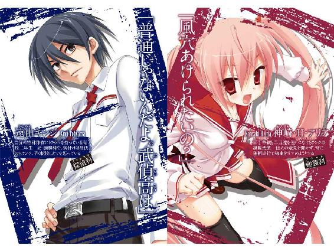
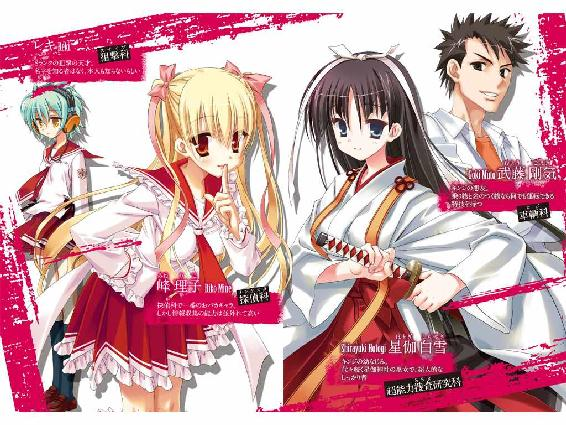
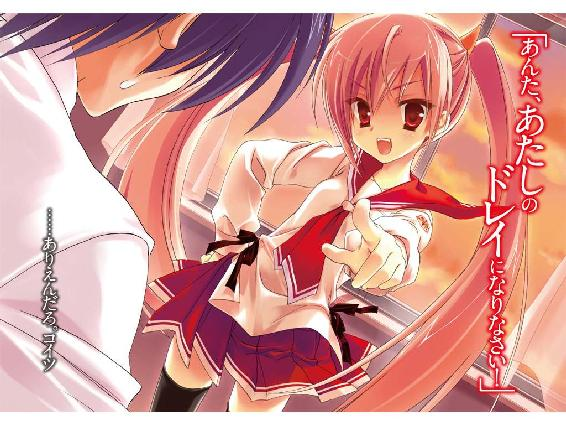
ＭＦ文庫Ｊ
緋弾のアリア
赤松中学
口絵・本文イラスト●こぶいち
編集●笹尾明正
――空から女の子が降ってくると思うか？
昨日見た映画では、降ってきてたんだ。
まあ、映画とかマンガならいい導入かもな。
それは不思議で特別なことが起きるプロローグ。
主人公は正義の味方にでもなって、大冒険が始まる。
ああ、だからまずは空から女の子が降ってきてほしい！
......なんて言うのは、浅はかってモンだぜ。
だってそんな子、普通の子なワケがない。
普通じゃない世界に連れ込まれ、正義の味方に仕立てられる。
現実のそれは危険で、面倒なことに決まってるんだ。
だから少なくとも俺、遠山キンジは――
空から女の子なんて、降ってこなくていい。
俺はとにかく普通に、平凡な人生を送りたい。
だからまずは、転校してやるんだ。この、トチ狂った学校から......
......ピン、ポーン......
慎ましいドアチャイムの音で、目が覚める。
......いけね。
どうやら俺は、トランクス一丁で寝ていたらしい。
枕元の携帯を見ると――時刻は、朝の７時。
（こんな朝っぱらから、誰だよ......）
居留守を使ってやろうか。
だが、あのチャイムの慎ましさにイヤな予感がする。
もそもそ、とワイシャツをはおり制服のズボンをはくと、俺は１人で住むには広いこのマンションの部屋を渡り......ドアの覗き穴から、外を見た。
するとそこに――やっぱり。
「......ゔ」
――白雪が、立っていた。
純白のブラウス。臙脂色の襟とスカート。
シミ一つ無い武偵高のセーラー服を着て、漆塗りのコンパクトを片手に、何やらせっせと前髪を直している。
何やってんだ白雪。こんな所で。
そう思ってたら今度はすぅーっはぁーと深呼吸を始めた。
相変わらずワケの分からんヤツだ。
――ガチャ。
「白雪」
ドアを開けると、白雪は慌ててぱたんとコンパクトを閉じ、サッと隠す。
そして、
「キンちゃん！」
ぱあっと顔を明るくし、昔のあだ名で俺を呼んできた。
「その呼び方、やめろって言ったろ」
「あっ......ごっ、ごめんね。でも私......キンちゃんのこと考えてたから、キンちゃんを見たらつい、あっ、私またキンちゃんって......ご、ごめんね、ごめんねキンちゃん、あっ」
白雪は見る間に蒼白になり、あわあわと口を手で押さえる。
......文句を言う気も失せるな。
星伽白雪。
キンちゃんという呼び方で分かるように、俺とコイツは幼なじみだ。
外見は名前の通り雪肌で、さっき直していたつやつやの黒髪は子供の頃からずっと前髪ぱっつん。目つきはおっとりと優しげで、まつ毛はけぶるように長い。
さすがは代々続く星伽神社の巫女さんだ。相変わらず、絵に描いたような大和撫子を地で行ってるな。
「ていうか、ここは仮にも男子寮だぞ。よくないぞ、軽々しく来るのは」
「あ、あの。でも私、昨日まで伊勢神宮に合宿で行ってて......キンちゃんのお世話、なんにもできなかったから」
「しなくていいって」
「......で、でも.........すん......ぐす」
「あー分かった分かった！」
目を潤ませた白雪を、俺は仕方なく部屋に上げてやることにする。
「お......おじゃましますっ」
白雪は90度ぐらいの深ぁーいお辞儀をしてから玄関に上がり、脱いだ黒いストラップシューズを丁寧に揃えた。
「で、何しにきたんだよ」
きちんとテーブルにつくのも面倒だったので、俺は座卓の脇にどっかりと腰を下ろす。
「こ、これ」
白雪は自分もふわりと正座すると、持っていた和布の包みを解いた。
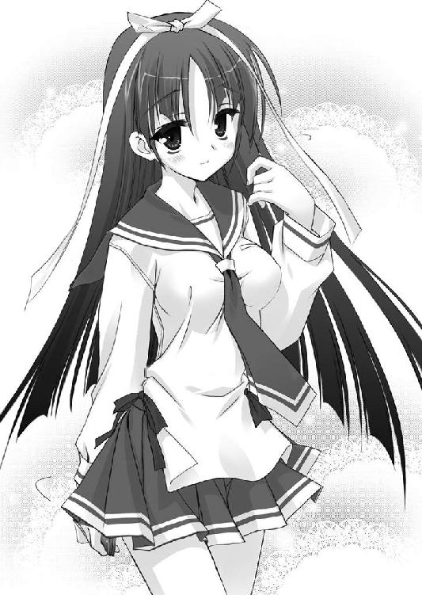
そして出てきた漆塗りの重箱を俺の前に差し出すと、蒔絵つきのフタを開ける。
そこにはふんわり柔らかそうな玉子焼き、ちゃんと向きを揃えて並べたエビの甘辛煮、銀鮭、西条柿といった豪華食材と、白く光るごはんが並んでいた。
「これ......作るの大変だったんじゃないか？」
塗り箸を渡されながら言うと、白雪は、
「う、ううん、ちょっと早起きしただけ。それにキンちゃん、春休みの間またコンビニのお弁当ばっかり食べてるんじゃないかな......って思ったら、心配になっちゃって......」
「そんなこと、お前に関係ないだろ」
と言いつつ、実際春休みにコンビニ弁当ばっかり食っていた俺はそのうまそうなお重を有難くいただくことにした。いつも思うが、白雪の料理、特に和食は本当にうまい。
白雪は正座したまま頬を桜色に染めてうつむき、ミカンをむきはじめた。白い筋を丁寧に取って小皿に乗せているところを見るに、それも俺にくれるつもりらしい。
まぁ......お礼ぐらい言っておくか。
腹いっぱいになった俺はミカンを頬張りながら、白雪に向き直った。
「......えっと、いつもありがとな」
「えっ。あ、キンちゃんもありがとう......ありがとうございますっ」
「なんでお前がありがとうなんだよ。ていうか三つ指つくな。土下座してるみたいだぞ」
「だ、だって、キンちゃんが食べてくれて、お礼を言ってくれたから......」
白雪は嬉しそうな顔を上げ、なんでか目を潤ませて蚊の鳴くような声を出す。
あ、あのなー。
なんでいつもそんなにオドオドするんだ。もっと胸を張って生きろ。
そんな、めったやたらに大きな胸をしてるんだから。
そう思った俺は......つい、本当につい。
白雪の胸を、見てしまった。
こっちに三つ指をつく白雪のセーラー服の胸元は、ちょっと弛んで開いている。
そこには深ぁーい胸の谷間がのぞいており、黒い、レースの下着が――
（く......黒はないだろ！）
高校生らしからぬけしからん下着から、俺は慌てて目を逸らす。が......
じわっ。
体の芯に血が集まるような、あの、危ない感覚がしてきた。
――ダメだ。
禁止しているんだ、俺は。
こういうのを。自分に。
「――ごちそうさまっ」
白雪から逃げるように、俺は勢いよく立ち上がる。
ふう。どうやらセーフだったみたいだな。
白雪はテキパキと重箱を片付けると、今度はソファーに放られていた武偵高の学ランを取ってきた。
「キンちゃん。今日から一緒に２年生だね。はい、防弾制服」
俺がそれを羽織ると、今度はテレビの脇に放り投げてあった拳銃も持ってくる。
「......始業式ぐらい、銃は持たなくてもいいだろ」
「ダメだよキンちゃん、校則なんだから」
と、白雪はその場に両膝をついてこっちのベルトにホルスターごと帯銃させてしまう。
校則......『武偵高の生徒は、学内での拳銃と刀剣の携帯を義務づける』、か。
ああ、普通じゃない。
ウンザリするほど普通じゃないんだよ。武偵高は。
「それに、また『武偵殺し』みたいなのが出るかもしれないし......」
白雪は膝立ちのまま、心配そうな上目遣いで俺を見上げてきた。
「――『武偵殺し』？」
「ほら、あの、年明けに周知メールが出てた連続殺人事件のこと」
ああ、そういえば、そんなのもいたな。
たしか......武偵の車やなんかに爆弾を仕掛けて自由を奪った挙げ句、短機関銃のついたラジコンヘリで追い回して――海に突き落とす。そんな手口のヤツだったっけか。
「でもあれは逮捕されたんだろ」
「で、でも、模倣犯とかが出るかもしれないし。今朝の占いで、キンちゃん、女難の相が出てたし。キンちゃんの身に何かあったら、私......私......ぐす......」
女難の相か。ある意味当たってるな。朝からコイツだからな。
白雪はまた涙目だし、校則違反でまた内申点が下がったら――今の俺の目標、『普通の高校への転校』が、やりにくくなる。まあ、武装ぐらいはしてやるか。
「分かった分かった。ほら、これで安心だろ。だから泣くなって」
俺は溜息をつき、ナイフも――兄の形見の、バタフライ・ナイフだ――棚から出して、ポケットに収める。
白雪はなんでかそんな俺をうっとりと眺め、ほっぺに両手をあてていた。
「......キンちゃん。かっこいい。やっぱり先祖代々の『正義の味方』って感じだよ」
「やめてくれよ――ガキじゃあるまいし」
吐き捨てるように言う俺の胸に、白雪はるんるんと、どこからか取り出した黒い名札をつけてきた。
『遠山キンジ』
武偵高では、４月には生徒全員が名札を付けるルールがある。
俺はスルーするつもりだったが、白雪はそれを先読みして用意していたらしい。
さすがは生徒会長で園芸部長で手芸部長で女子バレー部長で偏差値75の超人的しっかり者だな。ぐうたらの俺にとっちゃ、すこぶるやりにくいヤツだ。
「......俺はメールをチェックしてから出る。お前、先に行ってろよ」
「あっ、じゃあ、その間にお洗濯とかお皿洗いとか――」
「いいからっ」
「......は、はい。じゃあ......その。後でメールとか......くれると、嬉しいですっ」
白雪はもじもじとそんなことを言い、ぺこり。
深ーくお辞儀をしてから、従順に部屋を出て行った。
......ふう。
やっと面倒くさいのが出ていってくれたか。
どっかりとＰＣの前に座り、だらだら......と、メールやＷｅｂを見る。
だらだら、だらだら......としていたら、時刻はいつの間にか７時55分になっていた。
しまった。ちょっとだらだらしすぎたか。
――58分のバスには乗り遅れたな。
―――生涯。
生涯、俺はこの７時58分のバスに乗り遅れたことを悔やむだろう。
なぜならこのあと、空から女の子が降ってきてしまったんだから。
神崎・Ｈ・アリアが。
１弾 La bambina dal'ARIA
雨が降ったら、雨を浴びて楽しめ――と言ったのはアルチュール・ランボーだったか？ 負け惜しみもそこまでいくとポジティブというかなんというか。
バスに乗り損ねた俺はそのランボーだったかに倣って、仕方なしに通学路の光景を眺めながらチャリで登校することにした。
近所のコンビニとビデオ屋の脇を通り、台場に続くモノレールの駅をくぐる。
その向こうには、海に浮かぶような東京のビル群。
ここ、武偵高こと東京武偵高校は、レインボーブリッジの南に浮かぶ南北およそ２キロ・東西５００メートルの長方形をした人工浮島の上にある。
学園島とあだ名されたこの人工浮島は、『武偵』を育成する総合教育機関だ。
武偵とは凶悪化する犯罪に対抗して新設された国際資格で、武偵免許を持つ者は武装を許可され逮捕権を有するなど、警察に準ずる活動ができる。
ただし警察と違うのは金で動くことで、金さえもらえば、武偵法の許す範囲内ならどんな荒っぽい仕事でも下らない仕事でもこなす。つまりは、『便利屋』だ。
――で。
この東京武偵高では、通常の一般科目に加えて、その名の通り武偵の活動に関わる専門科目を履修できる。
専門科目にもいろいろあって、たとえばいま横を通り抜けたのが探偵科の専門棟。
高１の３学期から俺が転科して入った所で、古式ゆかしい推理学や諸々の探偵術を学ぶ、まあこの学校の中では一番マトモな学科といえる。
その先にあるのが通信科、さらに向こうに鑑識科、この辺はまだ穏便だが、もう少し行くと去年の２学期まで俺が在籍していた――悪名高き、強襲科がある。
......俺は体育館へ向けて、チャリをターンさせた。
よし、なんとか始業式には間に合いそうだぞ。
こんな学校とはいえ、１学期の始業式から遅刻するのは何だからな――
「 その チャリには 爆弾 が 仕掛けて ありやがります 」
奇妙な――チラシを切り貼りして作った脅迫文みたいな、妙な声。
「 チャリを 降りやがったり 減速 させやがると 爆発 しやがります 」
ああ、これはあれだ。ネットで人気のボーカロイド。あれで作った人工音声だろ。
そんな分析をしてしまってから、聞こえたセリフの一部を思い出す。
――爆弾......だ？
いきなり何だ。どこのバカだ。どういう冗談だ。
眉を寄せて周囲を見回すと、ギョッとしたことに俺の自転車にはいつの間にか妙な物体が併走してきていた。
車輪を２つ平行に並べただけで器用に走る、タイヤつきのカカシみたいな乗り物。
こいつは......むかしテレビで見たことがあるぞ。
『セグウェイ』とかいう乗り物だ。
「 助けを 求めては いけません。ケータイを 使用した場合も 爆発 しやがります 」
セグウェイはしかし無人で、人が立って乗るべき部分にはスピーカーと――１基の自動銃座が載っていた。
「――！」
その銃座から俺を見つめる、銃口。
ＵＺＩ。
秒間10発の９ミリパラベラム弾をブッ放す、イスラエルＩＭＩ社の傑作短機関銃だ。
「なっ......何だ！ 何のイタズラだっ！」
叫ぶが、セグウェイは何も答えない。
ただ、俺に銃口を向けながら併走してくるだけだ。
なんだ――!?
いきなり何なんだよ!?
混乱する頭でチャリをあちこちまさぐると――サドルの裏に、いつの間にか変な物が仕掛けられていた。落ち着け、落ち着け、と自分に言い聞かせながら指でなぞる。
――やばい。型までは分からないが、どうやらプラスチック爆弾らしい。それもこの大きさ。自転車どころか自動車でも跡形なく消しとばせるサイズだぞ。
―― マ ジ か よ ――
全身に悪寒が走り、冷や汗が滲む。
やられた。直感で分かる。こいつはたぶんイタズラじゃない。
ハメられた。なんてこった。チャリを乗っ取られた。
――世にも珍しい、チャリジャックじゃないか！
ちくしょう。
ちくしょう。
なんで俺が。
なんでこんなことに。
――俺は万一に備え、とにかく人けのない場所を探して走り、走り、第２グラウンドへと向かった。
金網越しに見た朝の第２グラウンドには、いつも通り誰もいない。
俺は仕方なしに、その入口めがけてチャリをこぐ。
セグウェイは相変わらず、銃を向けながら併走してくる。
この手口。白雪が言ってた『武偵殺し』の模倣犯じゃねえか。
ていうか――どうすればいいんだよ!?
ここに来るまでに死ぬほど必死に考えたが、俺は結局手も足も出ずにいる。
――おい俺。俺は。
死ヌノカ。
コンナ所デ。
「――？」
その時だった。俺はこのありえない状況の中、さらにありえないものを見た。
グラウンドの近くにある７階建てのマンション――たしか、女子寮――の屋上の縁に、女の子が立っていたのだ。
武偵高のセーラー服。
遠目にも分かる、長い、ピンクのツインテール。
彼女は――有明の白い月をまたぐようにして、飛び降りた。
（――飛び降りた!?）
一瞬ペダルを踏み外しかけた俺は、慌ててチャリこぎに戻る。
ウサギみたいにツインテールをなびかせて、虚空に身を躍らせたその女子は――
ふぁさーっ。と。
事前に屋上で滑空準備させてあったらしいパラグライダーを、空に広げていった。
チャリをこぎつつその光景に目を丸くしていると、女の子はツインテールをなびかせ、あろうことか、こっちめがけて降下してくる！
「バッ、バカ！ 来るな！ この自転車には爆弾が――」
俺の叫びは間に合わない。少女の速度が意外なまでに速い。
ぐりん。ブランコみたいに体を揺らしてＬ字に方向転換したかと思うと、右、左。少女は左右のふとももに着けたホルスターから、それぞれ銀と黒の大型拳銃を２丁抜いた。
そして――
「ほらそこのバカ！ さっさと頭を下げなさいよ！」
バリバリバリバリッ！
俺が頭を下げるより早く、問答無用でセグウェイを銃撃した！
拳銃の平均交戦距離は、７ｍと言われている。だが、少女と敵の距離はその倍以上ある。しかも不安定なパラグライダーから、おまけに二丁拳銃の水平撃ち。
これだけ不利な条件が揃っていたにもかかわらず、彼女の弾は魔法のように次々命中していく。反撃するヒマもなく、敵の銃座と車輪はバラバラにブッ壊されていった。
――うまい。
なんて射撃の腕だ。
あんな子が、うちの学校にいたのか？
くるっ、くるくるっ。
二丁拳銃を回してホルスターに収めた少女は、今度は、ひらり。
スカートのオシリを振り子みたいにして、険しい表情のまま俺の頭上に飛んできた。
そうだ。安心するのはまだ早い。向こうのオシリはどうでもいい。
こっちのケツの下には、ビルの解体にでも使えそうな爆薬が貼り付いてるんだからな！
俺は少女から逃げるように、第二グラウンドへ入る。
「く、来るなって言ってんだろ！ この自転車には爆薬が仕掛けられてる！ 減速すると爆発するんだ！ お、お前も巻き込まれるぞ！」
「――バカっ！」
俺の真上に陣取った彼女は......げしっ！
白いスニーカーの足で、俺の脳天を力いっぱい踏みつけてきた。
「武偵憲章１条にあるでしょ！ 『仲間を信じ、仲間を助けよ』――いくわよ！」
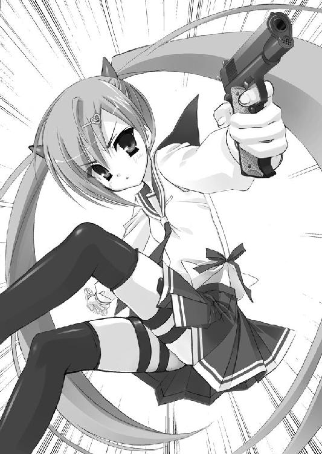
女の子が、気流をとらえてフワッと上昇する。
華麗なパラグライダー捌きに、俺は踏まれた怒りも忘れてその光景を見上げてしまう。
なんて運動神経だ。でもスパッツぐらいはけ、とは思う。まあ一瞬で飛んでったから、何も見えやしなかったけど。
ていうか――今の言いぐさ。
『いくわよ！』って、何をする気だ。
俺を助ける気か？
――どうやって？
少女はグラウンドの対角線上めがけて再び急降下し、こっちへ向けて鋭くＵターンする。
そして――ぶらん。
さっきまで手で引いていたブレークコードのハンドルにつま先を突っ込み、逆さ吊りの姿勢になった。
そのまま、物凄いスピードでまっすぐ飛んでくる。
都合、俺はアイツに向かって走る形になった。
「――マジかよ......！」
相手の意図が分かって、俺は青くなる。
こっちが気づいたことに気づいたらしく、少女は、
「ほらバカっ！ 全力でこぐっ！」
大声で命令しつつ、逆さ吊りのまま両手を十字架みたいに広げた。
――バカはそっちだ！
そんな助け方があるか！
でも、他に方法もねえし――やるしかない、のか！
俺はもうヤケクソで、チャリをこぐ。
こぐ。こぐ。こぐ！ 全速力で！
俺はアイツに、アイツは俺に近づいていく。
２人の距離はみるみる縮まっていく。
ああ、昨日見たアニメ映画に、こういうシーンがあったな。
――でもあれ、男と女が逆じゃなかったか!?
そう自分にツッコんだ瞬間――上下互い違いのまま、俺は少女と抱き合った。
そしてそのまま、空へさらわれる。
息苦しいくらいに顔が押しつけられた少女の下っ腹からは、クチナシの蕾のような、甘酸っぱい香りがして――
ドガアアアアアアアアアンッッッ！！！
閃光と轟音、続けて爆風。
俺が乗り捨てたチャリが、木っ端みじんに爆発したのだ。
あの爆弾は、やっぱり本物だった――！
熱風に吹っ飛ばされながら、俺たちは――引っかかった桜の木にパラグライダーをもぎ取られ、グラウンドの片隅にあった体育倉庫の扉に突っ込んでいった。
がらがらと音を上げ、何にぶつかったのかも分からず......
俺の意識は、一瞬、途切れた。
......
............
「う......っ。痛ッてぇ......」
......俺は......
何か狭い箱のような空間に、尻モチをついた姿勢で収まっている。
――ここは、どこだ。
俺は確か、体育倉庫に突っ込んでしまって......ああ、分かった。
これは、跳び箱の中だ。
どうやら一番上の段を吹っ飛ばして、中にハマってしまったらしい。
しかしなんだろう。身動きが取れない。
身動きが取れないのはここが狭いせいもあるが、座っている俺の前に、甘酸っぱい香りのする何かがあるせいでもありそうだった。
なんだろうこれは。あったかくて、柔らかい。
脇腹を、両側から何か心地よい弾力をもったものに挟まれている。両肩に何かがもたれかかっている。さらに額の上には、ぷにぷにした物体が乗っていた。
「ん......？」
額と頬で、そのぷにぷにした何かを押しのけるようにすると――
――かくん。
俺に押しのけられたのは、
（............可愛っ......！）
いい、と反射的に言ってしまいそうな......
女の子、の顔だった。
女子寮から飛び降り、パラグライダーに乗ったまま戦い、俺を空中にさらって助けた、さっきの勇敢な少女だ。
「......！」
それで気付く。
俺の脇腹を左右から挟んでいるのは、彼女のふともも。
両肩に乗っかってるのは、腕。
――何がどうもつれ合ってこうなったのかは分からないが、俺は、彼女を抱っこして、ここにハマってしまっているらしいのだ！
ありえん。
ありえないぞ。
女子と、密着しすぎだ。
じわ......と、俺の体の芯に、熱くなった血液が集まり始める。
ダ、ダメなんだ。俺は。
こういうのは。禁止なんだ。
「......お......おい」
声を掛けてみるが、答えはない。
少女は眠るように気を失っている。
その目を縁取るのは、ツンツンと長いまつげ。
甘酸っぱい香りの息を継ぐピンクの唇は、桜の花びらみたいに小さい。
ツインテールに結われた長い髪は、細い窓から届く光に、キラキラ......と豊かなツヤをきらめかせていた。色は、ピンク。珍しい。ピンクブロンドってやつか。
さっきは俺も必死だったから気づかなかったが......カワイイ。文句なしに可愛い子だ。まるでファンタジー映画から飛び出してきたような、作りものみたいに可憐な少女。
だが......この可愛さはどちらかというと子供とかお人形さんとかに感じる、そっち系の愛らしさで......というのもコイツ、こうやって間近に見るとひときわチビっ子なのだ。
この体格はたぶん、中等部。いや、もしかしたら最近始まったインターン制度で入ってきた小学生かもしれないぞ。
――そんな小さな子が、さっきの救出劇をやってのけたのか。
すごい。それはすごい、のだが......
「......くっ......」
この子はいま俺の腹にまたがるような姿勢になって、腹部をきつく圧迫してきていた。
息が、苦しい。
なので、なんとか姿勢を変えられないものかと藻掻いていると――
ちろ、ちろろ。
「？」
俺の鼻を、少女の名札がくすぐってきた。
今日が始業式なので学年やクラスは未記入だったが、名前は――『神崎・Ｈ・アリア』。
「......？」
でも、なんでこんな高い位置に名札があるんだ？
そう思って視線を下ろしていくと――
「――っ！」
このアリアとかいう少女のブラウスが......
首の辺りまで、思いっきりめくれ上がってしまっていたのだ！
どうやらここに転がり込んだ時の勢いで、ズレてしまったらしい。
おかげで、白地にハート・ダイヤ・スペード......トランプのマークがぽちぽちプリントされたファンシーな下着が、丸出しになっている。
『 65Ａ→Ｂ 』......？
下着の縁からぴょろっと出ていた妙なタグの表記に、ああ、と思いつく。
これはプッシュアップ・プランジ・ブラ。いわゆる「寄せて上げるブラ」だ。
何でこんなことを知っているのかというと生前の兄が詳しかったからで、断じて俺が自発的に知っていた事ではないのだが......このアリア、ＡカップをＢカップに偽装しようとしているらしい。だが気の毒だが、その偽装は失敗と言わざるをえないだろう。寄せて上げる元手に乏しすぎて、寄りも上がりもしていないからだ。
とはいえ――これは、俺にとっては不幸中の幸いだったかもしれない。
もしこの胸がもっと大きくて顔に押し付けられたりしていたら、困った事になっていた。
禁を破って、有無を言わさず、なってしまっていただろう。
『あのモード』に。
「......へ......へ......」
「――？」
「ヘンタイ――――！」
突然聞こえてきたのは、アニメ声というかなんというか、この声だけでもファンがつきそうな、おいお前その顔その姿でその声は反則じゃないか？ ってぐらいの、ちょっと鼻にかかった幼い声だった。
「さっ、さささっ、サイッテー!!」
どうやら意識を取り戻したらしいアリアさんは、ぎぎん！ と俺を睨んで、ばっ！ とブラウスを下ろすと――
ぱかぽこ ぱかぽこ ぱかぽこ！
腕が曲がったままで力の籠もってないハンマーパンチを、俺の頭に落とし始めた。
「おっ、おい、やっ、やめろ！」
「このチカン！ 恩知らず！ 人でなし！」
ぱかぽこぱかぽこぱかぽこぱかぽこ！
どうやらアリアは、自分のブラウスを俺がめくり上げたと勘違いしているらしい！
「ち、違う！ こ、これは、俺が、やったんじゃ、な――！」
そこまで、殴られつつの俺が言ったとき。
――ガガガガガガガンッ!!
突然の轟音が、体育倉庫を襲った。
――何だ!?
今、跳び箱にも何発か、背中の側に激しい衝撃があった。
まるで、銃撃されているような――！
「うっ！ まだいたのねっ！」
アリアはその紅い瞳で跳び箱の外を睨むと、ばっ、とスカートの中から拳銃を出した。
「『いた』って、何がだ！」
「あのヘンな二輪！ 『武偵殺し』のオモチャよ！」
『武偵殺し』？ ヘンな二輪？ ――さっきの、セグウェイのことか！
じゃあ今のは、まるで、じゃなくて本当に銃撃だったのか！
体育の授業でも拳銃を使う武偵高では、跳び箱も防弾製だ。そこはラッキーだった。
だが――こんな箱に追い詰められた状態から、どうすればいいんだ？
分からない、何もできない。今の俺では。
「あんたも――ほら！ 戦いなさいよ！ 仮にも武偵高の生徒でしょ！」
「むッ、ムリだって！ どうすりゃいいんだよ！」
「これじゃあ火力負けする！ 向こうは７台いるわ！」
７台......短機関銃が、７丁もこっちに向けられてるっていうのか!?
「――――！」
その時だった。予想外の事が起きた。
銃を撃つため無意識に前のめりになったアリアが――
その胸を、俺の顔に思いっきり押しつけてきたのだ。
ババッ！ バババッ！
跳び箱のすき間から応射するアリアは射撃に集中しているらしく、自分の胸が俺の顔に密着してることに気付いていない。
ああ。
ああ――
これは、アウトだ。
なぜなら――あったから。
無いように見えたが、いや、実際ほとんど無いのだが、そこは女子の胸。
こんなに小さいのに、ちゃんと柔らかいふくらみが、あった。
いま俺の顔面には、夢のように柔らかい、水まんじゅうみたいなカワイイものが押し当てられている。
知らなかった。女の子の胸とは、ちっこくても柔らかいものだったのか。もっと大きく丸くならないと柔らかくならないものかと思っていたが、違ったみたいだ。
緊急時にもかかわらず、どこか冷静にそんな事を考えてしまったのは――
もう、分かってしまっていたから。
――自分が、自らの心に課した禁忌を、破ってしまったことを。
アリアの胸に抱かれるようになりながら、俺は......
『あの感覚』を、感じていた。
体の芯が熱く、堅く、むくむくと大きくなっていくような――言いようのない感覚。
ドクン、ドクン――！
火傷しそうに熱くなった血液が、体の中央に集まっていく。
なってしまう。なっていく。
――ああ。
なってしまった。
ヒステリアモード、に......！
ズガガガッ！ ガキンッ！
弾切れの音を派手に上げたアリアが、身をかがめて拳銃に弾倉を挿し替える。
「――やったか」
「射程圏外に追い払っただけよ。ヤツら、並木の向こうに隠れたけど......きっとすぐまた出てくるわ」
「強い子だ。それだけでも上出来だよ」
「......は？」
いきなり口調がクールになった俺に、アリアが眉を寄せる。
ああ、やっちまうのか――また。
その逡巡は、ほんの一瞬で。
俺はアリアの細い脚と、すっぽり腕に収まってしまう小柄な背中に手を回し、すっくと立ち上がってしまっていた。
「きゃっ!?」
「ご褒美に、ちょっとの間だけ――お姫様にしてあげよう」
いきなりお姫様抱っこされたアリアが、ぼんっ。
ネコっぽい犬歯の口を驚きに開いて、真っ赤になった。
俺はアリアを抱いたまま跳び箱の縁に足をかけ、バッ、と倉庫の端まで一足で跳ぶ。
そして、積み上げられたマットの上に......ちょこん。
アリアを、お人形さんみたいに座らせてやった。
「な、なな、なに......!?」
さっきまでの俺とは一変してしまった俊敏な動きに、アリアは目をぱちぱちさせている。
「姫はそのお席でごゆっくり、な。銃なんかを振り回すのは、俺だけでいいだろう？」
ああ、俺よ。
俺はもう、自分を止められないらしいな。
「あ......アンタ......どうしたのよ!? おかしくなっちゃったの!?」
慌てまくったアニメ声に、かぶせるようにして――
ズガガガガガガンッ！
再び、ＵＺＩが体育倉庫に銃弾を浴びせてきた。
だが壁は防弾壁だし、ここはヤツらから見て死角になっている。撃つだけ弾のムダだ。
俺は苦笑しながら......ヤツらの射撃線が交錯する、ドアの方へと歩いていった。
「あ、危ない！ 撃たれるわ！」
「アリアが撃たれるよりずっといいさ」
「だ、だ、だから！ さっきからなに急にキャラ変えてんのよ！ 何をするの！」
俺は半分だけ振り返って、赤面しまくり混乱しまくりのアリアにウィンクすると――
「アリアを、守る」
マットシルバーのベレッタ・Ｍ92Ｆを抜いて、ドアの外へ身を晒した。
グラウンドに並んだ７台のセグウェイが、一斉にＵＺＩを撃ってくる。
その弾は――
全て、当たらない。
当たるわけがない。
視えるからだ。
今の俺の目には、銃弾がまるでスローモーションのように、全部視えてしまうのだ。
いい狙いだ。全て、俺の頭部に照準を合わせてるな。
俺はその一斉射撃を――上体を後ろに大きく反らして、やりすごしてやった。
そしてその姿勢のまま、左から右へ、腕を横に凪ぎながらフルオートで応射する。
見なくても、放った全ての銃弾の行き先が分かる。
使った弾丸は、７発――
その全てが、ＵＺＩの銃口に飛び込んでいくのも、分かる――！
ズガガガガガガガンッ!!
セグウェイたちは全て、その銃座のＵＺＩを吹っ飛ばされた。
俺の、たった７発の銃弾に。あっけなく。
折り重なるようにして倒れたセグウェイたちが全て沈黙しているのを確かめると、俺は体育倉庫に戻った。
中ではアリアが、なぜだか跳び箱に入り直していた。
跳び箱から上半身を出した状態で、『今、私の目の前でなにが起きたの？』という顔をしている。
そして俺と目が合うと、ぎろ！ と睨み目になって、モグラ叩きみたいに跳び箱の中へ引っ込んでしまった。
......何だ。
何でか、怒っているようだ。
「――お、恩になんか着ないわよ。あんなオモチャぐらい、あたし１人でも何とかできた。これは本当よ。本当の本当」
強がりながらアリアは、ゴソゴソ。何やら跳び箱の中でうごめく。
どうやら服の乱れを直しているらしい。
だが......それは少し難しいだろう。さっきお姫様抱っこした際に見てしまったのだが、アリアのスカートは最初の爆風のせいか、ホックが壊れてしまっていた。
「そ、それに、今のでさっきの件をうやむやにしようったって、そうはいかないから！ あれは強制猥褻！ レッキとした犯罪よ！」
と、アリアは跳び箱の指を突っ込む穴から紅い瞳でこっちを睨んでくる。
「......アリア。それは悲しい誤解だ」
俺は――シュルッ......と。
ズボンを留めるベルトを外して、跳び箱に投げ入れてやった。
「あれは不可抗力ってやつだよ。理解してほしい」
「あ、あれが不可抗力ですって!?」
アリアは跳び箱の中から、俺のベルトで留めたスカートを押さえつつヒラリと出てきた。
ふわ。見るからに身軽そうな体が、俺の正面に降り立つ。
え。
立ったのか？ それで？
というぐらい、やはりアリアはちっこかった。ツインテールを留めているツノみたいな髪飾りで上乗せしても、１４５、ないだろう。
「ハ、ハッキリと......あんた......！」
ぶわああぁ。
アリアは言いながら睨み目になり、真っ赤になっている。
ぎゅう、と拳も握りしめている。
そして、わわ、わわ、わ。ローズピンクの唇を震わせてから、がいん！ 言葉を発する勢いづけのためか床を踏みつけた。
「あ、あたしが気絶してるスキに、ふ、服を、ぬ、ぬぬ、脱がそうとしてたじゃないっ！」
そんなに恥ずかしいなら言わなきゃいいのに。
「そ、そそ、それに、む、むむむ」
がいん！
また床を踏んだ。床になんの恨みがある？
「胸、見てたぁあああっ！ これは事実！ 強猥の現行犯！」
ぼふっ。
と頭から噴火しそうな勢いで、アリアはさらに赤くなった。耳まで真っ赤だ。
「あんたいったい！ 何する！ つもりだったのよ！ せ、せ、責任取んなさいよ！」
がいん！ がん！ ががん！
新しいタイプの地団駄だな。それ。
ていうか責任って何だ責任って。
「よしアリア、冷静に考えよう。いいか。俺は高校生、それも今日から２年だ。中学生を脱がしたりするワケがないだろう？ 歳が離れすぎだ。だから――安心していい」
噛んで含めるように優しく言うと、アリアは、わぁあー！ と言う口になって両手を振り上げた。
声が出てないのは絶句しているということらしい。
そして――ぎぎん！ と涙目になって俺を睨みつける。
「あたしは中学生じゃない!!」
がすんっっっ！ 踏みつけた床がとうとう弾けて木片が散った。
――まずいな。
説得しようとしたが、しくじったようだ。
どうやら歳のことで、さらに怒らせてしまったらしい。
女というやつは、実際より歳上に見られると怒る習性がある。しかもこの子は凶暴だ。このままだと体育倉庫の床が抜ける。フォローしておいた方がいいだろう。
「......悪かったよ。インターンで入ってきた小学生だったんだな。助けられたときから、そうかもなとは思っていたんだ。しかし凄いよ、アリアちゃんは――」
勇敢な子だね、と続けようとした時......今度は、がばっ。
アリアが、顔を伏せた。
顔の上半分が、影になって見えなくなる。
そして、ばし、と両ふとももに左右の手をついた。
今度は何だ。忙しい子だな。
「こんなヤツ......こんなヤツ......助けるんじゃ、なかった!!」
ばぎゅぎゅん！
「うおっ！」
足元に撃ち込まれた２発の銃弾に、俺は青ざめた。
この子、撃ったぞ！ それも二丁拳銃で！
「 あ た し は 高 ２ だ !! 」
一難去ってまた一難、再び――だ。
「ま、待てッ！」
さらに至近距離から銃を向けてきたアリアに――
俺はむしろ飛びかかり、その細腕を両脇に抱え込んで後ろに突き出させた。
ばりばりばりっ！ がきんがきんっ！
アリアは反射的に引き金を引き、背後の床が着弾した音を上げる。
今の――音で分かる。２丁とも弾切れだ。
『ヒステリアモード』でよかった。『普段の俺』だったら、今ごろ鉛玉を何発も喰らって床をのたうち回っていただろう。
俺たちはそのまま、取っ組み合うような姿勢になった。
「――んっ――やぁっ！」
くるっ。
体をひねったかと思うと、アリアは柔道でいう跳ね腰みたいな技で、体格差をものともせず俺を投げ飛ばした。
「うっ――!?」
この子、徒手格闘もできるのか？ しかもやたら巧い。
辛うじて受け身を取ると、俺は――その勢いを殺さず体育倉庫から転がり出た。
「逃げられないわよ！ あたしは逃走する犯人を逃がしたことは！ １度も！ ない！ ――あ、あれ？ あれれ、あれ？」
叫びながら、アリアはわしゃわしゃとスカートの内側を両手でまさぐった。
弾切れになった拳銃に再装填する、弾倉を探しているのだろう。
「ごめんよ」
俺はさっき投げられた際にスカートからスリ取っておいた予備弾倉を掲げ――あさっての方向へ投げて見せる。
「――あ！」
遠くの茂みに落ちていくそれを目で追ってから、アリアは無用の長物になってしまった拳銃を上下にブン！ ブン！ と振り回した。
やったな！ やったな！ という怒りの動作らしい。
「もう！ 許さない！ ひざまずいて泣いて謝っても、許さない！」
アリアは拳銃をホルスターにぶち込むとセーラー服の背中に手を突っ込み――
じゃきじゃき！
そこに隠していた刀を、二刀流で抜いた。
銃、徒手格闘ときて、今度は刀か――！
唖然とする俺に――だんッ！ アリアは人間離れした瞬発力で飛びかかってきた。
そしてその寸詰まりの日本刀を、俺の両肩めがけて流星みたいに突き出してくる。
ザザッ！
俺はなんとか、背後に転がってそれを避けた。
「強猥男は神妙に――っわぉきゃっ!?」
勢いよく俺の方に踏み出したアリアは、新種のヤマネコみたいな声を上げ――
見えない相手にバックドロップを喰らったように、真後ろにブッ倒れた。
その足元には、アリアの弾倉から抜いておいた銃弾がいくつも転がっている。
さっき、投げた弾倉に向こうが目を奪われた隙にバラ撒いておいたのだ。
「こ、このッ......みゃおきゃっ！」
立ち上がろうとして弾を踏み、また両足が真上を向くぐらい勢いよくコケている。マンガみたいだな。
このスキに俺は、とにかく一目散に逃げることにした。
アリアは常人離れした戦闘力を持っている。だが、今は怒りと羞恥心で冷静さを欠いている状態だ。
対する俺は、『ヒステリアモード』。
たとえ１００人のＦＢＩ捜査官からだって、逃げ切れるさ――
そう思いながら俺は、背中で、彼女の捨てゼリフを聞き流すのだった。
「この卑怯者！ でっかい風穴――あけてやるんだからぁ！」
それが俺、遠山キンジと。
後に『緋弾のアリア』として世界中の犯罪者を震え上がらせる鬼武偵、神崎・Ｈ・アリアの......
硝煙のニオイにまみれた、最低最悪の、出会いだった。
２弾 神崎・Ｈ・アリア
（......また、やっちまったよ......）
結局出られなかった始業式の後、俺は鬱々とした気分で教務科に事件の報告を済ませ、新しいクラスにトボトボ向かっていた。
ヒステリア・サヴァン・シンドローム。
俺は『ヒステリアモード』と勝手に呼んでいるが、この特性を持つ人間は、一定量以上の恋愛時脳内物質βエンドルフィンが分泌されると、それが常人の約30倍もの量の神経伝達物質を媒介し、大脳・小脳・脊髄といった中枢神経系の活動を劇的に亢進させる。
その結果、ヒステリアモード時には論理的思考力、判断力、ひいては反射神経までもが飛躍的に向上し、うんたらかんたらがどうたらこうたらで......
まぁ、一言で言うと。
この特性を持つ人間は、性的に興奮すると、一時的にまるで人が変わったようなスーパーモードになれるのだ。
だが、今はもう元に戻ったものの......アリア、すなわち女子の前でヒステリアモードになってしまった事に、俺は激しく落ち込んでいた。
この体質は本来、絶対、人に知られてはいけないものなのだ。
特に、女子には。
（女ってのは......おっそろしい生き物だからなー......）
子孫を残すため、男には女を守る時に大なり小なりパワーアップする本能がある。で、ヒステリアモードとは、それが異常に発達したものらしい。
そして......その本能のせいなのか、俺はヒステリアモードになると女子に対してフシギな心理状態になってしまう欠点があるのだ。
１つには――女子を、何がなんでも守りたくなってしまうこと。
困っている女子・ピンチに陥ってる女子を助けるためなら、この力を使い、求められるままに戦ってやりたくなってしまうのだ。
そしてもう１つ、極めて耐えがたいのは――
その際、女子に対してキザな言動を取ってしまうことだ。
これはヒステリアモードの大本にある「子孫を残すため」の本能が働いて、女にとって魅力的な男を演じてしまうということらしいのだが......ヒステリアモードの俺は、女子に優しく接するわ、誉めるわ、慰めるわ、さりげなく触るわ、ああ、後から思い出すたびに死にたくなるような、おっそろしいジゴロキャラになってしまうのだ。
（でもまあ、もっとおっそろしいのは......女の方なんだけどな）
思い起こせば――中学――神奈川武偵高付属中の頃は、最悪だった。
この体質を知った一部の女子が、俺を利用することを覚えやがったのだ。
ヤツらは俺をあの手この手のイタズラでヒステリアモードにし、こき使った。ある者はイジメを受けた復讐に俺を使い、ある者はセクハラ教師への制裁をさせたりもした。
つまり俺は......ヤツらにとっての独善的な『正義の味方』にさせられていたのだ。
（白雪みたいなパターンも、困るんだよな......）
そんな理由から地元を避け、東京武偵高を受験した朝――
運の悪さに定評のある俺は、たまたまタチの悪い男たちにからまれて逃げてきた白雪と廊下でぶつかり押し倒してしまうというマンガじみたハプニングに見舞われ......東京でもいきなり、ヒステリアモードになってしまった。
で、白雪を追ってきた不良どもをぶちのめし、挙げ句、泣きじゃくるアイツが落ち着くまで、甘い甘い言葉をかけ、優しく慰めてやってしまっている。
それ以来、アイツの生来のお節介焼き属性には妙な拍車がかかってしまったのだ。
（俺は女なんか、ずっと避けて生きていきたいのに......）
そういう本やＤＶＤは別にいい。そもそもああいうものには興味が無いし、何より、見なければいいだけの話なんだから。
だが、生身の女子に関してはそうはいかない。
ヤツらはブラウスの中、スカートの下に爆弾を秘め、そこらじゅうを歩いているのだ。
（ちくしょう......ホントに、困った病気を遺伝させてくれちまったもんだよ......）
俺は後ろ頭をがりがり掻きながら、新しくクラス分けされた２年Ａ組に入った。
そう、俺の家――遠山家は、代々この力を遺伝させてきた。
このあまりにも厄介で、面倒で、こっ恥ずかしく、そして......
――兄さんを破滅させた、呪うべき、忌まわしい力を。
「先生、あたしはアイツの隣に座りたい」
俺がクラス分けされた２年Ａ組の、最初のＨＲで――
気絶しそうなほど不幸なことに同じ２年Ａ組だったあのピンクのツインテールが、いきなり俺を指してそんなことを言ったもんだから。
クラスの生徒たちは一瞬絶句して、それから一斉にこっちを見て......
わぁーっ！ と歓声を上げた。
俺は――
ずりっ、とイスから転げ落ちる。
絶句。ただ、ただ、絶句するしかない。
先生が「うふふ。じゃあまずは去年の３学期に転入してきたカーワイイ子から自己紹介してもらっちゃいますよー」などと前置きをしたから、イヤな予感はしてたんだ。
そして俺の死角にあった席を立ち教壇に上がったチビがまさにさっきの神崎・Ｈ・アリアだったわけで、もうヒステリアモードも切れて通常モードに戻っていたからどうすればいいのか何も思いつかず、半分は銃撃されるのを覚悟で震えていた。
そしたらいきなり『隣に座りたい』ときた。
「な、なんでだよ......！」
ようやく出てきた声で、呟く。
『正義の味方』として利用する腹じゃないだろう。アイツは、俺のヒステリアモードのことに気付いてないハズだし。
気に入られた――ってワケでもなさそうだ。アイツはさっきの俺に最後まで武器を突きつけて、怒っていたんだからな。
じゃあ、隣の席に座って、じっくり殺そうってことなのか。
「よ......良かったなキンジ！ なんか知らんがお前にも春が来たみたいだぞ！ 先生！ オレ、転入生さんと席代わりますよ！」
まるで選挙に当選した代議士の秘書みたいに俺の手を握ってブンブン振りながら、右隣に座っていた大男が満面の笑みで席を立つ。
身長１９０近いこのツンツン頭は、武藤剛気。
俺が強襲科にいた頃よく俺たちを現場へ運んでくれた車輌科の優等生で、乗り物と名のつく物ならスクーターからロケットまで何でも運転できる特技がある。
「あらあら。最近の女子高生は積極的ねぇー。じゃあ武藤くん、席を代わってあげて」
先生は何だか嬉しそうにアリアと俺を交互に見てから、事情を知らない武藤の提案を即ＯＫしてしまう。
わーわー。ぱちぱち。
教室はとうとう拍手喝采を始めてしまった。
――違うっ！ 俺はアイツの事なんか何も知らない。それどころかアイツはさっきまで俺に銃をブッ放してた凶暴女なんだ、だから取り消してくれ――！
そう先生に抗議しようとした時、アリアが、
「キンジ、これ。さっきのベルト」
と、俺をいきなり呼び捨てにしつつ、体育倉庫で貸したベルトを放り投げてきた。
見れば、向こうの制服は上下共にどこかで調達してきたらしく新品になっている。
俺がベルトをキャッチすると――
「理子分かった！ 分かっちゃった！ ――これ、フラグばっきばきに立ってるよ！」
俺の左隣に座っていた峰理子が、ガタン！ と席を立った。
「キーくん、ベルトしてない！ そしてそのベルトをツインテールさんが持ってた！ これ、謎でしょ謎でしょ!? でも理子には推理できた！ できちゃった！」
アリアと同じくらい背の低い理子は、探偵科ナンバーワンのバカ女だ。
その証拠に、武偵高の制服をヒラヒラなフリルだらけの服に魔改造している。たしか、スィート・ロリータとかいうファッションだ。
ちなみにキーくんというのは珍妙なコイツが俺につけた珍妙なあだ名である。
「キーくんは彼女の前でベルトを取るような何らかの行為をした！ そして彼女の部屋にベルトを忘れてきた！ つまり２人は――熱い熱い、恋愛の真っ最中なんだよ！」
ツーサイドアップに結ったゆるい天然パーマの髪をぴょんぴょんさせながら、理子はおバカ推理をぶち上げる。
恋って。お前。
だがここはバカの吹きだまり、武偵高。
それでもクラスは大盛り上がりに盛り上がってしまった。
「キ、キンジがこんなカワイイ子といつの間に!?」「影の薄いヤツだと思ってたのに！」「女子どころか他人に興味なさそうなくせに、裏でそんなことを!?」「フケツ！」
武偵高の生徒はこの一般科目でのクラス分けとは別に、それぞれの専門科目で部活のように組や学年を超えて学ぶ。ので、生徒同士の顔見知り率は高いのだが......
新学期なのに、息が合いすぎだろお前ら。こういうことになると。
「お、お前らなぁ......」
俺が頭を抱え、机に突っ伏したとき――
ずぎゅぎゅん！
鳴り響いた２連発の銃声が、クラスを一気に凍り付かせた。
――真っ赤になったアリアが、例の二丁拳銃を抜きざまに撃ったのである。
「れ、恋愛だなんて......くっだらない！」
翼のように広げたその両腕の先には、左右の壁に１発ずつ穴が空いていた。
チンチンチチーン......
拳銃から排出された空薬莢が床に落ちて、静けさをさらに際立たせる。
バカ理子は前衛舞踏みたいなポーズで体をよじらせたまま、ず、ずず、と着席。
......武偵高では、射撃場以外での発砲は『必要以上にしないこと』となっている。つまり、してもいい。まあここの生徒は銃撃戦が日常茶飯事の武偵になろうというのだから、日頃から発砲に対する感覚を軍人並に麻痺させておく必要がある。だから、なのだが......
新学期の自己紹介でいきなり発砲したのは、コイツが初めてだろう。
「全員覚えておきなさい！ そういうバカなことを言うヤツには......」
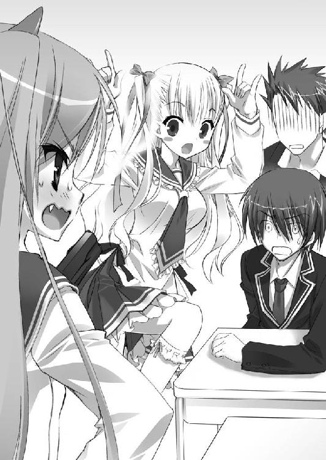
それが、神崎・Ｈ・アリアが武偵高のみんなに発した――最初のセリフだった。
「――風穴あけるわよ！」
昼休みになると同時に質問責めの憂き目にあった俺は、なんとかクラスのアホどもをまいて理科棟の屋上へと避難した。
だいたいアリアのことを聞かれても、俺は何も答えられないのだ。今朝初めて会ってチャリジャックから助けられてそれから追っかけ回されたというだけの関係。個人的なことは何も知らないに等しいんだから。
溜息混じりにしょぼくれていると......屋上に、何人かの女子が喋りながらやってきた。
声に聞き覚えがある。どうやらうちのクラスの、それも強襲科の女子どもらしい。
こそっ。俺は犯罪者のように物陰に隠れた。
「さっき教務科から出てた周知メールさ、２年生の男子が自転車を爆破されたってやつ。あれ、キンジじゃない？」
「あ。あたしもそれ思った。始業式に出てなかったもんね」
「うわ。今日のキンジってば不幸。チャリ爆破されて、しかもアリア？」
１・２・３と並んで金網の脇に座った女子たちは、俺の事を話題にしているようだ。
俺は苦虫を１００匹ほど噛み潰したような顔をして、とりあえず静かに身を潜める。
「さっきのキンジ、ちょっとカワイソーだったねー」
「だったねー。アリア、朝からキンジのこと探って回ってたし」
「あ。あたしもアリアにいきなり聞かれた。キンジってどんな武偵なのとか、実績とか。
『昔は強襲科で凄かったんだけどねー』って、適当に答えといたけど」
「アリア、さっきは教務科の前にいたよ。きっとキンジの資料漁ってるんだよ」
「うっわー。ガチでラブなんだ」
俺は渦中の人として、ついつい会話を盗み聞きしてしまう。
朝から、俺を......ってことは、チャリジャックの直後からストーキングされてたのか。
「キンジがカワイソー。女嫌いなのに、よりによってアリアだもんねぇ。アリアってさ、ヨーロッパ育ちかなんか知らないけどさ、空気読めてないよねー」
「でもでも、アリアって、なにげに男子の間では人気あるみたいだよ？」
「あーそうそう。３学期に転校してきてすぐファンクラブとかできたんだって。写真部が盗撮した体育の写真とか、高値で取引されてるみたい」
「それ知ってる。フィギュアスケートとかチアリーディングの授業のポラ写真なんか、万単位の値段だってさ。あと新体操の写真も」
何なんだその授業は。本当に大丈夫なのかこの高校。
「ていうかあの子さ、トモダチいないよね。しょっちゅう休んでるし」
「お昼も１人でお弁当食べてたよ。教室の隅っこでぽつーんって」
「うわっ、なんかキモぉー！」
わいわいと盛り上がる女子たちの話に、気分がどよーんと沈んでくる。
他人に興味のない俺は、その存在すら知らずにいたが......
アリアはどうやら、この変人揃いの武偵高でも浮くぐらいの目立つキャラらしい。
武偵高校から一般校への生徒の転出には、時期的な制約がある。
これは生徒が持つ銃器・刀剣を一括して公安委員会に登録するよう武偵法で定められているためで、更新期の４月にでないと、学校を辞められない規則になっているのだ。
さらに転出を希望する生徒はこの申請を転出の１年前から６ヶ月前までの間に教務科に提出しておかねばならい。そして――俺はその書類を、すでに作ってある。
間もなくそれを提出して、来年の４月に、武偵の世界から足を洗うつもりだ。
（とはいえ......この部屋だけは、惜しいけどな）
――夕方。
クラスのバカどもからようやく解放された俺は、どっかりと自室のソファーに体を沈め、夕焼け空の東京を窓越しに眺めていた。
今年の１月から、俺は寮のこの部屋に１人で暮らしている。
ここは本来４人部屋なのだが、俺が転科した事と、たまたま相部屋になる探偵科の男子がいなかった事でルームメイトはいない。
これは俺にとって幸運なことだ。
武偵高の変人どもにジャマされないこの空間で、気ままに、平穏に暮らすのは気分がいい。１人ってのは最高だよ。
（ああ、静かだ......）
今朝のチャリジャックが、ウソみたいだ。
あの件に関しては、セグウェイの残骸を鑑識科が回収し、探偵科も調査を始めている。
......だが、切った張ったが日常茶飯事の武偵高では、殺人未遂程度のことは流されてしまうのが悲しい現実だ。強襲科でのドンパチに慣れすぎたせいと、アリアのことで丸１日振り回されていたせいもあり、被害者の俺もかなりスルー気味にしてしまっている。
しかし、あれは一体......何だったんだろう。イタズラにしては悪質すぎる。
あの『武偵殺し』――の模倣犯は、爆弾魔だ。
爆弾魔はこの世で最も卑劣な犯罪者の一種で、大抵、ターゲットを選ばない。無差別に爆発を起こし人々の注目を集めてから、世間に自分の要求をぶつけるのが一般的である。
ピンポーン。
となるとあれはたまたま運悪く俺のチャリに仕掛けられたものなのだろうか。
ピンポンピンポーン。
それとも俺個人を狙ったものか。だが、何の恨みで？
ピポピポピポピポピピピピピピピンポーン！ ピポピポピンポーン！
あー！ うっせえな！
誰かがさっきから俺の部屋のチャイムを連射している。居留守を使おうと思ったが、ダメらしい。
何だ。今日はいろんなことがあって疲れてるんだ。放課後ぐらい静かに過ごさせてくれ。
「誰だよ......？」
渋々、ドアを開けると――
「遅い！ あたしがチャイムを押したら５秒以内に出ること！」
びしっ！
両手を腰にあて、赤紫色のツリ目をぎぎんとつり上げた――
「か、神崎!?」
制服姿の、神崎・Ｈ・アリアがいた。
俺はマンガみたいに目をごしごし擦って見開くが、やっぱりアリアだ。
なんで コイツが ここに !?
「アリアでいいわよ」
言うが早いかアリアはケンケン混じりで靴を玄関に脱ぎ散らかし、とてててと俺の部屋に侵入してきてしまった。
「お、おい！」
俺はそれを止めようと手を伸ばしたが、するっ。ヤツの子供並の身長のせいで、屈んでかわされる。
しゃら。
長いツインテールをかすめた指先に、そのなめらかな感触だけが残った。
「待て、勝手に入るなっ！」
「トランクを中に運んどきなさい！ ねえ、トイレどこ？」
アリアは俺の話になんか耳を貸さず、ふんふんと室内の様子を見回す。そして目ざとくトイレを発見すると、てててっ、ぱたん。小走りに入っていってしまった。
......いかん。
ここは武偵高。
そして『武偵』の語源はそもそも、『武装探偵』だ。
尾けられた――ってことらしい。
「てか、トランクって......」
何がなんだか分からないまま周囲を見回すと、玄関先にはアリアが持ってきたと思われる車輪つきのトランクがちょこーんと鎮座していた。明らかにブランドものと分かるロゴの入った、小洒落たストライプ柄のトランクだ。
ていうか、これもありえん。
女物のトランクが部屋の前にあるのを近隣の生徒たちに見られたら、後で何を言われるか分かったモンじゃない。
今朝の白雪にも言ったが、このマンションは男子寮なんだぞ。
「あんたここ、１人部屋なの？」
トイレから出てきて手を洗ったアリアは、何が入ってるのか異様に重いトランクを玄関に引きずり入れる俺には目もくれず、部屋の様子を窺っている。
そしてリビングの一番奥、窓の辺りまで侵入していった。
「まあいいわ」
なにがいいのか。
くるっ――と。
その身体を夕陽に染め、アリアは俺に振り返った。
しゃらり。長いツインテールが、優美な曲線を描いてその動きを追う。
「――キンジ。あんた、あたしのドレイになりなさい！」
......
............
..................ありえん。
ありえんだろ。コイツ。
いきなり俺を助けたかと思ったら、拳銃はブッ放すポン刀はぶん回す。隣の席に座ってきて、家に押しかけてきて、挙げ句、ドレイになれだ？
「ほら！ さっさと飲み物ぐらい出しなさいよ！ 無礼なヤツね！」
ぽふ！
盛大にスカートをひらめかせながら、アリアはさっき俺が座ってたソファーにその小さなオシリを落とした。ちゃき、と組んだ足のふとももが少し見えて、そこに提げてる二丁拳銃が片方のぞいた。放課後にも帯銃か。物騒なヤツだ。
「コーヒー！ エスプレッソ・ルンゴ・ドッピオ！ 砂糖はカンナ！ １分以内！」
無礼者はそっちだ。
てか、なんだその魔法の呪文みたいなコーヒーは。
簡単にはご退出願えなさそうなことは直感で分かったので仕方なしにインスタントコーヒーを出してやると、アリアは、
「？」
と、両手で左右から持ったカップに鼻を近づけてふんふんやった。
「これホントにコーヒー？」
どうやらインスタントコーヒーを知らないらしい。
「それしかないんだから有難く飲めよ」
「ずず......ヘンな味。ギリシャコーヒーにちょっと似てる......んーでも違う」
「味なんかどうでもいいだろ。それよりだ」
俺は自分もコーヒーをすすりながら、テーブルのイスから不法侵入娘に指を向ける。
「今朝助けてくれたことには感謝してる。それにその......お前を怒らすような事を言ってしまったことは謝る。でも、だからってなんでここに押しかけてくる」
口をへの字に曲げて言うと、アリアはカップを持ったまま、きろ、と紅い目だけ動かしてこっちを見た。
「わかんないの？」
「分かるかよ」
「あんたならとっくに分かってると思ったのに。んー......でも、そのうち思い当たるでしょ。まあいいわ」
よくねえよ。
「おなかすいた」
アリアはいきなり話題を変えつつ、ソファの手すりに身体をしなだれかけさせた。
なんだか女っぽいその仕草に、俺はちょっと赤くなって視線を逸らす。
「なんか食べ物ないの？」
「ねーよ」
「ないわけないでしょ。あんた普段なに食べてんのよ」
「食い物はいつも下のコンビニで買ってる」
「こんびに？ ああ、あの小さなスーパーのことね。じゃあ、行きましょ」
「じゃあって何でじゃあなんだよ」
「バカね。食べ物を買いに行くのよ。もう夕食の時間でしょ」
いかん。会話が噛み合ってない。
ていうかここで夕食まで食っていくつもりか。早く帰ってほしいのに。
俺が頭痛に額を押さえていると、アリアはバネでもついてるかのようにぽーん！ とソファーからジャンプして立ち上がった。
そして俺の方にととんと歩いてくると、う、おい、近いよ、と思うぐらい顔を近づけてこっちを顎の下から見上げてくる。
「ねえ、そこって松本屋の『ももまん』売ってる？ あたし、食べたいな」
武偵が気をつけなければいけないものが３つある。闇。毒。そして女だ。
その３つ目ことアリアはコンビニでももまんをなんと７つも買った。
ももまんとは一昔前にちょっとブームになった、桃っぽい形をしただけの要するにあんまんなのだが、これではもはや買い占め状態だ。まさかその全部を今食うつもりなのかと思ったらそのまさからしく、テーブルについたアリアはすでに５つ目までを平らげている。その小さな体のどこにそんなにももまんが入る。
俺はいつものハンバーグ弁当を食べながらこの迷惑な侵入者に「早く帰れ」と目で伝える。だがアリアは俺の三白眼などどこ吹く風で６つめのももまんを食べて、ふにゅうー、と頬に手なんか当ててうっとり味わっていた。そんなにうまかったか、それ？
「......ていうかな、ドレイってなんなんだよ。どういう意味だ」
「強襲科であたしのパーティーに入りなさい。そこで一緒に武偵活動をするの」
「何言ってんだ。俺は強襲科がイヤで、武偵高で一番マトモな探偵科に転科したんだぞ。それにこの学校からも、一般の高校に転校しようと思ってる。武偵自体、やめるつもりなんだよ。それを、よりによってあんなトチ狂った所に戻るなんて――ムリだ」
「あたしにはキライな言葉が３つあるわ」
「聞けよ人の話を」
「『ムリ』『疲れた』『面倒くさい』。この３つは、人間の持つ無限の可能性を自ら押し留める良くない言葉。あたしの前では二度と言わないこと。いいわね？」
そう言うとアリアは７つめのももまんをはむっと食べて、指についた餡をなめ取った。
「キンジのポジションは――そうね、あたしと一緒にフロントがいいわ」
フロントとはフロントマン、武偵がパーティーを組んで布陣する際の前衛のことだ。
負傷率ダントツの、危険なポジションである。
「よくない。そもそもなんで俺なんだ」
「太陽はなんで昇る？ 月はなぜ輝く？」
またいきなり話が飛ぶ。
「キンジは質問ばっかりの子供みたい。仮にも武偵なら、自分で情報を集めて推理しなさいよね」
子供みたいななりのお前には言われたくない。
という言葉がノドまで出かかったが、今朝はそれで殺されかけたのでグッと飲み込む。
――とにかく、だ。
１つ分かったことがある。
こいつとは、会話のキャッチボールが成り立たない。
ピッチングマシーンのようにぼこぼこ自分の要求ばかり投げつけてくるアリアに対抗するには、こっちも自分の要求を単刀直入に突きつけるしかない。
そう判断した俺は、態度を少し横柄なものに切り替えた。
「とにかく帰ってくれ。俺は１人でいたいんだ。帰れよ」
「まあ、そのうちね」
「そのうちっていつだよ」
「キンジが強襲科であたしのパーティーに入るって言うまで」
「でももう夜だぞ？」
「なにがなんでも入ってもらうわ。私には時間が無いの。うんと言わないなら――」
「言わねーよ。なら？ どうするつもりだ。やってみろ」
毅然とした態度で断ると、アリアはその大きな眼でギロッと俺を睨む。
「言わないなら、泊まってくから」
――は!?
俺の頬が、痙攣でも起こしたかのように引きつる。
「ちょっ......ちょっと待て！ 何言ってんだ！ 絶対ダメだ！ 帰れうぇっ」
驚きのあまりちょっとリバースしてきてしまったハンバーグをなんとか押し戻す。
「うるさい！ 泊まってくったら泊まってくから！ 長期戦になる事態も想定済みよ！」
びしっ！ と玄関のトランクを指しつつ、俺を睨み、キレ気味に叫ぶアリア。
てことはあれは宿泊セットだったのか――！
なんでそこまでする。何が目的なんだ。
俺なんかを強襲科に戻して、コイツに何の得がある？
「――出てけ！」
これは俺のセリフじゃない。
俺が言うべきセリフを、アリアが先に叫んだのだ。
「な、なんで俺が出てかなきゃいけないんだよ！ ここはお前の部屋か！」
「分からず屋にはおしおきよ！ 外で頭冷やしてきなさい！ しばらく戻ってくるな！」
ぎぃー！ と両拳振り上げて、アリアは俺にネコっぽい犬歯ををむくのだった。
なんだか知らんが追い出されてしまった。
俺は夜のコンビニで口を尖らせながらマンガ雑誌を立ち読みし、立ち読みしただけじゃ悪いので１冊買ってから自室に戻った。
泥棒のような手つきで、扉をソー......ッと開ける。自宅なのに。
お？
アリアの気配がしない。
リビングやキッチンを見回すが、姿はない。
よかった。俺の思いが天に通じたようだ。よく分からないが帰ってくれたらしい。
やれやれ、と安堵の息をつきながら、一応外から帰ってきたので手を洗おうと洗面所に向かうと――
ちゃぽん。
風呂場から、音がした。
見れば曇りガラスのドアの向こうで、バスルームの電気が灯いている。
うっすら見えるちびっこい人影は、浴槽からにょきっと足を出して鼻歌を歌ってる。
ああ、なんだ。風呂にいたのか。
――はい!?
――――風呂!?
ずざっ。
俺は洗面所で後ずさった。
そうか。風呂に入りたかったから、俺を外に出したのか。
おそるおそる見下ろせば、プラスチックの洗濯カゴにはアリアの制服がぶち込まれてあった。裏返しになったスカートの内側には秘匿用のホルスターがあって、左右の拳銃が露出している。さらに、これも裏返った白いブラウスには２本の短い日本刀が覗いていた。
ちゃぱあ。
人影というかアリアが湯船から出る音がして、俺は心臓が裏返りそうになる。
ありえん。
ありえんだろ、これ。
と、パニクった俺の耳に追い打ちをかけてきたのは――
......ピン、ポーン......
慎ましい、ドアチャイムの音！
こ、この鳴らし方は。
（し、白雪!?）
あまりにあんまりな展開に、
「う、うおっ!?」
ドンっ！
俺は飛び出した廊下で足がもつれ、壁に思いっきりぶつかってしまった。
「キ......キンちゃんどうしたの？ 大丈夫？」
ドアの外から、白雪の声がする。
い、いかん。今の音を聞かれた。
居留守は使えないぞ。
「あ、ああ。大丈夫」
平静を装って玄関のドアを開けると......
緋袴に白子袖――巫女装束の白雪が、何やら包みを持って立っていた。
「な、なんだよお前。そんなカッコで」
バスルームの方をチラ見しつつ、ぶっきらぼうに応対する。
「あっ......これ、あのね。私、授業で遅くなっちゃって......キンちゃんにお夕飯をすぐ作って届けたかったから、着替えないで来ちゃったんだけど......い、イヤだったら着替えてくるよっ」
「いや別にいいからっ」
本気で着替えてきかねないムードの白雪を、制止しておく。
授業、というのはＳ研の授業のことだろう。
Ｓ研とは超能力捜査研究科という爆発的にアヤシい専門科目の略称で、この巫女さん、詳しくは知らないし知りたくもないがそこでも優等生らしい。
てか、今はそれどころじゃない。我が家の中が超常現象なのだ。
「ねぇキンちゃん。今朝出てた周知メールの自転車爆破事件って......あれ、もしかしてキンちゃんのこと......？」
「あ、ああ。俺だよ」
と早口に言うと白雪は文字通り10センチぐらい飛び上がった。
「だ、大丈夫!? ケガとか無かった!? て、手当させて！」
「俺は無事だからっ。触んなっ」
「は、はい......でもよかったぁ、無事で。それにしても許せない、キンちゃんを狙うなんて！ 私ぜったい、犯人を八つ裂きにしてコンクリ......じゃない、逮捕するよ！」
なんか今......セリフの一部に妙な単語が出てきたような気もしたが、空耳だろう。
そういうことにしておこう。
「い、いいからっ。武偵高ではドンパチなんて日常茶飯事だろ。この話はこれで終了！」
「は、はい。えっと......はい」
白雪はまだ何か言いたそうだったが、コクリとうなずいた。
この従順さ、どっかのツインテールにも見習ってほしい。
「......でも......その、今夜のキンちゃん、なんか......ちょっと、ヘンだよ？」
「ヘ、ヘン？ どの辺が」
「なんか、いつもより冷たいような気が......」
ぎく。なんだこの勘ぐり。
「き、気のせいだ！ そんなことより用事！ 用事は何だよっ？」
ていうか、本当に早く追い払わないと。
アリアがバスタオルを巻いて廊下に出てきたりでもしたら、一大事だ。
「あ、あのね。これ」
白雪はもじもじと、持っていた包みを俺に差し出してくる。
「タケノコごはん、お夕飯に作ったの。今、旬だし......それに私、明日から今度は恐山に合宿で、キンちゃんのごはん、しばらく作ってあげられないから......」
「あ、ああ。ありがとありがと。よし用事は済んだ。さあ帰ろう。な？」
俺が包みを受け取ると、白雪は嬉しそうに顔をほころばせる。
そして、ぽわっ、と頬を桜色に染めた。
「い、１日に２食も作っちゃうなんて、な、なんか私、お嫁さんみたいだね......って、何言ってるんだろうね私。あは、あはは。ヘンだね。うん、ヘン！ ......キ、キンちゃん、ど......どう思う？」
「分かった分かった！ 分かりましたからお引き取りください白雪さん！」
「『分かった』......って、それってつまり、キンちゃん......私......お、お嫁......」
焦りまくって適当に答えた俺に、白雪はなんでか感激したような顔を上げる。
――ちゃぱあ。
古池や、バスルームから、水の音。
どきいいいっ。俺の体内で、心臓が肩の辺りまでジャンプした。
「？ 中に誰かいるの？」
「中に誰もいませんよ！」
なぜか敬語になってしまいつつ、力士のつっぱりみたいな動作で白雪を追い出す。
「......キンちゃん。私に、何か隠してることない？」
なんでか目から光を失わせつつ――白雪が一瞬、無表情になる。
「ない！ ないないない！ 隠し事なんてありあ、じゃない、ありえねーから！」
「......そう。よかった」
ニコッ。
白雪は春風みたいに爽やかな笑顔を作ると、ようやくこっちに背を向けてくれた。
よ......よかった。
とりあえず前門の虎が片付いた。
俺は踵を返して室内に戻ると、タケノコごはんをほっぽってバスルームに駆け込む。
こうしちゃいられない。次は後門の狼だ。
アリアの凶暴性から考えて、入浴中に俺が帰ってきているところを見つけたら問答無用で襲撃してきかねない。あの拳銃と刀を取り上げておかねば。
そう思って洗濯カゴの前にしゃがみ、わさっ、と手を突っ込んだとき――
がらりら。
風呂場のドアを、アリア嬢が思いっきり開け放って下さってしまった。
「「――――！」」
流れる、沈黙。
見つめ合う、瞳と瞳。
ふわ、と、またクチナシのようないい香りが風呂場から香ってくる。
ツインテールを解いてロングヘアーになっていた全身つるっぺたのアリアは、
「へ......ヘンタイ......」
ばっ、と右腕で胸を、左手で......その、おへその下を隠した。
そして、ぞぞぞわああ。
俺の両手が女子制服の中に突っ込まれてるのを見て、全身に鳥肌を立てる。
「ち......ちがッ......！」
俺は武器を抱えて立ち上がり、無実を証明しようとした。
――それがいけなかった。
あまりにもテンパりすぎていて、俺は持ち上げた左右の刀に何か布っきれが引っかかっていることに気づかなかったのだ。
右の刀に、ひらり。
左の刀にも、ひららり。
まるで手旗信号みたいに、アリアの上下の下着が引っかかってそれぞれ掲揚される。
小さなトランプのマークがいっぱいプリントされた、ガキっぽい木綿の下着が。
「～～～～～死ね!!」
どごっ！
「ぐっ!?」
アリアは、こっちがヒステリアモードになってしまうより先に飛びかかってきた。
シャレにならない角度で入った前蹴りが、俺の体を「く」の字に折る。
下着をもぎとられながらも、決死の思いで武器を放さない俺の顔面に、
「ホントに死ね!! このドヘンタイ!!」
げすっ！
反対の足で、跳び膝蹴りがめり込んだ。
10センチほど。
神様。
一つ聞きたい。
俺が一体何をした。
なんでこんな目に遭わなきゃならないんだ。
あともう一つ。これなんてエロゲですか。
って、そんなワケの分からないこと考えてる場合か俺。
『ここから入ってきたら殺す』
と床に書かれた線をジトーっと見ながら、俺は２段ベッドの下段に入った。
てかあれ、明らかにマジックで書いてあるぞ。油性の。
怨めしげに向かいにもう１基ある２段ベッドの上段を見上げると、だらーんと片方のツインテールが垂れていた。ちくしょう。あれを思いっきり引っ張ってやりたい。
「......ふふっ......ももまんピラミッド......」
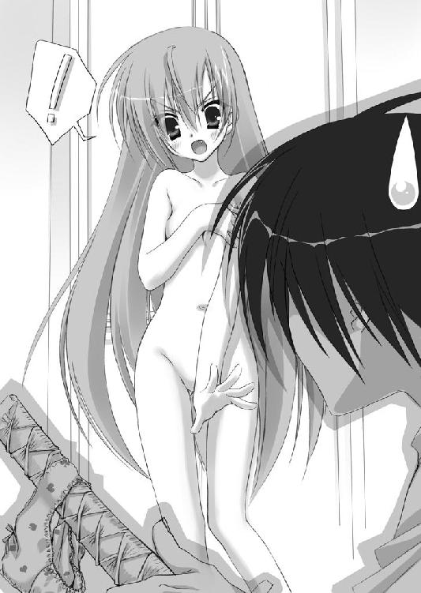
じゅるっ。
眠りは深いタイプなのか、アリアはうっとりした寝言とヨダレを垂らす音まで放ちやがった。ああ、イラつく。ていうかピラミッドって何だピラミッドって。
ここは俺の部屋だ。本来、凶悪な侵略者なんぞに気を遣う必要は全くない。
が、ピンクの薄いキャミソールみたいなパジャマ（ネグリジェっていうのか、あれ）に着替えたアリアは二丁拳銃を携えてベッドルームに入っている。
そんなアリアの後を眠いからといってすぐに追えるわけもなく、こっちはまず向こうが寝付くのを悶々と待つしかなかったのである。
ここは元々４人部屋なので、２段ベッドが２基ある。まあ当然と言うべきかアリアは俺から最も遠い向かいのベッドの上段に陣取ったわけだが、なんか床にブービートラップらしきリード線と対人地雷のようなものが見えるのはきっと幻覚だろう。そう、思おう。
それにしても、本当に迷惑なヤツだ。
勝手に俺の生活に侵入してきて、縄張りまで作って、言うに事欠いて――
――強襲科に戻って、一緒に武偵活動をしろ、だと？
俺は将来、特にやりたいことはない。
何になったっていい。何にもなれなくたっていい。
だが、もう武偵にはなりたくない。
武偵だけは、イヤなんだ。
そう思いながら、俺は......落ち着かない気分で、眠りに、落ちて、いった。
「バカキンジ！ ほら起きる！」
がすっ！
腹にいきなり入れられたハンマーパンチに続いて、
ぐしゃ！
たまらず目を覚ました俺の顔面に、さらに足が飛んできた。
そのままぐりぐりぃーと、アリアは黒いオーバーニーソックスの足で俺の顔を踏みにじってくる。
窓が明るい。もう朝だ。
「はにふんだこの！」
「朝ごはん！ 出しなさいよ！」
「し......る......か！」
俺は顔に押しつけられたアリアのアンヨを両手で押し返す。
「お腹すくじゃない！」
「すかせこのバカ！」
「バカ――ですって!? キンジの分際で！」
分際でってなんだ分際でって。
俺はぶんぶん振り回されるパンチをかわしながら、回転受け身を取ってベッドから降りざまに寝室を出た。
なんで起床するだけでこんな００７みたいなマネをする必要があるんだこの部屋は。
「お腹が減った！ へったへったへったへったへったあああ！」
「そんだけ大声出せりゃ食う必要はねえ！」
ぎゃあぎゃあ言いながら襲いかかるアリアの手足を避け、止め、受け流しながら着替えを済ませ、携帯やら拳銃やらを身につけ、鞄をつかむ。
なんだか強襲科にいた頃の格闘訓練みたいだ。
ぶん！ と繰り出されたハイキックを玄関でしゃがんでかわし、靴を履いて――ハタと俺は立ち止まる。
「アリアっ」
みゃうー！ となおもパンチを繰り出そうとするアリアの、たまご肌のおでこを手で押さえる。
ぐい、と押し返すと、リーチの差のおかげで向こうのパンチはぶんぶんと空を切るばかりだ。
よし。なんかコイツをいなすコツが少しつかめてきた気がするぞ。
などと慣れてる場合じゃないんだが。こんな状況には。
「なによぅ」
手が届かないことで少しおとなしくなったアリアが、むー、と俺を睨み目線で見上げてくる。
「登校時間をずらすぞ。お前、先に出ろ」
「なんで」
「なんでも何も、この部屋から俺とお前が並んで出てってみろ。見つかったら面倒な事になる。ここは一応、男子寮ってことになってんだからな」
「うまいこと言って逃げるつもりね！」
「同じクラスなんだし隣の席だ俺たちは！ 逃げようがないだろ！」
言ってて自分の不幸が悲しくなってきたが、事実なんだからしょうがない。
アリアは、むぅうううう。
「そんな風船みたいにむくれてもダメだ。別々に部屋を出るぞっ」
「やだ！ 逃がすもんか！ キンジはあたしのドレイだ！」
アリアは俺の腕に両手でしがみつき、絶対放さないぞ！ の構えを見せる。
「は......な......せ！ この！」
「がぅ！」
がぶ。
なんとアリアが犬歯を剥き、俺の手を噛んできやがった！
「いっだだだだ！」
お前は仔ライオンか！
アリアの口から手を引っこ抜きつつ腕時計を見れば、７時54分。
いかん。58分のバスに遅れる。
バカやってる場合じゃない。
今日からはあのバスを絶対に逃せないんだ。
なぜなら俺のチャリは粉みじんになっちまったんだからな。
「この......疫病神......め！」
俺は仕方なしに、へばりついたアリアをズルズル引きずりながら部屋を出る。
迷惑なヤツ！ 迷惑なヤツ！ 迷惑なヤツ！ ああ、ちくしょう！ でも甘ずっぱい、いいニオイがしやがる！ なんてぶちぶち考えながら。
マズい。
このままではマズい。
いま俺は、ワケの分からない侵略者・アリアに日常生活をブッ壊されつつある。
今の目標である『平凡な普通人』になるためにも、まずは平穏な日常を取り戻さなければならない。
というわけで俺は５時間目以降の時間を活かして、アリア対策を練ることにした。
武偵高では１時間目から４時間目まで普通の高校と同じように一般科目の授業を行い、５時間目以降、それぞれの専門科目に分かれての実習を行うことになっている。
アリアは、強襲科で戦闘訓練を受けるのだろう。
その隙に俺は、アイツの目の届かないところでじっくりと抵抗運動の準備をするのだ。
そう思って、校外へ自然に出て行くために久々に探偵科で仕事の依頼も受けてきた。
「キーンジ」
探偵科の専門棟を出たところで俺を待ち伏せしていたアリアに、俺は膝から崩れ落ちる。
ガーンだな......出鼻をくじかれた。
「なんで......お前がここにいるんだよ......！」
「あんたがここにいるからよ」
「答えになってないだろ。強襲科の授業、サボってもいいのかよ」
「あたしはもう卒業できるだけの単位を揃えてるもんね」
アッカンベー。
紅い瞳をむいてベロを出したアリアに、気が遠くなる。
女子が、それも美少女が、校舎を出るのを待ってくれていた。これは全国の男子高校生にとって憧れのシチュエーションだろう。しかしその女子が事あるごとに二丁拳銃で脅してくるような凶暴娘の場合は、シチュエーション不成立と言わざるをえない。
「で、あんた普段どんな依頼を受けてるのよ」
「お前には関係ないだろ。Ｅランク武偵にお似合いの、簡単な依頼だよ。帰れっ」
武偵高の生徒は、一定の訓練期間の後、いきなり民間から有償の依頼を受けることができるようになる。街で事件の現場に偶然居合わせたら、それを解決しても良い。
で、それらの実績と各種試験の成績に基づいて、生徒にはＡ～Ｅの『ランク』が付けられる。その上にはさらにＳという特別なランクがあって、入試の時、俺はそのＳに格付けされている。
まあ、あれは......白雪のせいで、ヒステリアモードになっていたおかげなのだが。
「あんた、いまＥランクなの？」
「そうだ。１年３学期の期末試験を受けなかったからな。ていうか、俺にとっちゃランクなんてもうどうでもいいんだよ」
「まあ、ランク付けなんて確かにどうでもいいけど。それより、今日受けた依頼を教えなさいよ」
「お前なんかに教える義務はない」
「風穴あけられたいの？」
イラッとした表情のアリアが拳銃に手をかける。
「今日は......猫探しだ」
「猫探し？」
「青海に迷子の猫を探しに行くんだよ。報酬は１万。０・１単位分の依頼だ」
俺は、探偵科の掲示板に張り出されていた中で一番安くて地味な依頼を選んでいる。
それを正直に伝えれば、アリアも興味を失ってくれるかと思ったが――ダメなようだ。
ふーん、なんて言いながら、逃げるように歩き出した俺の横についてきた。
「ついてくんな」
「いいから、あんたの武偵活動を見せなさい」
「断る。ついてくんな」
「そんなにあたしがキライ？」
「大っキライだ。ついてくんな」
「もっぺん『ついてくんな』って言ったら風穴」
風穴をあけられるのもイヤだったしもう何も言う気力が湧かなくなってしまった俺は、仕方なしにアリアを引き連れたままモノレールで青海まで移動した。
かつて倉庫街だった青海地区は再開発され、今は億ションとハイソなブティックが建ち並ぶオシャレな街になっている。
「で、猫探しっていうけど、あんたどういう推理で探すのよ」
「別に。猫の行きそうなところをしらみつぶしに歩くだけだ。ていうか......お前こそ何か案でも出せ。俺に聞くぐらいなら、何かあるんだろ」
「ないわ。推理はニガテよ。一番の特徴が、遺伝しなかったのよねえ」
つまらなそうに言うアリアは、形のいいおでこの下から俺を上目遣いに見た。
「ていうか、おなかへった」
「さっき昼休みだったろ。メシ食わなかったのかよ」
「食べたけどへったのっ」
燃費の悪いヤツだな。
「なんかおごって」
「いきなり足を引っぱりやがるのかよ......」
そういえば......
今日は適当な依頼を選ぶのに手間取ったせいで、俺も昼を抜いていた。
まあ、ついでだ。また撃たれるのも嫌だし、マックでも買ってくるか。
女王様がご要望なさったギガマックセットを、ドレイの俺が買って戻ってくると......
アリアは、高級ブティックのボンキュッボンなマネキンをぼけーっと見ていた。
マネキンが着ているキラキラしたサニードレスと、自分の体を交互に見ている。
......ぷっ。
あの視線。なるほど。ああいうのに憧れているんだな。
寄りも上がりもしない小学生みたいな体型のくせに。
「おい」
「――あ」
振り返ったアリアは、俺が含み笑いしていたのに気付いたらしい。
ぶわあああ、と赤くなって両手をぶんぶん振った。
「――ち、ちがうの！ あ、あたしはスレンダーなの！ これはスレンダーっていうの！」
「まだ何も言ってないだろ」
そう言い捨てて、俺は道の反対側にあった公園に入っていく。適当なベンチを見つけてマックの紙袋を置くと、アリアは何か言いたげな顔をしてどしんと隣に座ってきた。
ひらり。武偵高の赤いスカートがひらめき、中のホルスターが一瞬見えた。車輌科の武藤がパンチラならぬガンチラと名付けていた現象である。アイツは本当にバカだと思う。
拳銃をスカートの内側に隠し、緊急時にはそれを素早く出さねばならないため、武偵高の女子は概してスカートが短い。アリアのスカートもその例に漏れず、やたら短かった。
だが、これっぽっちも嬉しくないのはコイツのなりが小学生みたいだからだろう。
「はりは。この公園を探す間は、もっと離れて歩いた方がいいぞ」
「はんへよ」
もぐもぐと肉肉しいハンバーガーを頬張りながら会話する。
「辺りを見りゃ分かるだろ」
俺は飲みさしのギガコーラをベンチに置き、視線で周囲を示す。
この公園では――いつも、あちこちに若いカップルがたむろしている。
海も近いし、新しくてキレイだし、いわゆるデートスポットとして有名な場所なのだ。
最初の調査場所にここを選んだのは、もちろん青海で唯一の公園ということで猫がいそうだったこともあるが、この状況を見たアリアが俺から離れて歩いてくれるだろうという計算もあった。
それはある程度正解だったらしく、アリアは......
「あ......」
向かいのベンチに座っている大学生らしきカップルが寄せ木細工みたいにひっついているのを見て、ポテトをタバコっぽくくわえたまま一瞬硬直した。
そして俺の方を見て、もっぺん向こうのカップルを見て、また俺を見て、ぶわあああ。真っ赤になった。コイツ、赤面癖があるんだな。
「......う。う！」
ベンチの前を腕を組みながら歩いていったカップルを見たアリアは、慌てて１人で腕を組んだ。間違っても俺と腕を組みたくないらしい。
「ほらな。もう帰った方がいいぞアリア。こんな所を２人で歩いてたら、またキンジとアリアはつきあってるとか言われちまうだろ。俺はとにかく目立ちたくないんだ。お前だって、好きな男とかいたら誤解されちまうぞ」
「す、好きな男なんて！」
アリアはルビーみたいな紅い瞳をまんまるに見開いて、アニメ声を裏返らせた。
「い、い、いないっ！ あたしは、れ、恋愛なんて――そんな時間のムダ、どうでもいい！ ホントに、ホンっトに、どうでもいい！」
......過剰反応するなよ。ガキじゃないんだから。
どうやら恋愛がらみの話題には相当弱いタイプらしいな。
弱点を一つ発見だ。
「でも、友達とかにヘンな誤解されたくないだろ」
「友達なんて......いないし、いらないっ。言いたいヤツには言わせればいいのよ。他人の言うことなんてどうでもいい」
じゅるううううー。
アリアは照れ隠しのためか、ギガコーラのストローをくわえて思いっきり飲んだ。
「他人なんてどうでもいい、ってのにはまあ賛成だがな。一言、言いたいことがある」
「なによ。けぷ」
「それは俺のコーラだ」
ぶぼあ！
アリアはいま食道を通過しようとしていたコーラを噴き出した。
きたねーな。花も恥じらう女子高生とは思えん。
じと、と見ていた俺を、アリアは真っ赤になって――
「このヘンタイ！」
いきなりぶん殴ってベンチから吹っ飛ばしやがった。
おい。どう考えても理不尽だろこの流れは。
夕方。ようやく迷子の猫を見つけた。
公園の端、ドブというか運河というかの水辺にいたのだ。
にぃ、にぃ、と弱々しく鳴いていた子猫は依頼の資料にあった通りの特徴をしていて、写真にあったちっちゃな鈴もつけていた。あの猫で間違いないだろう。
「よーし。おとなしくしてろよー......」
運河に落ちたゴミ箱に入り込んでいた猫は、俺が近づくと最後の力を振り絞ってフーと威嚇するような声を上げてきた。こらこら。俺は敵じゃない。お前を助けに来たんだよ。
ガサガサと紙くずや空き缶の中に手を突っ込んで、毛を逆立てた子猫を取り出す。
「よしよし。良かったな。これで一安心だぞ」
......久々に作った笑顔が、そんなにぎこちなかったんだろうか。
俺と目が合った子猫は、にぃー！ と鳴くと、逃げようと藻掻いた。
「お、おい......おっ、うぉっ！」
じゃぶ！
俺は猫を抱っこしたまま、運河の浅瀬に派手にひっくり返ってしまう。
念のため携帯や拳銃を岸に置いておいたのは、不幸中の幸いだったな。
「......ヘンねぇ？」
テトラポッドに腰掛けて俺を見下ろしていたアリアが、ため息をつくのが見えた。
迷子の猫探しで０・１単位をもらった――その翌日。
「理子」
メールで呼び出しておいた通り、理子は女子寮の前の温室にいた。温室とはつまりでかいビニールハウスで、いつも人けがなく、秘密の打ち合わせには便利な場所なのだ。
「キーくぅーん！」
バラ園の奥で、理子がくるっと振り返る。
コイツはアリアと同じくらいチビだがいわゆる美少女の部類に入る。ふたえの目はキラキラと大きく、緩いウェーブのかかった髪はツーサイドアップ。ふんわり背中に垂らした長い髪に加えて、ツインテールを増設した欲張りな髪型だ。
「相変わらずの改造制服だな。なんだその白いフワフワは」
「これは武偵高の女子制服・白ロリ風アレンジだよ！ キーくん、いいかげんロリータの種類ぐらい覚えようよぉ」
「キッパリと断る。ったく、お前はいったい何着制服を持ってるんだ」
そう言われて指を折り折り改造制服の種類を数え始めた理子を見下ろしつつ、俺は鞄から紙袋で厳重に隠したゲームの箱を取り出した。
「理子こっち向け。いいか。ここでの事はアリアには秘密だぞ」
「うー！ らじゃー！」
びしっ。
理子はキヲツケの姿勢になり、両手でびびしっと敬礼（？）ポーズを取る。
苦い顔で俺が紙袋を差し出すと、理子は袋をびりびり破いていった。ふんふんふん。荒い鼻息。まるでケモノだな。
「うっっっわぁ―――！ 『しろくろっ！』と『白詰草物語』と『妹ゴス』だよぉー！」
ぴょんぴょん跳びはねながら理子が両手でぶんぶん振り回しているのは、Ｒ｜15指定、つまり15歳以上でないと購入できないいわゆるギャルゲーである。
――服装から分かる通り、理子はオタクだ。
しかし世間一般のオタク女子と違うことには、こいつは女のくせにギャルゲーのマニアという奇特な趣味の持ち主なのだ。中でも特に自分と同じようなヒラヒラでフワフワの服を着たヒロインが出てくる物に強い関心を示す。
もちろん理子も15歳以上なのでこれらのゲームを買うことはできる。しかし先日、理子はゲームショップも兼ねている学園島のビデオ屋でＲ｜15のゲームを売ってもらえなかったとぶちぶち言っていた。バイトのお姉さんが理子の身長を見て中学生と判断したらしい。そこで代わりに俺が買ってきてやったというわけだ。
こんなものを買うのは死ぬほど恥ずかしかったし店員のお姉さんにはあらぬ誤解を受けてしまったに違いないが、これもアリア対策のためだ。
――アリアはなぜ、俺をドレイにしたがるのか？
アイツを追い払うために最初に解き明かすべきは、その謎なのだ。
何か明確な理由があるのなら、それを一刻も早く取り除かねばならない。
で、その理由をアイツが教えてくれない以上、こっちでアイツのことを多角的に調べ、推測して対処するしかない。武偵同士の戦いは、まず情報戦と相場が決まってるからな。
「あ......これと、これはいらない。理子はこういうの、キライなの」
あれ。全て理子好みのパッケージだったハズなんだが。
ぶっすぅー、と、膨れっ面で理子が突っ返してきたのは『妹ゴス』の２と３、続編だ。
「なんでだよ。これ、他と同じようなヤツだろ」
「ちがう。『２』とか『３』なんて、蔑称。個々の作品に対する侮辱。イヤな呼び方」
......ワケの分からないヘソの曲げ方をしやがるな。
「まぁ......とにかく、じゃあ続編以外のそのゲームをくれてやる。そのかわり、こないだ依頼した通り、アリアについて調査したことをきっちり話せよ？」
「――あい！」
理子はバカだ。まごうことなきバカだ。しかし探偵科で知ったのだが、このバカ、バカなりに１つだけ長所を持っている。ネット中毒患者な上にノゾキ・盗聴盗撮・ハッキング等々といったまことに武偵向きの趣味を持った理子は、情報収集が並外れてうまいのだ。言うなれば現代の情報怪盗である。おかげで武偵ランクはＡだとか。
「よし、それじゃあとっととしろ。俺はトイレに行くフリをして小窓からベルトのワイヤーを使って脱出してきたんだ。アリアにバレて捕捉されるのは時間の問題なんだからな」
俺は周囲を見回してから、ちょうど足のつく高さにあった柵に腰を下ろす。
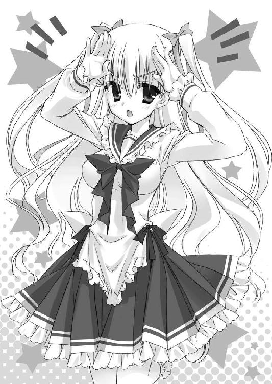
理子はゲームをなんでか服の中にしまいつつ、ちょっとジャンプしながら俺の隣に座ってきた。向こうは足が地面につかないらしく膝下がぷらぷらしてる。
「ねーねー、キーくんはアリアのお尻に敷かれてるの？ カノジョなんだからプロフィールぐらい自分で直接聞けばいいのに」
「カノジョじゃねえよ」
「えー？ ２人は完全にデキてるって噂だよ？ 朝、キンジがアリアと腕を組んで寮から出てきたっていうんで、アリアファンクラブの男子が『キンジ殺す！』って大騒ぎになってるんだもん。がおー」
「指でツノを作らんでいい」
腕を組んで......って。あの朝のことか。
あれはしがみついて離れないアリアを引きずってただけなのに。
「ねえねえ、どこまでしたの!?」
「どこまでって」
「えっちいこと」
「バカ！ するか！」
「嘘つけぇー！ 健全な若い男女のくせにぃー！」
理子は満面の笑みで、俺の脇腹を肘で突いてきた。
「......お前はいつも話をそっち方向に飛躍させる。悪いクセだぞ」
「ちぇー」
「それより本題だ。アリアの情報......そうだな、まずは強襲科での評価を教えろ」
「はーい。んと......まずランクだけど、Ｓだったね。２年でＳって、片手で数えられるぐらいしかいないんだよ」
理子の話に、俺は別段驚きはしなかった。
アリアの、チャリジャックの時の身のこなし。
あれはどう考えても常人のレベルじゃなかったからな。
「理子よりちびっこなのに、徒手格闘もうまくてね。流派は、ボクシングから関節技まで何でもありの......えっと、バーリ、バーリ......バリツゥ......」
「バーリ・トゥードか」
「そうそうそれ。それを使えるの。イギリスでは縮めてバリツって呼ぶんだって」
俺は体育倉庫でアリアにぶん投げられた時のことを思い出す。
確かにあれは凄かった。ヒステリアモードだったのに、受け身を取るのが精一杯だった。
「拳銃とナイフは、もう天才の領域。どっちも二刀流なの。両利きなんだよあの子」
「それは知ってる」
「じゃあ、２つ名も知ってる？」
２つ名――豊富な実績を誇る有能な武偵には、自然と２つ名がつく。
アリアは弱冠16歳にして、すでに２つ名を持っているのか。
知らない、という顔をこっちがすると、理子はニヤリと笑う。
「双剣双銃のアリア」
――双剣双銃。
武偵用語では、二丁拳銃ないし二刀流のことは、ダブラと呼ぶ。
これは英語のダブルから来ているのだが、そこから類推するに４つの武器を持つという意味の２つ名なのだろう。
「笑っちゃうよね。双剣双銃だってさ」
「笑いどころがよく分からないんだが......まあいい。他には......そうだな、アリアの武偵としての活動について知りたい。アイツにはどんな実績がある？」
「あ、そこはスゴイ情報があるよ。今は休職してるみたいなんだけど、アリアは14歳からロンドンの武偵局武偵としてヨーロッパ各地で活動しててね......」
少し声をシリアスにさせながら、理子はその大きな眼で俺を見上げてきた。
「......その間、一度も犯罪者を逃がしたことがないんだって」
「逃がしたことが――ない？」
「狙った相手を全員捕まえてるんだよ。99回連続、それも全部たった１度の強襲でね」
「なんだ......それ......」
信じられない。
犯罪者の逮捕などという仕事が武偵に降りてくる際は、たいてい警察の手には負えないようなヤツを押しつけられるのが常だ。武偵はそれをしつこく何度も追って（これを武偵用語で強襲という）、やっと逮捕するものなのだが。99回も連続で、一発逮捕とは......
......そんなバケモノみたいなヤツに追われてるのか、俺は。
そう思うと気が滅入ってきそうだったので、俺は話題を変えることにした。
「あー......他には。そうだな、体質とか」
「うーんとね。アリアって、お父さんがイギリス人とのハーフなんだよ」
「てことはクォーターか」
どうりで髪も眼も赤いし、日本人離れしてぱっちりした二重まぶたなわけだ。
そもそも名前も、『神崎・Ｈ・アリア』だしな。
「そう。で、イギリスの方の家がミドルネームの『Ｈ』家なんだよね。すっごく高名な一族らしいよ。おばあちゃんはＤａｍｅの称号を持ってるんだって」
「デイム？」
「イギリスの王家が授与する称号だよ。叙勲された男性はＳｉｒ、女性はＤａｍｅなの」
「おいおい。ってことはあいつ貴族じゃねーか」
「そうだよ。リアル貴族。でも、アリアは『Ｈ』家の人たちとはうまくいってないらしいんだよね。だから家の名前を言いたがらないんだよ。理子は知っちゃってるけどー。あの一族は、ちょっとねぇー」
「教えろ。ゲームやっただろ」
「理子は親の七光りとかそういうの大っキライなんだよぉ。まぁ、イギリスのサイトでもググればアタリぐらいはつくんじゃない？」
「俺、英語ダメなんだよ」
「がんばれやー！」
と、俺の背中を叩こうとしたらしい理子のちっこい手が――
ぶんっ。
思いっきり空振った。
そして、ばし、と俺の手首をブッ叩く。
「うぉっ？」
がちゃ。
その勢いで、俺の腕時計が外れて足元に落ちた。
......拾い上げると、金属バンドの三つ折れ部分が外れてしまっている。
「うぁー！ ごっ、ごめぇーん！」
「別に安物だからいいよ。台場で１９８０円で買ったヤツだ」
「だめ！ 修理させて！ 理子にいっぱい修理させて！ 依頼人の持ち物を壊したなんていったら、理子の信頼に関わっちゃうから！」
俺から腕時計をむしり取ると、理子はセーラー服の襟首をぐいーっと引っぱって開け、すぽっと胸の間にそれを入れてしまった。
お、おいおい......と、俺は目を逸らす。
い、今。でかかったな。
「キンジ？ 他には？」
「......あ、いや、もうそのぐらいでいい」
女の前でヒステリアモードにはなりたくなかったし、胸元を見てしまったのを勘付かれたら面倒そうだ。俺は慌ててそう言うと、そそくさと温室を後にした。
金色か。世の中にはいろんな色の下着があるんだな。
マンションに戻ると、窓から見渡す『学園島』を夕陽が金色に染めていた。
武偵高とその寮、生徒向けの商店だけが乗っているこの人工浮島、元々は東京湾岸の再開発に失敗して叩き売りされていた土地らしい。
その証拠に、レインボーブリッジを挟んですぐ北にある同じ形の人工浮島は未だに空き地で、見たまんま『空き地島』とあだ名されている。
そのがらんとした人工浮島の南端には仕方なしに立てられた風力発電機がノンキに回ってたりして――うん。のどかだ。キライじゃないぞ。この光景。
『太平洋上で発生した台風１号は、強い勢力を保ったまま沖縄上空を北上しています』
ニュースを垂れ流す液晶テレビが、却ってこの部屋の心地よい静けさを際立たせる。
ああ、いい部屋だよ。ここは。
今、ここに女子がいることを除いてはな。
「遅い」
ぎろ、とソファーから頭を傾けてこっちを見てきたアリアは、鏡を持っていた。
ヒマつぶしに枝毛でも探していたらしい。
アリアは仕上げにか前髪を上げてパッチンと銀色の髪留めでまとめ、おでこを出した。
なんかガキっぽい髪留めだが、チビかわいい見た目にはよく似合っている。
たまご肌のおでこはチャームポイントだと、自分でも分かってるんだろうな。
「どうやって入ったんだ」
愚問のような気もしたが、俺は抗議の意思表示として一応聞いておく。
「あたしは武偵よ」
ほら愚問だった。
ここのカードキーを偽造したのだろう。鍵開けは武偵技術の基礎中の基礎だからな。
「それともあんたはレディーを玄関先で待ちぼうけさせる気だったの？ 許せないわ」
「逆ギレするようなヤツはレディーとは呼ばないぞ、でぼちん」
「でぼちん？」
「額のでかい女のことだ」
「――あたしのおでこの魅力が分かんないなんて！ あんたいよいよ本格的に人類失格ね」
アリアは大げさに言うと、べー、とベロを出した。
ああ。分かってる。分かってるんだよ、本当は。お前は可愛い。
見 た 目 だ け は な 。
「この額はあたしのチャームポイントなのよ。イタリアでは女の子向けのヘアカタログ誌に載ったことだってあるんだから」
アリアは俺に背を向けると、楽しそうにまた鏡をのぞきこんで自分のおでこを見た。
ふんふん♪
鼻歌まで始める。
俺は不機嫌さのアピールとして、鞄をアリアの隣に放り投げてやった。だがアリアも慣れたもので、へーぜんと自分の額をご満悦で眺め続けている。
「さすが貴族様。身だしなみにもお気を遣われていらっしゃるわけだ」
俺は洗面所に入って、ちょっとイヤミな口調で背中越しに言ってやった。
するとアリアは、
「......あたしのことを調べたわね？」
と、なんでか嬉しそうにやってくる。
「ああ。本当に、今まで１人も犯罪者を逃がしたことがないんだってな」
「へえ、そんなことも調べたんだ。武偵らしくなってきたじゃない。でも――」
そこまで言うとアリアは壁に背中をつけ、ぷらん、と片脚でちょっと蹴るような仕草を見せた。
「――こないだ、１人逃がしたわ。生まれて初めてね」
「へえ。凄いヤツもいたもんだな。誰を取り逃がした？」
おっと。理子の情報にもマチガイがあったか。
俺はコップに水をくみ、うがいを始める。
「あんたよ」
ぶっ！
俺は水を盛大に噴きだしてしまった。
俺、って、ああ、あのチャリジャックの後でのことか！
「お、俺は犯罪者じゃないぞ！ なんでカウントされてんだよっ！」
「強猥したじゃないあたしに！ あんなケダモノみたいなマネしといて、しらばっくれるつもり!? このウジ虫！」
ドレイからケダモノ、さらにウジ虫か。留まるところを知らないな俺の評価下落は。
「だからあれは不可抗力だっつってんだろ！ それにそこまでのことはしてねえ！」
「うるさいうるさい！ ――とにかく！」
びしっ！ とアリアは真っ赤になりながら俺を指さした。
「あんたなら、あたしのドレイにできるかもしれないの！ 強襲科に戻って、あたしから逃げたあの実力をもう一度見せてみなさいっ！」
「あれは......あの時は......偶然、うまく逃げられただけだ。俺はＥランクの、大したことない男なんだよ。はい残念でした。出ていってくれ」
「ウソよ！ あんたの入学試験の成績、Ｓランクだった！」
――ぐ。
そうきたか。
やはり武偵は情報戦。そこを握られてしまうと、やりにくくなりそうだ。
「つまりあれは偶然じゃなかったってことよ！ あたしの直感に狂いは無いわ！」
「と、とにかく......今はムリだ！ 出てけ！」
「今は？ ってことは何か条件でもあるの？ 言ってみなさいよ。協力してあげるから」
言われて――かあああっ、と。
俺は、赤くなってしまう。
協力してあげる、って。
もちろんアリアは俺のヒステリアモードのトリガーを知らないから気軽に言ったんだろうが――こっちにしてみれば爆弾発言なんだぞ、それ。
要するに俺を、『性的に興奮させる』って意味なんだからな！
「教えなさい！ その方法！ ドレイにあげる賄い代わりに、手伝ってあげるわ！」
「......！」
――つい。
俺の脳裏を、アリアに『手伝わせてる』いろんな光景がよぎってしまう。
今さらながらに考えてみれば、俺とアリアはこの部屋に２人っきりで――
いつの間にか日はとっぷりと暮れ、電気をつけてなかったから室内は薄暗く。
なんだ。やめろ。それ以上考えるなキンジ。
「なんでもしてあげるから！ 教えて......教えなさいよ、キンジ......！」
ずずいっ！ と俺に詰め寄ってきたアリアから、ふわ。
また、クチナシのような女の子らしい香りが俺の鼻腔をくすぐってきて。
俺は――
「うっ......」
マズイことになってきた。
余計なことを考えたせいか、ヒステリアモードに、なりかけてきた。
目力、というのだろうか。
アリアのつぶらな赤紫色の瞳は、それはそれはキレイで、愛らしくて――
俺はまたあの感覚......体の芯に、熱く、どうしようもない血がたぎっていくような感覚に襲われる。
――イヤだ。
なりたくない。
あんなモードになんか......俺は、なりたくないんだよ！
「――！」
ドン！
と、俺は無意識にアリアを押しのけていた。
アリアは、きゃっ、とアニメ声で短い悲鳴を上げ、ソファーに尻餅をつく。
ひらり。盛大に舞い上がった短いスカートからは、すんでの所で目を逸らした。
事ここに至って、俺はやむなく......
アリアに、白旗を揚げることにした。
「......１回だけだぞ」
「１回だけ？」
だが、無条件降伏じゃない。
条件付き降伏だ。
「戻ってやるよ――強襲科に。ただし、組んでやるのは１回だけだ。戻ってから最初に起きた事件を、１件だけ、お前と一緒に解決してやる。それが条件だ」
「......」
「だから転科じゃない。自由履修として、強襲科の授業を取る。それでもいいだろ」
スカートを直したアリアの方に向き直ると......アリアは形のいいおでこをこっちに向けて、何か考えていた。
武偵高では、自分が在籍していない専門科目の授業も自発的に受けることができる。
これは自由履修と呼ばれ単位には反映されないのだが、多様な技術が求められる『武偵』という仕事に就くため、生徒たちは割と流動的にいろんな科の授業を受けているのだ。
優秀な武偵のアリアは、自分のドレイ......手駒を、欲しがっている。猛烈に。
そしてヒステリアモードの俺に出会い、取り逃がしたことで、目を付けたのだ。
『こいつなら、自分の有能なドレイとして使えるかもしれない』と。
そこまでは仕方ない。トランプでいえば、もう、アリアに取られてしまったカードみたいなもんだ。
だが、まだこっちにも伏せているカードがある。
ヒステリアモード、だ。
その詳しいことがバレる前に、俺は、通常モードの平凡な俺をアリアに見せつけてやればいい。
そうすれば、アリアは大したことのない俺に失望して、離れていってくれるだろう。
「......いいわ。じゃあ、この部屋から出てってあげる」
俺の譲歩案に、やっと――疫病神が、出ていく宣言をしてくれた。
「あたしにも時間がないし。その１件で、あんたの実力を見極めることにする」
「......どんな小さな事件でも、１件だぞ」
「ＯＫよ。そのかわりどんな大きな事件でも１件よ」
「分かった」
「ただし、手抜きしたりしたら風穴あけるわよ」
「ああ。約束する。全力でやってやるよ」
通常モードの俺の全力で、な。
３弾 強襲科
戻ってきてしまった。
強襲科――通称、『明日無き学科』に。
この学科の卒業時生存率は、97・１％。
つまり１００人に３人弱は、生きてこの学科を卒業できない。任務の遂行中、もしくは訓練中に死亡しているのだ。本当に。
それが強襲科であり、武偵という仕事の暗部でもある。
発砲や剣戟の音が響く専用施設の中で、だが今日の俺は――とりあえず装備品の確認と自由履修の申請など、訓練以外のことで時間をほとんど使い切ってしまっていた。
事件を１件解決するまでのこととはいえ、拳銃の練習ぐらいはしておきたかったところなのだが......そうもいかなかった。というのも、いつもパーティーを組んで行動する強襲科では、生徒たちが自然と人なつっこくなるもので......
「おーうキンジぃ！ お前は絶対帰ってくると信じてたぞ！ さあここで１秒でも早く死んでくれ！」
「まだ死んでなかったか夏海。お前こそ俺よりコンマ１秒でも早く死ね」
「キンジぃー！ やっと死にに帰ってきたか！ お前みたいなマヌケはすぐ死ねるぞ！ 武偵ってのはマヌケから死んでくもんなんだからな」
「じゃあなんでお前が生き残ってるんだよ三上」
郷に入りては郷に従え。
死ね死ね言うのがここの挨拶なのだが、俺が帰ってきたことを喜んで死ね死ね言う１人１人に死ね死ね返していたら、それだけでかなり時間を食ってしまったのだ。
火薬臭い奴らをなんとかいなして強襲科を出ると――
夕焼けの中、門のところに背中をついて俺を待っていたチビっこがいた。
言うまでもない。アリアである。
アリアは俺の姿を認めると、とてて、と小走りにやってきた。
そして、不機嫌に歩き始めた俺の横を、一緒に歩き始める。
「......あんた、人気者なんだね。ちょっとビックリしたよ」
「こんな奴らに好かれたくない」
本音である。
「あんたって人付き合い悪いし、ちょっとネクラ？ って感じもするんだけどさ。ここのみんなは、あんたには......なんていうのかな、一目置いてる感じがするんだよね」
......それはきっと、入試の時のことを覚えられているからだろう。
ヒステリアモードの、俺のことを。
俺たち強襲科の志願者たちに科された試験は......14階建ての廃屋に散らばり、武装の上で自分以外の受験生を捕縛し合うという実戦形式のものだった。
そして俺は自分以外の受験生を全員すぐに倒し、或いは罠にかけて縛り上げた――抜き打ちでマンションに潜んでいた、教官５人も。
......ちくしょう。
思い出したくないことを思い出しちまった。
俺がさらに不機嫌になったのを察したのか、アリアは俺の横を歩きながらちょっと視線を地面に落とした。
「あのさキンジ」
「なんだよ」
「ありがとね」
「何を今さら」
小声ながらも心底嬉しそうなアリアに、俺は苛立った声を返す。
そりゃ、お前は嬉しいだろうさ。
文字通り、自分のために戦う『ドレイ』を手にいれたんだからな。
「勘違いするなよ。俺は『仕方なく』強襲科に戻ってきただけだ。事件を１件解決したらすぐ探偵科に戻る」
「分かってるよ。でもさ」
「なんだ」
「強襲科の中を歩いてるキンジ、みんなに囲まれててカッコよかったよ」
「......」
なんでそういう事を言う。
本人にそういうつもりは無いのだろうが、女子に――それも、見かけだけはとにかく可愛い女子にそんなことを言われると、こっちは言葉に詰まる。
「あたしになんか、強襲科では誰も近寄ってこないからさ。実力差がありすぎて、誰も、合わせられないのよ......まあ、あたしは『アリア』だからそれでもいいんだけど」
「『アリア』？」
普段とは違うイントネーションで自分の名前を呼んだアリアに、俺は首を傾げる。
「『アリア』って、オペラの『独唱曲』って意味でもあるんだよ。１人で歌うパートなの。１人ぼっち――あたしはどこの武偵高でもそう。ロンドンでも、ローマでもそうだった」
「で、ここで俺をドレイにして『デュエット』にでもなるつもりか？」
アリアの方を見ずにそう言うと、アリアはクスクスと笑った。
横目で見れば、本当におかしそうに笑っている。
「あんたも面白いこと言えるんじゃない」
「面白くないだろ」
「面白いよ？」
「お前のツボは分からん」
「やっぱりキンジ、強襲科に戻ったとたんにちょっと活き活きし出した。昨日までのあんたは、なんか自分にウソついてるみたいで、どっか苦しそうだった。今の方が魅力的よ」
「そんなこと......ないっ」
アリアはまた恥ずかしいことを言う。
俺はアリアの話を聞きたくなかった。
何か、本当のことを言われてるような気がして――
「俺はゲーセンに寄っていく。お前は１人で帰れ。ていうかそもそも今日から女子寮だろ。一緒に帰る意味がない」
「バス停までは一緒ですよーだ」
アリアはべーとベロを出して笑う。
相変わらず憎まれ口を叩いてはいるが、俺を強襲科に連れ戻したことが本当に嬉しいらしい。表情で分かる。分かりやすいヤツだ。探偵科には向いてないな。
「ねえ、『げーせん』って何？」
「ゲームセンターの略だ。そんなことも知らないのか」
「帰国子女なんだからしょうがないじゃない。んー。じゃああたしも行く。今日は特別に一緒に遊んであげるわ。ご褒美よ」
「いらねえよ。そんなのご褒美じゃなくて罰ゲームだろ」
俺は少し早足に歩いて、アリアを引き離しにかかった。てくてくてく。
するとアリアはニヤーと笑って、同じ速度で歩いて真横についてくる。てくてくてく。
腹が立ったので、俺はさらに大股になって加速する。ざっざっざっ。
アリアもスカートをひらめかせてついてくる。ざっざっざざざっ。
「ついてくんな！ 今、お前の顔なんか見たくもない！」
「あたしもあんたのバカ面なんか見たくない！」
「じゃあなおさらついてくんな！」
「やだ！」
だっだっだっだだだだだだだ......
結局俺たちは真横に並びながら走ってゲーセンに着いてしまった。
なんだコイツ。異様に足が速い。
「はぁ。はぁ。はぁ。何これ？」
ツインテールがくっつくぐらい俺の真っ隣に立ちながら、アリアが聞いてきた。
その紅い瞳で、店先のクレーンゲームを見つめている。
「はぁ......はぁ。ああ、これはＵＦＯキャッチャーだろ」
「ＵＦＯキャッチ？ なんかコドモっぽい名前。ま、どうせあんたが行くような店のゲームなんだから、下らないに決まってるけど」
アリアはバカにするような表情でクレーンゲームの中をのぞき込んだ。
ガラスケースの中には、ライオンだかヒョウだか分からない動物の小さなヌイグルミがうじゃうじゃ入っている。
「............ぁー......！」
べた。
と、アリアはガラスケースにへばりついた。
背の低さとヌイグルミという背景が相まって、まるで本物の小学生みたいだ。
こんな姿でゲーセンにいたら、警察に補導されてしまうんじゃなかろうか。
「どうした。そんなに珍しいか」
「......」
「どうしたんだよ」
「............」
「腹でも減ったのか」
「..................かわいー......」
なんだ。
呟かれたアリアらしからぬセリフに、俺はちょっと脱力する。
まあ確かにケースの中のヌイグルミはカワイイが......鬼神の強さを誇る見敵必殺の武偵『双剣双銃のアリア』様のセリフじゃないだろう、それは。
おいキャラが違ってるぞ、とツッコもうと思って横からのぞき込むと、口を逆三角形にしてヨダレを垂らしかけている。いかんだろこれは。公開していい顔じゃないぞ。
「やってみるか」
「やり方がわかんない」
「幼稚園児でもできるぞこんなの」
「すぐにできる？」
「できる。じゃあやり方教えてやろうか？」
俺が言うと、アリアはこっちに向き直ってこくこくこくこくと首を縦にふった。
なんだこのアリアは。調子が狂う。
説明するほどのルールでも無かったが、縦ボタンと横ボタンを順番に押せと教えてやると、アリアはトランプ柄のがま口を出して１００円玉を取り出した。
そして筐体の前で姿勢を正し、狙撃の授業でもやってるかのような真剣さでクレーンを操作し始める。
うぃーん......
ぽと。
だが、狙いが悪い。ライオンだかヒョウだかはアリアのクレーンで前足をちょっと上げただけで、持ち上がりすらしない。
「い......今のは練習っ。おかげでやり方が理解できたわ」
「そりゃ１回やればバカでも分かるだろうな」
「もっぺんやる」
アリアはがま口からもう１００円取り出すと、ばし！ ばし！ とボタンを押した。
だが、ぽと。
ヌイグルミは今度はオシリとシッポを少し上げただけだ。こいつヘタだな。
「ちなみに５００円入れると６回できる」
「うるさい！ 次こそ取れる！ コツが分かった！」
分かってないヤツのセリフだぞ、それ。
ぽと。
案の定、またクレーンはヌイグルミを掠めただけだ。
「ぎー！」
「壊れるなアリアっ」
「今度こそ分かった！ 本気！」
ちゃりん。ぽと。ちゃりん。ぽと。
両替機で１０００円札を崩してきて、ちゃりんぽとちゃりんぽと。
「今度こそ本気の本気！ 本気本気本気ほ―――ん―――きぃ―――！」
ダメだコイツ。早くなんとかしないと。
見た目通りの小学生みたいなヤツだ。
ギャンブルとかにハマったら身を持ち崩すタイプだな。
「どけ」
アリアが３０００円ぐらい浪費した辺りで、俺はもう見ちゃいられなくなって仕方なしにサイフを取り出した。
プライドの高い貴族様は涙目になってボタンから手を放さなかったが、押しのける。
どれどれ。
ふむ。
この、落とす穴に近いヤツが狙い目だな。
俺は一見取りにくそうな深い所にある謎のネコ科動物に狙いを定めた。ケースの中のヌイグルミはどれも同じなので、どれを取っても文句は言われないだろう。
ぎゅ。
クレーンは見事、一頭の胴をがっしりつかむことに成功する。
「っ......！」
ごくり。アリアがノドを鳴らすのが聞こえた。
「お？」
見れば、ヌイグルミのシッポにはそのさらに下にいたもう１頭のタグがからまっている。
ぬぬぬぬ......
クレーンに持ち上げられた１匹のシッポにぶらさがって、もう１匹。
「キンジ見て！ ２匹釣れてる！」
言われんでも見えてる。
てか、釣れてるって。
「キンジ、放したらタダじゃおかないわよ！」
「もう俺にどうこうできねーよ」
「あ......あ、入る、入る、行け！」
アリアほどじゃないが、俺もちょっとこれにはドキドキする。
１匹は確実だが、もう１匹は......どうだ？
どうだ......どうだ？
クレーンが......
開く......！
ぽと。
っぽと。
１匹目が穴に落ち、そのシッポに引っ張られるようにして、もう１匹も穴に落ちた。
「やった！」
「っしゃ！」
これはけっこう嬉しくて。
無意識に――
本当に無意識に。
ぱちぃ♪
俺とアリアは満面の笑みで、ハイタッチなんかしてしまっていた。
「「あ」」
目と目を、見開き合う。
そして、お互い慌てて「「フンッ」」とそっぽを向き合った。
クソっ。
自分に腹が立つ。
なんでこんなヤツと息が合っちまったんだ？
アリアは――
「ま、まあバカキンジにしては上出来ね！」
取り出し口に飛び込みかねない勢いで両手を突っ込むと、中からヌイグルミを２匹鷲づかみにして取り出してきた。
ちょっと見せてもらうと、タグには『レオポン』と書いてある。なんだそりゃ。
「かぁーわぁーいぃー！」
ぎゅうううう。
アリアはレオポンを思いっきり握りしめ、抱きしめている。レオポン、破裂しそうだ。
......その姿が、あまりにも『普通』の女の子だったので......
俺はちょっと、なんというか、不思議な心地がした。
アリアは、本当は、もしかしたら、ひょっとすると――
普通の子なんじゃないだろうか。
それこそ、さっきアリアが俺に言ったセリフの逆で......
アリアの方こそ、普段から自分にウソをついてムリをしてるんじゃないだろうか。
何かが、本当の彼女を歪めて変えてしまっているんじゃないだろうか。
「キンジ」
ふと見ると......アリアは２匹のうちの１匹を、俺にぐいっと差し出してきていた。
「１匹あげる。あんたの手柄だからご褒美よ」
ツリ目気味の目をニッコリ細めたアリアに、俺はちょっと驚く。
コイツ、こんな表情もできるのか。
チクショウ。
カワイイ。
「お、おう」
俺はレオポンを１匹受け取ってしまいながら、やっとそれが携帯のストラップになっていることに気づいた。
そういえば俺は携帯にストラップを付けたことがなかったな。
付けてみるか。
俺は携帯を取り出して、ストラップのヒモを携帯の穴にねじこむ。
それを見たアリアは、パールピンクの携帯を取り出して自分ももそもそと見よう見まねでレオポンを付け始めた。たまたま、コイツもストラップが無かったらしい。
レオポンの尻から出ているヒモは中途半端に太く、なかなか携帯の穴に入らない。
ていうかなんでこんな所にヒモを付けたんだヌイグルミの設計者は。
「先につけた方が勝ちよ、キンジ」
「なんだそりゃ。ガキかお前」
「やったわ、入りそう」
「こっちも......入るぞ、お前なんかに負けねー」
そういえば、女子から物をもらったのなんて初めてのような気がするな。
白雪が何かにつけ大小の贈り物をくれていた気もするが、あれは幼なじみだからノーカンだろう。
俺たちはその場で、うんうんうなりながらレオポンくっつけ合戦を繰り広げるのだった。
我ながらスケール小さいな。
居候がいなくなって――俺の部屋に、平穏が戻った。
１人ぼっちの平和な寝室で、朝、携帯のアラームに目を覚ます。
ぎゅ、と携帯をつかもうとしたらレオポンをつかんでいた。
「......」
レオポンをちょっと眺めてから、俺は、だらだら......と登校の準備をする。
コンビニ弁当の残りを食べ、昨日理子から返してもらった腕時計を見ると、
「？」
まだ少し時間がある。
けっこうだらだらしていたと思ったんだが。
じゃあお茶でも飲むか。
おかしい。
俺はちゃんと、ちょっと早めに家を出たのに。
生暖かい大粒の雨が降り始めたバス停には既に７時58分のバスが来ていて、生徒たちが押し合いへしあいして乗り込んでいるところだった。
１時間目の始まる直前に一般校区に着くとあって、いつもこのバスは混む。
ヘタすると、満員で乗れないこともあるのだ。
「やった！ 乗れた！ やったやった！ おうキンジおはようー！」
バスに駆けつけると、入り口のタラップで車輌科の武藤がバンザイしている。
奥の方はもう生徒でギチギチだ。
いかん。
今日は雨ということもあり、チャリ通の生徒たちが一斉にバスを使ったらしい。
「のっ！ 乗せてくれ武藤！」
「そうしたいとこだがムリだ！ 満員！ お前チャリで来いよっ」
俺は武藤にもっと中へ行けと手つきで示すが、武藤は逆に押し出されそうになるのをこらえているような状態だ。
「俺のチャリはぶっ壊れちまったんだよっ。これに乗れないと遅刻するんだ！」
「ムリなもんはムリだ！ キンジ、男は思いきりが大事だぜ？ １時間目フケちゃえよ！ というわけで２時間目にまた会おう！」
２時間目にまた会おう！ じゃねーだろ！
薄情者の武藤の声を最後に、バスは無情にもドアを閉めてしまった。
中から聞こえてくるおしゃべりやら笑い声やらが恨めしい。
くそっ。この大雨の中、徒歩かよ。しかも遅刻確定じゃねーか。
大雨の道を、歩く。
視界の向こうにずっと続く、学園島の真っ直ぐな道路を睨む。
人工浮島というものは、そもそも空港の滑走路を安価に造ることを１つの目的として開発されたものだとか。
道理でこの学校、無駄に細長い迷惑な形状をしているわけだ。
それだけで不愉快なのに、今日の生暖かい雨。不快指数１０００％だ。
武藤が言うとおり、１時間目はフケてしまおうか。
いやいや。１時間目は一般校区での国語だ。一般科目は、いずれ普通の高校に転校した時にしっかり授業についていくためにも必要になる。サボりたくはない。
強襲科の黒い体育館を横切りながら、そんな事を考えていた時......携帯が鳴った。
「――もしもし」
レオポンのストラップを引っ張って電話に出ると――
『キンジ。今どこ』
アリアだ。
何だ。もう時刻は８時20分。授業は始まっているのに電話とは、どういうことだ。
「んー。強襲科のそばだ」
『ちょうどいいわ。そこでＣ装備に武装して女子寮の屋上に来なさい。すぐ』
「なんだよ。強襲科の授業は５時間目からだろ」
俺が文句を言うと、アリアは声を荒げた。
『授業じゃないわ、事件よ！ あたしがすぐといったらすぐ来なさいッ！』
俺は自分の姿を苦々しく見回す。
ＴＮＫ製の防弾ベスト。強化プラスチック製の面あて付きヘルメット。武偵高の校章が入った無線のインカムに、フィンガーレスグローブ。全身のあちこちに食い込むほどしっかりと締めたベルトには、拳銃のホルスターと予備の弾倉が４本。
ＳＡＴやＳＷＡＴにも似たこのＣ装備とは武偵がいわゆる『出入り』の際に着込む、攻撃的な装備だ。強襲科が介入する事件は物騒なものが多く、その際、よくこの装備を指示したりされたりしたものだが――
――事件。
何だ。
何が起きたんだろう。
願わくば、小さな事件であってほしい。
そんなことを祈りながら屋上に出ると、そこには――
俺と同じＣ装備に身を固めて、大粒の雨に打たれているアリアがいた。
アリアは鬼気迫る表情で、何か無線機にがなり立てている。
「......？」
ふと気がつくと、階段の廂の下には狙撃科のレキが体育座りしていた。
アリアめ。転入生のくせに、いい駒が分かってるな。
レキは入試で俺と同じＳランクに格付けされ――今もＳの、狙撃科の天才少女だ。
身体は細く、身長はアリアより頭半分大きい程度。腕は確かだし外見もショートカットの美少女なのだが、その無感情でロボットっぽい性格のため目立たない女子である。
ちなみにこいつの名字は誰も知らない。本人も知らないらしい。
「レキ」
置き物のように微動だにしない彼女に声をかけるが、返事はない。
それもそのはずで、レキはでかいヘッドホンをつけて何かを聞いていた。
コイツとは去年強襲科にいたころに何度か組んで仕事をしたことがあるのだが......この悪癖、まだ直ってないらしい。
コツコツ、と指でその頭をノックすると、レキはようやくヘッドホンを外してこっちを見上げてきた。相変わらず、ＣＧで描いたんじゃないかってぐらいに整った顔だ。
「お前もアリアに呼ばれたのか」
「はい」
抑揚のない、レキの声。
「ていうか、そのヘッドホン。いつも何の音楽を聞いてんだ、お前」
「音楽ではありません」
「じゃあ何だよ」
「風の音です」
レキはボソッと言うと、かちゃ、と狙撃銃――ドラグノフという、スリムなセミオートマチック銃だ――を、まるでテニスのラケットか何かのように自然に肩にかけ直した。
「時間切れね」
通信を終えたアリアが、くる、と俺たちに振り返る。
「もう１人ぐらいＳランクが欲しかったとこだけど。他の事件で出払ってるみたい」
俺のランクは、アリアの中では勝手に上方修正されているらしい。
「３人パーティーで追跡するわよ。火力不足はあたしが補う」
「追跡って、何をだ。何が起きた。状況説明ぐらいきちんとしろ」
「バスジャックよ」
「――バス？」
「武偵高の通学バスよ。あんたのマンションの前にも７時58分に停留したハズのやつ」
――!?
何だって!?
あのバスが、乗っ取られたっていうのか？
あれには武藤を始め、武偵高のみんながスシ詰め状態で乗ってるんだぞ。
「――犯人は、車内にいるのか」
「分からないけど、たぶんいないでしょうね。バスには爆弾が仕掛けられてるわ」
――爆弾――
その単語を聞いて、俺の脳裏を数日前のチャリジャックがよぎる。
それを感じ取ったのか、アリアは流し目をするようにして俺を見た。
「キンジ。これは『武偵殺し』。あんたの自転車をやったヤツと同一犯の仕業だわ」
――『武偵殺し』......だって？
聞き覚えのあるその名前に、俺は眉を寄せる。
それは、このあいだ白雪が話題にしてた連続殺人犯の通称だ。
「最初の武偵はバイクを乗っ取られたわ。次がカージャック。その次があんたの自転車で、今回がバス......ヤツは毎回、乗り物に『減速すると爆発する爆弾』を仕掛けて自由を奪い、遠隔操作でコントロールするの。でも、その操作に使う電波にパターンがあってね。あんたを助けた時にも、今回も、その電波をキャッチしたのよ」
「でも、『武偵殺し』は逮捕されたハズだぞ」
「それは真犯人じゃないわ」
「何だって？ ちょっと待て。お前は何の話をしてるんだ――」
おかしい。
この話はあちこちおかしい。
だが――
アリアはビシッとこっちに振り向き、そのツリ目で睨んできた。
「背景の説明をしてる時間はないし、あんたには知る必要もない。このパーティーのリーダーはあたしよ」
アリアは、ぐい、と俺に胸を張ってみせた。
その姿を、石像のように立っていたレキがちらりと見る。
「待て......待てよアリア！ お前――」
「事件は既に発生してるわ！ バスは今、この瞬間にも爆破されるかもしれない！ ミッションは車内にいる全員の救助！ 以上！」
「――リーダーをやりたきゃやれ！ だがな、リーダーならそれらしくメンバーにきちんと説明をしろ！ どんな事件にも、武偵は命を賭けて臨むんだぞ！」
「武偵憲章１条！ 『仲間を信じ、仲間を助けよ』！ 被害者は武偵高の仲間よ！ それ以上の説明は必要無いわ！」
俺たちの上空から、雨水に混じって激しい音が聞こえてきた。
――ヘリの音だ。
見上げれば、青色の回転灯を付けた車輌科のシングルローター・ヘリが女子寮の屋上に降りてこようとしているところだった。
アリア......手際よく、こんなものまで呼んでいたのか。
こうなってしまえば、たしかに説明を聞いているヒマはなさそうだ。
「......クソッ。ああやるよ！ やりゃいいんだろ！」
俺が怒鳴るのを見て、アリアは濡れたツインテールをヘリの風になびかせながら――
笑った。
「キンジ。これが約束の、最初の事件になるのね」
「大事件だな。俺はとことんツイてないよ」
「約束は守りなさい？ あんたが実力を見せてくれるのを、楽しみにしてるんだから」
「言っておくが、俺にはお前が思い込んでいるような力は無いんだぞ。ブランクも長い。
Ｅランクの武偵を、こんな難易度の高い事件に連れていって本当にいいのか」
「万一、ピンチになるようだったら――あたしが守ってあげるわ。安心しなさい」
インカムに入ってくる通信科の話によると、武偵高のバスはいすゞ・エルガミオ。武藤らを乗せた男子寮前からはどこの停留所にも停まらず、暴走を始めたという。その後、車内にいた生徒たちからバスジャックされたという緊急連絡が入った。
定員オーバーの60人を乗せたバスは学園島を一周した後、青海南橋を渡って台場に入ったという。
「警視庁と東京武偵局は動いてないのか」
上昇するヘリの轟音の中で、アリアとインカムを通じて話す。
『動いてる。でも相手は走るバスよ。それなりの準備が必要だわ』
「じゃあ俺たちが一番乗りか」
『当然よ。ヤツの電波をつかんで、通報より先に準備を始めたんだもの』
フン、と鼻を鳴らしたアリアは愛用の二丁拳銃のチェックを行っていた。
その銀と黒の拳銃は、色が違うだけで同じものらしい。
あれは――コルト社の名銃・ガバメントを元にしたカスタムガンだろう。あの銃は既に諸々の特許が切れているから、けっこう自由に改造がきくのだ。
目立つのはグリップについているピンク貝のカメオで、そこに浮き彫りされた女性の横顔は、どことなくアリアに似ている美人だった。
『見えました』
レキの声に、俺とアリアは揃って防弾窓に顔を寄せた。
右側の窓から、台場の建物と湾岸道路、りんかい線が見える。
しかしこの距離では、車は小さすぎてよく見えない。
「何も見えないぞレキ」
『ホテル日航の前を右折しているバスです。窓に武偵高の生徒が見えています』
『よ、よく分かるわね。あんた視力いくつよ』
『左右ともに６・０です』
サラッと超人的な数字を言ったレキに、俺とアリアは顔を見合わせてしまう。
ヘリの操縦手がレキの言った辺りへ降下していくと、本当にそこを武偵高のバスが走っていた。速い。かなり速度を出している。
バスは他の車を追い越しながら、テレビ局の前を走る。ヘリでそれを追うと、人々が局の中からカメラやケータイでこっちを撮影しているのが見えた。
『空中からバスの屋上に移るわよ。あたしはバスの外側をチェックする。キンジは車内で状況を確認、連絡して。レキはヘリでバスを追跡しながら待機』
テキパキと告げると、アリアはランドセルみたいな強襲用パラシュートを天井から外し始めた。
「内側......って。もし中に犯人がいたら人質が危ないぞ」
『「武偵殺し」なら、車内には入らないわ』
「そもそも『武偵殺し』じゃないかもしれないだろ！」
『違ったらなんとかしなさいよ。あんたなら、どうにかできるハズだわ』
――コイツ。
よく世間から批判されることだが、武偵は迅速な解決を旨とするため、その場その場での判断で物事を解決する傾向がある。
だが――アリアのこれは、セオリー無視もいいところだ。非常識と言い換えてもいい。
要するに有無を言わさず現場に一番乗りして、その圧倒的な戦闘力で一気にカタをつけてしまおうというわけだ。俺......チームメンバーに対する過信も、行きすぎだろう。
――アリアがどこの国でも『独唱曲』になってしまう理由が、分かった気がした。
強襲用パラシュートを使いつつ、俺とアリアはほとんど自由落下するような速度でバスの屋根に転がった。
久々の空挺だったので、俺は危うくバスから滑り落ちそうになる。
その腕を、アリアがつかんで引き留めてくれた。
「ちょっと――ちゃんと本気でやりなさいよ！」
イラッとした声で叫ぶアリアに、
「本気だって......これでも、今は......！」
と返しながら、屋根にベルトのワイヤーを撃ち込み、振り落とされないようにする。
アリアは自分もワイヤーを使って、リペリングの要領でバスの背面に体を落としていった。
俺は犯人が車内にいた場合のために、伸縮棒のついたミラーで車内を確認する。車内には生徒がひしめきあっていて、犯人と思われる人物の姿は今のところ見当たらない。
俺は生徒に窓を開けてもらい、ワイヤーを切り離して車内に入った。
元々大混乱だった生徒たちは、俺が入ってきたのを見て一斉に騒ぎ立てる。
言葉が交錯し、何を言われているのか分からない。
「キンジ！」
聞き慣れた声に振り向くと、そこにはさっきバス停で『２限で会おう！』などと言い残して俺を見捨てた武藤がいた。
「武藤――２限はまだだが、また会っちまったな」
「あ、ああ。ちくしょう......！ なんでオレはこんなバスに乗っちまったんだ？」
「友達を見捨てたからバチが当たったんじゃねーの」
「――あれだキンジ。あの子」
武藤が指したのは、運転席の傍らに立つメガネの少女だった。
「と、ととと遠山先輩！ 助けてっ」
涙ぐんでいる。この子は、中等部の後輩だ。
「どうした、何があった」
「い、いい、いつの間にか私の携帯がすり替わってたんですっ。そ、それが喋り出して」
「 速度を落とすと 爆発しやがります 」
そういうことか。
アリアが言った通り、コイツは同一犯の仕業だろう。
俺の、チャリジャックの犯人と――！
『キンジ、どう!? ちゃんと状況を報告しなさい！』
アリアの声だ。
「お前の言った通りだったよ、このバスは遠隔操作されてる。そっちはどうなんだ」
『――爆弾らしいものがあるわ！』
その声にバスの後方を背伸びして見ると、窓の外にワイヤーとアリアの足が見えた。
どうやら逆さ吊りになって、車体の下をのぞきこんでいるようだ。
『カジンスキーβ型のプラスチック爆弾、「武偵殺し」の十八番よ。見えるだけでも――炸薬の容積は、３５００立方センチはあるわ！』
気が、遠くなる。
なんだそれは。過剰すぎる炸薬量だ。
ドカンといけば、バスどころか電車でも吹っ飛ぶじゃないか。
『潜り込んで解体を試み――あっ！』
アリアの叫びと同時に、ドン！ という振動がバスを襲った。
生徒たちがもつれ合うようにして転び、悲鳴が連なる。
慌てて後ろの窓を見ると――
そこに追突した１台のオープンカーが、グンッ、と退がってバスから距離を取っているところだった。
「大丈夫かアリア！」
――応答が無い。
今の追突で、やられたらしい。
俺はバスの屋根伝いに後部に回り込むため、慌てて窓から上半身を乗り出した。
ウォン！ というアクセル音に振り向けば、後ろにいたハズの車――真っ赤なルノー・スポール・スパイダーだ――が、横に回り込んできていた。
その無人の座席からＵＺＩを載せた銃座が、こっちに狙いを――！
「――みんな伏せろッ！」
車内に叫び、生徒たちが頭を低くした直後――バリバリバリバリッ!!
無数の銃弾が、バスの窓を後ろから前まで一気に粉々にした。
「うおッ！」
俺も一発胸にもらい、車内に押し戻される。
防弾ベストのおかげでケガは無いが......この、跳び膝蹴りを喰らったような衝撃。何度経験しても、コイツだけは慣れることができない。
ぐらっ。バスが妙な揺れ方をしたので運転席を見ると――
「！」
運転手が、ハンドルにもたれかかるようにして倒れていた。
肩に被弾している。
運転のために、体を下げられなかったのだろう。
バスは左車線に大きくはみ出していく。
避けた対向車がガードレールに接触事故を起こし、火花を散らした。
――大混乱じゃねえか......！
どうすればいいんだ。
分からない。分からない。今の俺には、この事態の収拾の方法が――！
「有明コロシアムの 角を 右折しやがれです 」
転んだ女子が落とした携帯から、ボーカロイドの声が聞こえてきた。
さらにマズいことに、バスは――速度を落とし始めている！
「む、武藤！ 運転を代われ！ 減速させるな！」
俺は防弾ヘルメットを脱いで武藤に投げ、再び窓に手をかけながら叫ぶ。
「い、いいけどよ！」
武藤はヘルメットを受け取りざまに被ると、傷ついた運転手を他の生徒たちと協力して床に下ろし、運転席に入れ替わった。
「オレ、こないだ改造車がバレて、あと１点しか違反できないんだぞ！」
ヤケクソ気味の武藤の声を背に、俺はバスの屋根に上っていく。
「そもそもこのバスは通行帯違反だ。よかったな武藤。晴れて免停だぞ」
「落ちやがれ！ 轢いてやる！」
豪雨の中、バスは高速でレインボーブリッジに入っていく。
「――こんな爆発物、都心に入らせる気かよ――！」
俺はいわゆるハコ乗りの状態になりながら、振り落とされないように耐えた。
ブリッジ入口付近の急カーブに、ぐらり――
バスは一瞬片輪走行になったが、何とか曲がりきる。
武藤のかけ声で生徒たちが車の左側に集まり、横転しないよううまく重心を操っていたのだ。さすが武藤。車輌科の優等生だけあるな。
猛スピードで入ったレインボーブリッジには――車が一台もいない。
警視庁が手を回したらしい。道路が封鎖されている。
「おいアリア、大丈夫か！」
「キンジ！」
屋上に登った俺に、ワイヤーを伝って上がってきたアリアが顔を上げた。
「アリア！ ヘルメットをどうした！」
「さっき、ルノーに追突された時にブチ割られたのよ！ あんたこそどうしたの！」
俺の頭を指すアリア。
「運転手が負傷して――いま、武藤にメットを貸して運転させてるんだ！」
「危ないわ！ どうして無防備に出てきたの！ なんでそんな初歩的な判断もできないのよ！ すぐ車内に隠れ――後ろっ！ 伏せなさいよ！ 何やってんのバカっ！」
アリアは突然二丁拳銃を抜き、真っ青になって俺に突進してきた。
――何が起きた？
事態が把握できず、背後を振り返ると――
今度はバスの前方に陣取ったルノー・スパイダーが、ＵＺＩをブッ放すのが見えた。
自分の顔面めがけて。
飛んでくる。
銃弾が。
――死んだ。
本当にそう思った。
ルノーに応射しながら、アリアが――
スローモーションのように、その小さな身体で俺めがけてタックルしてきて。
バチッバチッ!!
被弾音が、２つ。
視界に鮮血が飛び散った。
――が、痛くない。
「アリアっ！」
ごろごろ、とアリアはバスの屋根の上を転がり、側面に落ちていった。
アリアが転がった所についた鮮血の跡が、雨水で流れていく。
「アリア――アリアああっ！」
渾身の力を込めて、アリアに繋がるワイヤーを引っぱる。
ルノーは速度を落とし、側面に回ってきた。
マズい――いま撃たれたら、アウトだ――！
そう思うが......撃ってこない。
見れば、座席の銃座が壊れている。
アリアはあの一瞬の交錯で、ルノーの武器を破壊していたのだ。
『ピンチになるようだったら、あたしが守ってあげるわ』
あのアニメ声が、俺の脳内でリピートされる。
「アリア――!!」
絶叫と共に、ピクリとも動かないアリアをバスの屋根に引き上げる。
その姿に俺が肝を冷やした時――
パァン！
という破裂音が響いた。
もう一度、パァン！
「!?」
音に続いてルノーは急激にスピンを始め、ガードレールにぶつかって――ドオンッ！
バスの後ろで、爆発、炎上した。
見れば前方、レインボーブリッジの真横に、武偵高のヘリが併走してきている。
そのハッチは大きく開かれ、膝立ちの姿勢でこっちに狙撃銃を向けているレキの姿が見えた。
建物の多い台場では無かった狙撃のチャンスが、今、この大きな橋の上で来たのだ。
『――私は一発の銃弾』
インカムから、レキの声が聞こえてきた。
見れば、バスを狙っている。
『銃弾は人の心を持たない。故に、何も考えない――』
詩のようなことを呟いている。
『――ただ、目的に向かって飛ぶだけ』
これは......強襲科で、何度か聞いたことがある。
レキがターゲットを弾く際の、クセだ。
まじないのようなそのセリフを言い終えた瞬間――
レキはその銃口を、パッ、パッパッ、と３度光らせた。
銃口が光るたびにギンッ！ ギギンッ！ と着弾の衝撃がバスに伝わり、一拍ずつ遅れて銃声も３度聞こえてくる。
ガンッ、ガンガラン、と何かの部品がバスの下から落ちて背後の道路に転がっていく。
それは――部品ごとバスから分離された、爆弾。
『――私は一発の銃弾――』
またレキの声に続いて、銃声。
ギンッ！
部品から火花が上がり、爆弾は部品ごとサッカーボールのように飛び上がった。
そして橋の中央分離帯へ、さらにその下の海へと落ちていく。
――ドウウウウッ！！！
遠隔操作で起爆させられたのか――海中から、水柱が盛大に上がる。
バスは次第に減速し......停まり。
屋根の上には、ぐったりと動かないアリアと......
結局なんの役にも立たなかった俺だけが、豪雨に、打たれ続けていた。
武偵病院に入院したアリアの傷は......浅かった。
運が良かったとしか言いようがない。
アリアを襲った銃弾は、２発とも額をかすめただけで重傷には至らなかったのだ。
脳震盪を起こしていたアリアはＭＲＩも撮ってもらったが、脳内出血も無く、外傷だけで済んでいるようだった。
翌日、報告書を教務科に提出してから武偵病院に行くと――アリアの病室はＶＩＰ用の個室だった。そういえばアリアはあれで貴族のお嬢だとか理子が言ってたな。
病室には小さいロビーがあって、そこには『レキより』というカードのついた白百合が飾られていた。ロボット女のレキが、あんなものを持ってきてたのか。意外だ。
......パッチン......パッチン。
「？」
少しだけ開いていたベッドルームのドアのすき間から、妙な音がする。
不審に思って中を覗くと、そこではでかいベッドに座ったアリアが......
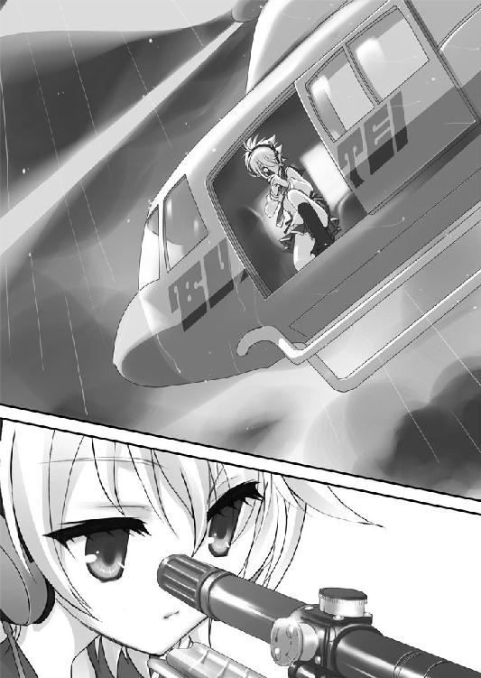
手鏡で、自分の額の傷を見ていた。
「......」
とても集中しているのか、こっちに気づいていない。
額の傷はまだ腫れが引いておらず、真っ赤に浮き立ってしまっている。
２発の銃弾はアリアの額に２本の交差する線のような傷跡を残し、いつも自慢するように露出させていた形のいいおでこを台無しにしてしまっている。
昨日医者に聞いてしまったのだが......あの傷は、どうしても痕が残ってしまうらしい。
――一生消えない、傷痕が。
パッチン......パチン。
アリアは涙目で鏡を見ながら、いつも使っていたパッチン留めを付けては直し、付けては直ししていた。
それを見た俺の胸に、ちくり、と針で刺されたような痛みが走る。
アリアは......自分の額を、とても気に入っていた。
そこに、あんな傷をつけられて――辛いだろうな。
「......アリア」
俺は今来たフリをしつつ、ちょっとドアから離れてノックをする。
「あ、ちょ、ちょっと待ちなさい」
部屋の中から、がさごそ、と何か慌てた感じの物音がした。
「......いいわよ」
言われて俺が入ると、アリアは早業で頭に包帯を巻き直し、工具で拳銃をいじっていた。
ちょっとわざとらしいが、銃を整備してたフリをしてるらしい。
「――お見舞い？」
そして、露骨にイヤそうな目で俺を見てくる。
「ケガ人扱いしないでよ。こんなかすり傷で入院なんて、医者は大げさだわ」
「レッキとしたケガ人だろ。その額の傷――」
「傷が何だっていうの？ なにジロジロ見てるのよ」
「いや、その......それ、痕が残るんだろ」
「だから何？ 別に気にしてないわよ。あんたも気にしなくていい。はい整備終わり」
がしゃ、と拳銃をサイドテーブルに置くと、アリアは腕組みをした。
「武偵憲章１条。仲間を信じ、仲間を助けよ。あたしはそれに従っただけ。あんただから特別に助けたわけじゃないわ」
「武偵憲章だなんて......そんなキレイ事をバカみたいに守るなよ」
「......あたしがバカだっていうの？ キンジの分際で。でも......そうね。こんなバカを助けたあたしは、バカだったのかもね」
ぷいっ、とそっぽを向いたアリアに、俺は......これ以上この話題で話すのがイヤになって、コンビニの袋を差し出した。
しばらくの沈黙の後、ふんふん、とアリアの鼻が小さく動く。
「......ももまん？」
開けてもいないのに、ニオイで分かったらしい。
アリアは紅いツリ目をぴきっと見開いて振り向く。
「食えよ。売ってあるだけ......５つ買ってきた。好物だろ」
そう言うとアリアはしばらく黙って袋を見ていたが、がさっ、と奪い取りざまに手を突っ込んだ。
そして、はむはむはむ......と冷めかけのももまんをがっつく。
なんか、手負いの猛獣に餌付けしてるみたいだな。
「ゆっくり食えよ。ももまんは逃げていかない」
「うるふぁい。あたしの勝手でしょ」
餡のついた唇で憎まれ口を叩くと、アリアは黙々とももまんを食べ続けた。
武偵病院のメシはマズイことで有名だ。きっと、あまり食べていなかったのだろう。
「まあ......食べながら聞け。あの後、犯人が使っていたホテルの部屋が見つかった」
「......宿泊記録は？」
「ない。というか宿泊データが外部から改竄されてたんだ」
俺は鞄からクリアファイルを取り出し、アリアの膝元に置いてやった。
「峰理子を中心に、探偵科と鑑識科に部屋を調べてもらったよ。だが結論から言うと......犯人像に繋がるような痕跡は、何一つ見つからなかった」
「でしょうね。『武偵殺し』はケタ外れに狡猾なヤツよ。足跡なんか残すわけがない」
「『武偵殺し』......か。俺はチャリジャックもバスジャックも、『武偵殺し』の模倣犯かと思ってたんだけどな。なんたって――ヤツは、もう逮捕されてるんだから」
「だから言ったでしょ。それは誤認逮捕なのよ」
俺は......アリアの説に、反論できなかった。
確かにこれは模倣犯などという低レベルな犯罪者の仕業じゃあなさそうだ。
「あと......そのファイルには俺のチャリジャックの調査結果も添付してある。だが、こっちも正直なにも分からないに等しかったよ。セグウェイもＵＺＩも盗難品だったしな」
「使えないヤツらね。そんな資料、読むだけ時間のムダだわ」
「そう思うんならゴミ箱にでも捨てろ」
と言ったら本当にファイルをゴミ箱に捨てやがったので、俺はちょっと腹が立った。
手がかりを掴めなかったとはいえ、理子たちはみんな徹夜で調査してくれてたのに。
「――出てって。もう済んだでしょ」
「？」
「あんたが強襲科に戻ってから最初の事件。それが済んだんだから、契約は満了よ。あんた、もう探偵科に戻っていいわ。さよなら」
ももまんを食べ終えたアリアが、吐き捨てるように言う。
「何だよ......本当に勝手なヤツだな。あんだけ強引に引き込んどいて、用が済んだらそれかよ」
「謝ってほしいの？ お金でも払えば気が済む？」
「......俺を怒らせたいのか？」
「さっさと帰ってほしいのよ。１人にして」
「ああ、帰るよっ」
頭に――血が上ってきたのを感じる。
なぜこんなに腹が立つのかは分からなかったが、アリアの言葉はいちいち聞いていて苦しかった。
フン、と俺もそっぽを向き、病室を去ろうとする。
「何よ......」
ドアノブに手をかけた俺の背中に、アリアが呟くのが聞こえた。
「あたしはあんたに、期待してたのに......現場に連れて行けば、また、あの時みたいに、実力を見せてくれると思ったのに！」
「――お前が勝手に期待したんだろ！ 俺にそんな実力は無い！ それにもう......俺は、武偵なんかやめるって決めたんだ！ お前はなんでそんなに勝手なんだよ！」
つい、声を荒げて振り返ってしまう。
なんでか、コイツが相手だと冷静になりきれない。
クソッ。なんでだよ。
俺らしくない。
「勝手にもなるわよ！ あたしにはもう時間が無い！」
「なんだよそれ！ 意味が分かんねーよ！」
「武偵なら自分で調べれば!? あたしに――あたしに比べれば、あんたが武偵をやめる事情なんて、大したことじゃないに決まってるんだから！」
大したことじゃない。
そう言われて、俺は――
気がついたら、衝動的にアリアに詰め寄っていた。
相手が女だということも忘れて、襟首を掴みそうになる。
......それを堪えて、手を握りしめた。
強く、強く、握りしめた。
「な、何よ......何なのよっ」
初めて見せた俺のその剣幕には......さすがのアリアも、うろたえていた。
俺はベッドに両手を突き、顔を伏せる。
ああ。今。俺は。
ひどい顔をしてるに違いない。
誰にも、見せたくないような顔を。
白雪にも言われた事だが、うちの家系・遠山家は代々、正義の味方をやってきた。
時代によりその職業は違っていたが、ヒステリアモードという特殊な遺伝子の力で――力弱き人々のため、何百年も戦ってきたのだ。
俺が物心つく前に殉職した父さんも武装検事として活躍していたし、武偵だった兄さんだって――俺にとっては、人生の目標となるヒーローだったんだ。
だから俺は何の疑いもなく、自ら進んで、武偵高に進学した。
中学では酷い目に遭わされたヒステリアモードだって、いずれ父さんや兄さんみたいに使いこなせるようになるだろう――そこまで、前向きに物事を考えられていた。
......だが去年の冬、そんな俺の人生を一変させる出来事が起きた。
浦賀沖海難事故。
日本船籍のクルージング船・アンベリール号が沈没し、乗客１名が行方不明となり......死体も上がらないまま捜索が打ち切られた、不幸な事故だ。
死亡したのは、船に乗り合わせていた武偵......遠山金一。
俺の、兄さんだった。
いつも力弱き人々のためにほとんど無償で戦い、どんな悪人にも負けなかった兄さんは――警察の話によれば、乗員・乗客を船から避難させ、そのせいで自分が逃げ遅れたのだそうだ。
だが、乗客たちからの訴訟を恐れたクルージング・イベント会社、そしてそれに焚きつけられた一部の乗客たちは、事故の後、兄さんを激しく非難した。
曰く、『船に乗り合わせていながら事故を未然に防げなかった、無能な武偵』と。
ネットで、週刊誌で、そして遺族の俺に向かって吐かれた、あの罵詈雑言の数々。
今でも、夢に見る。
――兄さんはなぜ、人を助け、自分が死んだ？
――なぜ、スケープゴートにさせられた？
それは、ヒステリアモードの遺伝子のせいで――武偵なんかをやっていたからだ！
ああ。武偵なんて、正義の味方なんて、戦って、戦って、傷ついた挙げ句、死体にまで石を投げられる、ろくでもない、損な役回りじゃないか......！
だから俺は――そんなバカなものになるのを、やめたんだ。
これからは普通の人間になる。
生きて、無責任なことを言うだけ言って、平凡な日々をのうのうと送る側になる。
そう、決めたんだ。
決めたんだ――そう。
顔を上げると、アリアは......黙っていた。
その赤紫色の瞳と目が合った時、俺はアリアに対して抱いてしまう、このどす黒い感情の正体に気付いた。
――コイツは、似ているんだ。俺と。
何か他人には理解しがたい重いものを背負い、武偵という道を、俺とは正反対の方向へ全力疾走している。悲壮なまでに。
俺は逃げようとして、コイツは、立ち向かおうとしている。
だから――俺はアリアに対して、冷静になれないのだ。
「とにかく......俺は武偵なんてもう辞めるんだ。学校も、来年からは一般の高校に移る」
「......」
「聞いてるのか」
「分かった......分かったわよ......あたしが、探してた人は......」
アリアは視線を俺から逸らし、１つ、長い瞬きをした。
まるで、書いてはいけなかった文章にピリオドを打つように。
「あんたじゃ、なかったんだわ」
４弾 前髪の下
結局アリアとはあのままケンカ別れ――ということに、なってしまった。
これで、よかったんだろうか。
これは......かつて、俺が望んだ通りの結末。
俺はあのバスジャックで、今の、何もできない自分を見せた。
それでアリアは俺に失望し、解放してくれた。
おかげで俺は強襲科を出ていける。あとは探偵科で平和に時間を潰し、来年から普通の高校に転校する。そして、武偵の世界から足を洗って、普通の大人になるんだ。
いいじゃないか。それで。
でも......なんだろう、このモヤモヤした気持ちは。
俺はあれから、なんだか分からない、イラつくような感情を引きずりながら週末を過ごしている。
パッチン......パチン。
テレビを見ても、ネットを見ても、あのパッチン留めの音が頭から離れない。
アリアが退院する予定と聞いていた日曜の朝――今朝なんかは、あいつのことを考えないようにと、掃除や洗濯に没頭したりしてみた。
だが、そのせいで――
俺はその昼過ぎ、退院したアリアを偶然、意外な場所で見かけてしまったのだ。
学園島の片隅にある、美容院で、だ。
たまたま美容院の隣のクリーニング店へ行った帰りにアリアを見つけた俺は、彼女のあまりの変貌っぷりについ足を止めてしまった。
向こうはこっちに気づいていなかったから、また、盗み見になってしまったのだが......
「......」
少し重い表情をしていたアリアは、長いツインテールはそのままに、少し髪型を変えていた。
前髪を、作っていた。
それはそれでクラッとくるほど可愛いのだが、あれは――聞くまでもない。額の傷跡を隠すためのものだろう。
そう思った俺の胸の奥に、また、チクリと鋭い痛みが走った。
白いサクランボみたいなファーのついたミュールを鳴らして、アリアはモノレールの駅へと歩き出す。
その服装は――私服だ。
制服姿かＣ装備ぐらいしか見たことが無かったので、こういう普通の女の子らしい姿は逆に新鮮だった。
白地に薄いピンクの柄が入った清楚なワンピースを着たアリアは、まるでファッション誌から抜け出してきたかのように今風だ。
今のアリアの写真を表紙にすれば、雑誌とあの服が飛ぶように売れるだろう。
だが......アリアは普段から身だしなみには気を遣う方ではあったが、ここまでしっかりおめかしした姿を見たことは無い。
どこへ行くのだろうか。
（デートか？）
か？ ではない。
多分そうなのだろう。
......アリアの、カレシ。
いたのか。
どんなヤツなんだろうか。
そう思った俺は――なぜかは分からなかったが、つい。
アリアを、尾け始めてしまっていた。
アリアはモノレールで新橋に出て、そこからＪＲで神田を経由し......新宿で降りた。
少し後ろからついていくと、街の男たちがアリアをチラチラ見ているのが分かる。
そりゃそうだ。こんな可愛い子、めったにいない。それが隅々まで気合いを入れてオシャレをしてるんだから、注目しない方がおかしいだろう。
アリアは西口から高層ビル街の方へ、カツカツとミュールを鳴らしつつ歩いていく。
これも、ちょっと意外な方向だ。
こっちはオフィスビルぐらいしか無かったハズだが......となると、カレシは社会人だったりするのだろうか？
そんな事を考えながら尾行を続けていると――
アリアは、ある意外な建物の前で足を止めた。
新宿警察署、である。
こんな所に、なぜそんなにめかし込んで来る？
「......下っ手な尾行。シッポがにょろにょろ見えてるわよ」
振り返らずいきなり言ってきたアリアに、俺は棒を飲んだようになってしまう。
――なんだ。
バレてたのか。
「あ......その。お前、昔言ったろ。『質問せず、武偵なら自分で調べなさい』って」
気まずさから、俺はちょっと逆ギレ気味に言いつつアリアの横に立った。
「ていうか、気づいてたんならなんでそう言わなかったんだよ」
「迷ってたのよ。教えるべきかどうか。あんたも、『武偵殺し』の被害者の１人だから」
「？」
「まぁ、もう着いちゃったし。どうせ追い払ってもついてくるんでしょ」
と言うアリアには、いつもの覇気がなかった。
署内に入っていくアリアに、俺は頭の中にいくつもの疑問符を浮かべながらついていくのだった。
留置人面会室で２人の管理官に見張られながらアクリルの板越しに出てきた美人に、俺は見覚えがあった。
たしか......アリアの拳銃のグリップに、埋め込まれていたカメオ。そこに彫刻されていた、アリアによく似た女性である。
柔らかな曲線を描く長い髪。オニキスのような瞳。アリアと同じ、白磁のような肌――
「まぁ......アリア。この方、彼氏さん？」
「ちっ、違うわよママ」
俺を見てちょっと驚いたような、しかしおっとりした声を上げたその女性は......
アリアの、母親。なのだろう。
わ、若い。
母親というより、年の離れたお姉さんってカンジだな。
「じゃあ、大切なお友達さんかしら？ へぇー。アリアもボーイフレンドを作るお年頃になったのねぇ。お友達を作るのさえヘタだったアリアが、ねぇ。ふふ。うふふ......」
「違うの。コイツは遠山キンジ。武偵高の生徒で――そういうのじゃないわ。絶対に」
長い睫毛の目を優しげに細めた母親に、アリアはスパッと言い切る。
そんなに明確に否定しなくてもいいだろうに。
「......キンジさん、初めまして。わたし、アリアの母で――神崎かなえと申します。娘がお世話になってるみたいですね」
「あ、いえ......」
こんな部屋にいるにもかかわらず、かなえさんはその場の空気をすべて柔らかく包んでくれるような感じのする人だった。
実は、俺はこういうタイプにはちょっと弱い。
柄にもなくどぎまぎしてしまって、滑舌が悪くなってしまう。
そんな俺に、アリアはなんだかイラッとしたような顔をして――アクリル板の方に身を乗り出した。
「ママ。面会時間が３分しかないから、手短に話すけど......このバカ面は『武偵殺し』の、３人目の被害者なのよ。先週、武偵高で自転車に爆弾を仕掛けられたの」
「......まぁ......」
かなえさんは表情を固くする。
「さらにもう一件、一昨日はバスジャック事件が起きてる。ヤツの活動は、急激に活発になってきてるのよ。てことは、もうすぐシッポも出すハズだわ。だからあたし、狙い通りまずは『武偵殺し』を捕まえる。ヤツの件だけでも無実を証明すれば、ママの懲役８６４年が一気に７４２年まで減刑されるわ。最高裁までの間に、他もぜったい、全部なんとかするから」
――アリアの言葉に、俺は目を丸くした。
「そして、ママをスケープゴートにしたイ・ウーの連中を、全員ここにぶち込んでやるわ」
「アリア。気持ちは嬉しいけど、イ・ウーに挑むのはまだ早いわ――『パートナー』は、見つかったの？」
「それは......どうしても見つからないの。誰も、あたしには、ついてこれなくて......」
「ダメよアリア。あなたの才能は、遺伝性のもの。でも、あなたには一族の良くない一面――プライドが高くて子供っぽい、その性格も遺伝してしまっているのよ。そのままでは、あなたは自分の能力を半分も発揮できないわ。
あなたには、あなたを理解し、あなたと世間を繋ぐ橋渡しになれるようなパートナーが必要なの。適切なパートナーは、あなたの能力を何倍にも引き延ばしてくれる――曾お爺さまにも、お祖母さまにも、優秀なパートナーがいらっしゃったでしょう？」
「......それは、ロンドンで耳にタコができるぐらい聞かされたわよ。いつまでもパートナーを作れないから、欠陥品とまで言われて......でも......」
「人生は、ゆっくりと歩みなさい。早く走る子は、転ぶものよ」
かなえさんはそう言うと、長い睫毛の目をゆっくりまばたかせた。
「神崎。時間だ」
壁際に立っていた管理官が、壁の時計を見ながら告げる。
「ママ、待ってて。必ず公判までに真犯人を全部捕まえるから」
「焦ってはダメよアリア。わたしはあなたが心配なの。１人で先走ってはいけない」
「やだ！ あたしはすぐにでもママを助けたいの！」
「アリア。私の最高裁は、弁護士先生が一生懸命引き延ばしてくれてるわ。だからあなたは落ち着いて、まずはパートナーをきちんと見つけ出しなさい。その額の傷は、あなたがもう自分１人では対応しきれない危険に踏み込んでいる証拠よ」
アリアが前髪で隠していた傷とテーピングにはとっくに気付いていたらしく、かなえさんがアリアを叱る。
「やだやだやだ！」
「アリア......！」
「時間だ！」
興奮するアリアを宥めようとアクリル板に身を乗り出したかなえさんを、管理官が羽交い締めにするような形で引っ張り戻した。
あっ、とかなえさんが小さく喘ぐ。
「やめろッ！ ママに乱暴するな！」
アリアはまるで小さな猛獣のように犬歯をむき、その赤紫色の目を激昂させてアクリル板に飛びかかった。
だが板は透明でも、厚く固い。もちろん少しも歪まず、アリアを受け付けない。
かなえさんはアリアを心配そうな目で見ながら、２人がかりで引きずられるようにして運ばれていった。
面会室の奥の扉が――クリーム色の柔らかさとは裏腹に重い金属音を響かせて――
閉ざされる。
「訴えてやる。あんな扱い、していいワケがない。絶対......訴えてやるッ」
と独り言しながら、曇り空の新宿駅へ戻るアリアに......
俺は、ずっと、声をかけられずにいた。
ただ影法師のように、その後ろについていく。
「......」
かつん、かつん、かつん。
ミュールを鳴らしてアルタ前まで戻ってきたアリアは、急に――
かつ......ん。立ち止まった。
俺も、立ち止まる。
背後から見れば、アリアは顔を伏せ、肩を怒らせ、ぴんと伸ばした手を震えるほどきつく握りしめていた。
ぽた。
ぽた......ぽたた。
その足元に、何粒かの水滴が落ちてはじけている。
それは......聞くまでもない、アリアの涙だった。
「アリア......」
「泣いてなんかない」
怒ったように言うアリアは、顔を伏せたまま震えていた。
湿っぽい風の中、町を歩く人々は道の真ん中に立ち止まる俺たちをニヤニヤ見ている。
痴話ゲンカか何かだと思っているのだろう。
「おい......アリア」
俺はアリアの前に回り込み、少し背をかがめて顔をのぞき込んだ。
ぽろ......ぽろ。ぽろ。
前髪に隠れた目から、うつむいた白い頬を伝って、真珠みたいな雫がしたたる。
「な......泣いてなんか......」
と言うアリアは歯を食いしばり、きつく閉じた目から涙を溢れさせ続けていた。
そして、
「ない......わぁ......うぁあああぁぁあああぁぁ！」
糸が切れたかのように、泣き始める。
俺から顔を逸らすように上を向き、ただ、子供のように泣く。
こっちの胸が振動してしまうほどの、大きな声で。
「うあぁあああああああ......ママぁー......ママぁああああぁぁ......！」
夕暮れの街は、明るいネオンサインに楽しい音楽を乗せて、流行の服や最新の電化製品を宣伝している。ちかちかするその光が、アリアの桃色の髪を弄ぶように照らす。
追い打ちをかけるように、通り雨が降り始めた。
人々が、車が、俺たちの横を通り過ぎていく。
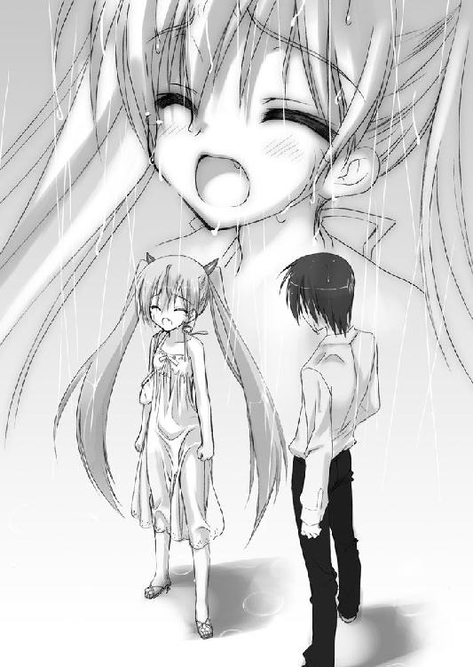
ケータイを耳にあてた女が、キャハハハ！ マジ!? ウケルー！ なんて大声で喋りながら、通り過ぎていった。
......俺は。
喧噪の中でいつまでも泣き続けるアリアに、どうしてやることもできなくて。
ただ、無言のまま、そのそばに立っている。
東京が強風に見舞われた週明け、一般科目の授業に出た俺の右隣は空席だった。
アリアは学校を休んだらしい。
あの後――アルタ前で泣きやんだアリアが「一人にして」と言ってきたので、俺たちは結局あそこで別れたままになっている。
あの日、俺は偶然見つけたアリアを尾けて、被害者の１人としてその母親の所についていって......いろんなことを知った。
知って、しまった。
――アリアの母親は、『武偵殺し』の容疑者として捕らえられている。
そして早くも二審まで、有罪判決を受けているのだ。
おそらく、下級裁隔意制度――証拠が十分に揃っている事件について、高裁までを迅速に執り行い、裁判が遅滞しないようにする新制度――を適用されたのだろう。
その高裁での量刑、なんと懲役８６４年。事実上の終身刑だ。
また面会室での会話から考えて、アリアの母親の容疑は一連の『武偵殺し』による殺人事件以外にもあるようだ。アリアはその全てを冤罪と断じ、最高裁までに覆そうとしているのだ。武偵として真犯人を見つけるという、荒っぽいやり方で。
それと――『パートナー』の、こと。
アリアの実家こと『Ｈ』家は、貴族の一門だ。で、どうやらそこは警察か何かの名門で、みんな優秀な相棒と組むことでその能力を飛躍的に伸ばし、功績を成してきたらしい。
そのためアリアにも相棒を作ることが求められているのだが――
アリアはそれを、見つけられずにいる。
そりゃそうだろう。
あんな天才児に合わせられる相棒なんて、そうやすやすと見つかるワケがない。アリアが『パートナー』を『ドレイ』と言い換えていたのも、相手に求める能力のハードルを言葉の上だけでも下げて、自分にかかる心理的な負担を軽減させようとしての事かもしれなかった。
そんなことをぼんやり考えながら、全然集中できなかった探偵科の授業を終えると――
携帯に、メールが来ていた。
理子からだ。
『キーくん。授業が終わったら台場のクラブ・エステーラに来て。大事な話があるの』
普段の俺なら、これはまあスルー確定だったろう。
そもそも女子の誘いなんて鬼門だし、理子の「大事な話」は大事だったためしがない。
だが、今回は......少し状況が特殊だ。
理子は先週のバスジャックに関連した情報を引き続き調べていて、今日もそのためか探偵科の授業をフケていた。それに今日、アリアが休んだこともなんとなく気になる。
虫の報せがした俺は、念のため、モノレールで台場へと向かった。
少し迷いながらクラブ・エステーラとやらに着くと、そこはどうやら高級なカラオケボックスのような店だった。
店の駐輪場には、ショッキングピンクの改造ベスパが停めてある。
この悪趣味な彩色。見覚えがあるぞ。理子のだ。
こいつは一見50ccだが、武藤に金を積んで車検スレスレの魔改造がされてあって、時速１５０キロだかで飛ばせるとか理子が自慢してた。武藤......ホント、仕事選べよ。
時刻は、夕方の６時。
やけに鮮明な夕焼け空は血のようで、紺色のちぎれ雲がそこを異様に速く流れていた。
これは東京に迫る台風の影響だろう。風が、強い。
クラブに入ると、バーラウンジでは会社帰りのＯＬやデート中の若者が芸術品みたいなケーキをつついていた。見れば、武偵高の女子もちらほらいる。流行ってんだな、ここ。
「キぃーくぅーんー！」
奥から小走りにやってきた理子は、また、例のロリータ制服を着ていた。
今日のは......一段とスゴい。特にスカートがカーネーションの花びらみたいにひらひらと膨らんでいる。あれはパニエとかいうアンダースカートで膨らましているのだろう。
「お前なぁ。授業サボって......こんなトコで何やってんだよ」
「くふ。この勝負服のお着付けしてたの。でもキーくんなかなか来ないから、フられたらどうしようかなーって思ってたんだよ。理子うれしー」
「フるとかフられるとかの関係じゃないだろ俺たちは」
「あー、そっけないんだぁー？ こっからは理子ルートなんですよー？」
「なんだそれ。イミ分かんねーよ」
笑う理子の上目遣いが妙に艶めかしくて、俺は舌打ちする。
やっぱり来るべきじゃなかったか。なんなんだ、コイツ。
理子はぶら下がるように俺と腕を絡ませると、意気揚々と店の奥に進み出す。
その姿を見た武偵高の女子たちが、ヒソヒソ語り合う。
「やだ。キンジ、こんどは理子ちゃんとつきあってる」
「キンジってチビ専なのかな」
「星伽さんもいるから、そうじゃないと思う」
こらそこ。聞こえてるぞ。二重三重に誤解するな。
理子に押し込まれるようにして入った個室は、アール・ヌーボー調に飾り付けられた２人部屋だった。理子は俺をフカフカした長イスに着かせると、その童話のお姫様みたいなスカートで真っ隣に座り、テーブルのモンブランと紅茶を示してウィンクしてくる。
「呼び出しちゃったから、理子がぜーんぶおごったげる」
そう言うと理子は甘ったるそうなミルクティーをんくんく飲み、その大きな目でこっちを見つめ上げてきた。
「ぷは。ねぇキーくん、アリアとケンカしたでしょ」
「そんなこと......お前に関係ないだろ」
「関係あるよぉ。キーくんはアリアと仲良くしなきゃダメなんだから」
「なんでだよ」
「そうじゃないと理子が楽しくない！」
理子はモンブランにフォークをぐっさり刺し、にい、と笑う。
本音、という顔だ。
「はいキーくん、あーんして」
切り分けたモンブランを乗せたフォークを、俺の方に突き出してくる。
「するかバカ」
「――『武偵殺し』――」
何かのカードを切るようにそう告げてきた理子に――
俺は、目を見開いた。
「――何か......分かったのか」
「あーんしてくれたら教えてあげる」
死ぬほど恥ずかしかったが、背に腹はかえられない。
俺は理子にモンブランを一口もらうと、さあ教えろと目ですごんだ。
「くふ。あのね。警視庁の資料にあったんだけどね......過去、『武偵殺し』にやられた人って、バイクジャックとカージャックの２人だけじゃないかもしれないんだって」
「どういうことだ」
「『可能性事件』っていうのがあるんだよ。事故ってことになってるけど、実際は『武偵殺し』の仕業で、隠蔽工作で分からなくなってるだけかもしれないってヤツ」
「そんなものがあるのか」
「そこにね、見つけちゃったんだ。たぶん、そうじゃないかなぁって名前」
理子はポシェットから出してきた四つ折りのコピー紙を、手品でもするかのようにゆっくり、ゆっくりと広げ、俺に見せつけてくる。
「――！」
血が、凍る。
『２００８年12月24日 浦賀沖海難事故 死亡 遠山金一武偵（19）』
「この名前、お兄さんでしょ？ ねぇーこれ、シージャックだったんじゃない？」
理子の声が、やけに遠く聞こえる。
――『武偵殺し』。
何なんだ、お前は。
誰なんだ、お前は。
ナゼ兄サンヲ。
ナゼ兄サンヲ、ナゼ俺ヲ、ネラッタ――！
「いい」
熱を含んだ理子の声に、はっ、と気を取り戻す。
俺と目が合うと、理子はスッと目を細めた。
「いいよキンジ。キンジのそういう――眼。理子ゾクッてきちゃう」
まるで何かに快感を得ているような表情で、理子は俺に上半身を寄せてくる。
「Je t'aime à croquer. 入試の時、理子、キンジの眼に――ひとめぼれしちゃったんだぁ」
「――理子？」
入試の時、ヒステリアモードだった俺はコイツを赤子の手をひねるように倒している。
その時のことを、言っているのか。
「キンジっ」
理子は狭い個室の中で、獣じみた動きを見せた。
いきなり、しがみついてきたのだ。
突然のことに、俺は為すすべもなく長イスの上に押し倒されてしまう。
「――理子!?」
「キンジって、ほんっとーにラブに鈍感。まるで、わざと鈍感になろうとしてるみたい。ねぇ......分かってる？ これ、もうイベントシーンなんだよ？」
ツーサイドアップに結った理子の長い髪と左右のテールが、俺の頭を覆うようにして包み込んでいる。
目の前ほんの５センチほどに迫った、理子の童顔。
アリアとはまた違う、バニラのような、アーモンドのような、甘ったるい女の香り。
理子は唇を触れるか触れないかの距離まで俺の頬に近づけると、そのまま、耳元に口を寄せてきた。かり。何のつもりか、耳をかじってくる。い、痛い。
「ねえ、キンジぃ。せっかく高っかい個室とったんだし......ゲームみたいなこと、してもいいんだよ......？」
熱く切ない囁きと共に、理子は、俺に全身をすり寄せてきた。
り、理子。理子って、こんな――色っぽい子だったのか。
探偵科でそのスジの男どもがコイツを『ロリ顔巨乳』などと呼んでありがたがっていたが、上からのしかかられて、その意味を知ってしまった。
いつも少女趣味なカッコで子供みたいな仕草をしてるクセに、カラダの凹凸はやたらとハッキリしてて、柔らかくって――
「キンジ。このお部屋でのことは、だぁーれにもバレないよ？ 白雪はＳ研の合宿だし、アリアはもうイギリスに帰っちゃうからね。今夜７時のチャーター便で行くって話だったけど......んー、もう羽田だよ、きっと。だから......理子といいことしよ？ くふふっ」
その誘惑が突然だったせいと、あまりにも意外で心構えができていなかったせいで。
俺は――気がついた時には、体の芯を熱く、堅く、たぎらせてしまっていた。
ヒステリアモードに――なって、しまっていた。
「――！」
その瞬間、俺の頭の中に閃くものがあった。
いま理子から聞いた話と過去の事件が、まるで電磁石でも使われたかのように、一本の線で繋がっていく。
その線は......
ある恐ろしい、取り返しのつかないエンディングにつながっている。
――ヤバい。
ヤバいぞ。
今すぐ、動かなければ！
「ゴメンな――！」
ヒステリアモードの俺が、理子の目の前に手を滑り込ませ、パチンッ！
指を、弾いて鳴らした。
みゅっ、と理子がまばたきした刹那――
「お子様は、そろそろお家でネンネの時間だろう？」
「あんっ!?」
その小さな体を抱え上げ、くるっ。
俺は体を入れ替え、理子を長イスに横たわらせる。
そして立ち上がると、前髪をかき上げつつ、部屋を飛び出していた。
ヒステリアモードの、頭で――
５弾 オルメス
どういう刺激を受けるかにもよるが、ヒステリアモードは長くても数十分しか続かない。羽田空港の第２ターミナルに着いた頃の俺は――もう、通常モードに戻っていた。
だが、それでも止まるわけにはいかなかった。
俺の推理が正しければ。
アリアはもうすぐ会ってしまう。会ってしまうのだ。
『武偵殺し』と――！
空港のチェックインを武偵手帳についた徽章で通り抜け、金属探知機なんかもちろん通らず、ゲートに飛び込む。
アリア。
帰りたければ帰れ。
だが、もう『武偵殺し』と戦ってはいけない。
『武偵殺し』があの兄さんを斃したのだとしたら――お前１人では、『武偵殺し』には勝てない。絶対に！
兄さんは強かった。
誰よりも強かった。そして賢かった。ヒステリアモードの俺より遥かに、桁違いに。
（アリア――！）
次は、額の傷じゃ済まないぞ！
殺される。
死んでしまうんだ、お前は！
俺はボーディングブリッジを突っ切り、今まさにハッチを閉じつつあるＡＮＡ６００便・ボーイング７３７｜３５０、ロンドン・ヒースロー空港行きに飛び込んだ。
バタンッ。機内に駆け込んだ俺の背後で、ハッチが閉ざされる。
「――武偵だ！ 離陸を中止しろっ！」
目を丸くしている小柄なフライトアテンダントに、武偵徽章を突きつける。
「お、お客様!? 失礼ですが、ど、どういう――」
「説明しているヒマはない！ とにかく、この飛行機を止めるんだ！」
アテンダントはビビりまくった顔でこくこくうなずき、２階へと駆けていった。
その後を追いかけたいところだったが、逆に、その場に両膝を落としてしまう。強襲科を辞めて体力が落ちていたのが災いした。ここまでの全力疾走で息が切れている。もう、一歩も動けない感じだ。
だが......とりあえずはこれで、離陸を止めることはできただろう。
――そう思った矢先。
ぐらり。
機体が揺れた。
動いて......いる！
「あ、あの......だ、ダメでしたぁ。き、規則で、このフェーズでは管制官からの命令でしか離陸を止めることはできないって、機長が......」
２階から降りてきたアテンダントが、ガクガク震えながら俺を見ている。
「ば、バッカヤロウ......！」
「う、撃たないでください！ ていうかあなた、本当に武偵なんですか？ 『止めろだなんて、どこからも連絡もらってないぞ！』って、機長に怒鳴られちゃいましたよぉ」
こ、このバカ......！
どうする。
拳銃で脅してでも、止めさせるか。
いや。ダメだ。今のコイツの話によれば機長は俺を信用していない。今さら脅しても、飛行機を止めることはできないだろう。
窓の外を睨むと、ＡＮＡ６００便はもう滑走路に入ってしまっていた。
今ムリに止めると、滑走路上で他の飛行機と衝突する恐れもある。
頭を切り換えろキンジ。もう手遅れだ。
後手に回ってしまったのなら、後手なりの戦い方をしないと失敗する。
――作戦を、変えるしかない。
機体は上空に出て、ベルト着用サインが消えた。
俺は仕方なしにアテンダントを落ち着かせてから......アリアの席、というか個室に案内してもらう。
この飛行機のキャビン・デッキは、普通の旅客機とは明らかに異なる構造をしていた。
１階は広いバーになっていて、２階、中央通路の左右には扉が並んでいる。
これは――この間、ニュースで見たことがあるぞ。
『空飛ぶリゾート』とか言われてた、全席スィートクラスの超豪華旅客機。
座席ではなく高級ホテルのような12の個室を機内に造り、それぞれの部屋にベッドやシャワー室までもを完備した、いわゆるセレブご用達しの新型機だ。
「......キ、キンジ!?」
生花で飾り付けられたスィートルームで――アリアが、紅い目をまん丸に見開いた。
よし。まずは合流できたな。
「......さすがはリアル貴族様だな。これ、チケット、片道20万ぐらいするんだろ？」
ダブルベッドを見ながら言ってやると、アリアは座席から立って俺を睨んできた。
「――断りもなく部屋に押しかけてくるなんて、失礼よっ！」
「お前に、そのセリフを言う権利は無いだろ」
アリアは自分が俺の部屋に押しかけたことを思い出したのだろう。
うぐ、と怒りながらも黙る。
「......なんでついてきたのよ」
「太陽はなんで昇る？ 月はなぜ輝く？」
「うるさい！ 答えないと風穴あけるわよ！」
セリフをパクられてカッとなったのか――ばっ。アリアはスカートの裾に手をやった。
俺は内心安堵する。
よかった。帯銃してるんだな。
「武偵憲章２条。依頼人との契約は絶対守れ」
「......？」
「俺はこう約束した。強襲科に戻ってから最初に起きた事件を、１件だけ、お前と一緒に解決してやる――『武偵殺し』の１件は、まだ解決してないだろ」
「なによ......何もできない、役立たずのくせに！」
がう！ と、小さいライオンが吼えるようにアリアは犬歯を剥いた。
「帰りなさい！ あんたのおかげでよ―――く分かったの、あたしはやっぱり『独唱曲』！ あたしのパートナーになれるヤツなんか、世界のどっこにもいないんだわ！ だからもう、『武偵殺し』だろうが誰だろうが、これからずっと１人で戦うって決めたのよ！」
「......もうちょっと早く、そう言ってもらいたかったもんだな」
俺は室内にあったもう一つの座席に腰を下ろし、わざとらしく、眼下の街を見た。
「......ロンドンについたらすぐ引き返しなさい。エコノミーのチケットぐらい、手切れ金がわりに買ってあげるからっ。あんたはもう他人！ あたしに話しかけないこと！」
「元から他人だろ」
「うるさい！ 喋るの禁止！」
強風の中、ＡＮＡ６００便は東京湾上空に出た。
ふくれっ面のアリアは腕組み足組みをして座席に座り、ぶっすぅー、と外を眺めている。
俺は――もう、毒を食らわば皿までの精神だった。
ロンドンだろうがどこだろうが、飛ぶなら飛べ。こうなれば、今は待ちの一手だ。
「――お客様に、お詫び申し上げます。当機は台風による乱気流を迂回するため、到着が30分ほど遅れることが予測されます――」
機内放送が流れ、６００便は少し揺れながら飛ぶ。
揺れ自体は、大したことは無かったのだが......
ガガン！ ガガーン！
比較的近くにあった雷雲から、雷の音が聞こえてくる。
ガガガ―――ン!!
ひときわ大きな雷鳴が轟くと......アリアは目を丸くして、きゅっ、と首を縮めた。
「怖いのか」
「こ、怖いわけない。バッカみたい。っていうか話しかけないで。耳がイライラするわ」
と言った矢先に、また、ガガーン！
「きゃっ！」
短く悲鳴を上げたアリアを見て、俺は苦笑いする。
へえ。双剣双銃のアリア様にも、ニガテなものがあったのか。カミナリとはね。
「雷が苦手なら、ベッドに潜って震えてろよ」
「うっ、うるさい」
「チビったりしたら一大事だぞ？」
「バ、バ、バカ！」
ガガガ―――ン!!
「――うぁ！」
激しく響いた雷の音に、アリアはとうとう座席からジャンプした。
そして、本当にベッドに潜り込んでしまう。
あまりにも今言った通りの展開になったので、俺は......こんな時なのに、笑いがこみ上げてきてしまった。コイツ、もしかしたらホントにチビったかもだぞ。
「アリアー。替えのパンツ持ってるか？」
「バカキンジ！ あ、あとで風穴あけてやるから！」
うはは。ガクガク震えてる。
ガガガ―――ン!! ガガガ―――ン!!
運が悪いのか機長がヘタなのか。この飛行機、雷雲の近くを飛んでるな。
「～～～き、キンジぃ～～～」
毛布の中から涙声を上げ、アリアはとうとう席に座る俺の袖をつかんできた。
「ほ、ほら、怯えんなって。テレビつけてやるよ」
俺は子供みたいに袖を放さないアリアにちょっとたじろぎながら、リモコンでテレビをつけ、チャンネルを回していく。最新映画やアニメの映像が切り替わっていき......
年配の乗客向けに入れられているらしい時代劇のチャンネルで、指を止めた。
『――この桜吹雪、見覚えがねぇとは言わせねえぜ――！』
おっ......これは、俺ん家のご先祖様を描いたチャンバラだな。
名奉行、遠山の金さん。
兄さんの説によれば、彼もまたヒステリアモードのＤＮＡを持っていて――露出狂のケがあったのか、もろ肌を脱ぐと急激に知力体力を高めることができる人だったらしい。
「ほら。これでも見て気を紛らわせ」
「う、うん」
話しかけちゃいけないというアリアルールは、どうやら解禁になったようだ。
俺の袖を握り、ぷるぷる震えるその手は小さくて、か弱くて......
今度こそ本当に、ただの女の子の手に思えた。
もし――もしも、だ。
コイツがいま、普通の女の子なのなら。
普段の俺は、ただの、平凡な男子高校生なんだから。
「アリア」
こうやって......震える手に、手を添えてやって。
「キ、キンジ......？」
そう。
普通のクラスメートとして。友達として。
震えを和らげてやることぐらいは、できる――
何秒かためらってから、アリアの指が、俺の手を握り返そうとしてきた時......
パン！ パァン！
――音。が、機内に響いた。
今度のそれは雷鳴ではなく、俺たち武偵高の生徒がもっと聞き慣れた音――
銃声――！
狭い通路に出るとそこは、大混乱になっていた。
12の個室から出てきた乗客たちと、数人のアテンダント――文字通り老若男女が、不安げな顔でわあわあ騒いでいる。
銃声のした機体前方を見ると、コクピットの扉が開け放たれている。
「！」
そこにいたのは、さっきの小柄でマヌケなアテンダント。
そいつが、ずる、ずる、と機長と副操縦士を引きずり出してきている。
２人のパイロットは何をされたのか、全く動いていない。
どさ、どさ、と通路の床に２人を投げ捨てたアテンダントを見て、俺は慌てて拳銃を抜いた。
「――動くな！」
俺の声にアテンダントは顔を上げると、にいッ、と、その特徴の無い顔で笑った。
そして１つウィンクをして操縦室に引き返しながら、
「Attention Please. でやがります」
ピン、と音を立てて、胸元から取り出したカンを放り投げてきた。
俺の足元に転がったそれに、背筋が凍る。
「キンジっ！」
雷の恐怖を押して部屋から出てきたアリアが、悲鳴を上げる。
シュウウウウ......！
音で分かる。
これは――ガス缶だ！
サリン、ソマン、タブン、ホスゲン、ツィクロンＢ。強襲科で習った毒ガスの名前が、頭の中を駆けめぐる。もし強力なヤツだったら、もうアウトだ。
「――みんな部屋に戻れ！ ドアを閉めろ！」
自分もアリアを部屋に押し込むようにしながら、叫ぶ。
ばたん、と扉を閉める一瞬前に――飛行機はグラリ、と揺れ。
ばちん、と機内の照明が消え、乗客たちが恐怖に悲鳴を連ねた。
暗闇はすぐに、赤い非常灯に切り替わった。
「――キンジ！ 大丈夫!?」
俺の体を心配してくるアリアに顔を上げ、自分で呼吸を確かめる。
息は――できる。目も見える。手足のマヒもない。
一本取られた。どうやら無害なガスだったらしい。
「アリア。あのフザケた喋り方......あいつが『武偵殺し』だ。やっぱり、出やがった」
「......やっぱり......？ あんた、『武偵殺し』が出ることが、分かって――」
赤紫色の目が、まんまるに見開かれる。
俺はヒステリアモードの時に閃いたあの推理を、伝えることにした。
「『武偵殺し』はバイクジャック、カージャックで事件を始めて――さっき分かったんだが、シージャックで――ある武偵を仕留めた。そしてそれは、たぶん直接対決だった」
「......どうして」
「そのシージャックだけ、お前が知らなかったからだよ。電波、傍受してなかったんだろ」
「う、うん」
「『武偵殺し』は電波を出さなかった。つまり、船を遠隔操作する必要が無かった。ヤツ自身が、そこにいたからだ」
あの兄さんが逃げ遅れた、というのもそもそもおかしいとは思っていたしな。
「ところが、バイク・自動車・船と大きくなっていった乗り物が、ここで一度小さくなる。俺のチャリジャックだ。次がバスジャック」
「......！」
「分かるかアリア。コイツは初めっからメッセージだったんだよ。お前は最初から、ヤツの手のひらの上で踊ってたんだ。ヤツはかなえさんに罪を着せ、お前に宣戦布告した。そして兄――いや、シージャックで殺られた武偵を仕留めたのと同じ３件目で、今、お前と直接対決しようとしてる。この、ハイジャックでな」
推理のニガテなアリアが、ぎり、と悔しさに歯を食いしばる。
そこに――
ポポーンポポポン。ポポーン。ポポーンポポーンポーン......
ベルト着用サインが、注意音と共にワケの分からない点滅をし始めた。
「......和文モールス......」
アリアが呟いたので、俺は揺れる機内でその点滅を解読しようと試みる。
オイデ オイデ イ・ウー ハ テンゴク ダヨ
オイデ オイデ ワタシ ハ イッカイ ノ バー ニ イルヨ
「......誘ってやがる」
「上等よ。風穴あけてやるわ」
アリアは眉をつり上げて、スカートの中から左右の拳銃をぞろりと出した。
「一緒に行ってやる。今の俺が役に立つかどうかは、分からないけどな」
「来なくていい」
ガガーン！ 再び聞こえた雷鳴に、アリアはキュッと体をこわばらせた。
「どうする」
「......く、来れば」
床に点々と灯る誘導灯に従って、俺たちは慎重に１階へと降りていく。
１階は――豪奢に飾り立てられたバーになっている。
その、バーのシャンデリアの下。
カウンターに、足を組んで座っている女がいた。さっきのアテンダントだ。
「!?」
拳銃を向けながら、俺たちは眉を寄せる。
彼女は、武偵高の制服を着ていた。
それもヒラヒラな、フリルだらけの改造制服――だ。
パニエで花のように膨らませたスカートは、さっき台場で理子が着ていたもの。
「今回も、キレイに引っかかってくれやがりましたねえ」
言いながら......ベリベリッ。
アテンダントはその顔面に被せていた、薄いマスクみたいな特殊メイクを自ら剥いだ。
中から出てきたのは――
「――理子!?」
「Bon soir」
くいっ、と手にした青いカクテルを飲み、ぱちり、と俺にウィンクをしてきたのは、やっぱり、理子――だった。
この異常な状況に、俺は愕然とする。
俺と台場で別れてから、コイツも――あの改造ベスパでこの飛行機を追っていたというのか？ そしてアテンダントに化けて、武偵徽章を使い――潜り込んだ？
「アタマとカラダで人と戦う才能ってさ、けっこー遺伝するんだよね。武偵高にも、お前たちみたいな遺伝系の天才がけっこういる。でも......お前の一族は特別だよ、オルメス」
「――！」
理子に言われた単語に、アリアは電流に打たれたように硬直した。
オルメス――？
それが、アリアの『Ｈ』家の名なのか？
「あんた......一体......何者......！」
眉を寄せたアリアに、にやり、と理子が笑う。
その顔を、窓から入った稲光が照らした。
「理子・峰・リュパン４世――それが理子の本当の名前」
......リュパン......？
リュパンって、あれか。探偵科の教科書に載ってた、あのフランスの大怪盗。
理子はあの、アルセーヌ・リュパンの......曾孫だっていうのか!?
「でも......家の人間はみんな理子を『理子』とは呼んでくれなかった。お母さまがつけてくれた、このかっわいい名前を。呼び方が、おかしいんだよ」
「おかしい......？」
アリアが、呟く。
「４世。４世。４世。４世さまぁー。どいつもこいつも、使用人どもまで......理子をそう呼んでたんだよ。ひっどいよねぇ」
「そ、それがどうしたってのよ......４世の何が悪いってのよ」
なぜかハッキリとそう言ったアリアに、理子はいきなり目玉をひんむいた。
「――悪いに決まってんだろ!! あたしは数字か!? あたしはただの、ＤＮＡかよ!? あたしは理子だ！ 数字じゃない！ どいつもこいつもよォ！」
突然、キレた理子は――
俺たちではない、誰かに対して、叫んでいた。
ここではない、どこかに対して怒っていた。
なんだ。なんなんだ、こいつは！
「曾お爺さまを超えなければ、あたしは一生あたしじゃない、『リュパンの曾孫』として扱われる。だからイ・ウーに入って、この力を得た――この力で、あたしはもぎ取るんだ――あたしをッ！」
何を言ってるのか微塵も分からない理子の話を、アリアは深刻な面持ちで聞いていた。
「待て、待ってくれ。お前は何を言っているんだ......!? オルメスって何だ、イ・ウーって何だ、『武偵殺し』は......本当に、お前の仕業だったのかよ!?」
「......『武偵殺し』？ ああ。あんなの」
じろ、と、理子がアリアを見る。
「プロローグを兼ねたお遊びよ。本命はオルメス４世――アリア。お前だ」
その眼はもはや、いつもの理子の眼ではなかった。
獲物を狙う、獣の眼だ。
「１００年前、曾お爺さま同士の対決は引き分けだった。つまり、オルメス４世を斃せば、あたしは曾お爺さまを超えたことを証明できる。キンジ......お前もちゃんと、役割を果たせよ？」
獣の眼が、今度は俺に向けられる。
「オルメスの一族にはパートナーが必要なんだ。曾お爺さまと戦った初代オルメスには、優秀なパートナーがいた。だから条件を合わせるために、お前をくっつけてやったんだよ」
「俺とアリアを、お前が......？」
「そっ」
理子は再びいつもの軽い調子に戻って、くふ、と笑った。
コイツ。
このバカ理子を――演じてたのか。今まで。ずっと。
「キンジのチャリに爆弾を仕掛けて、わっかりやすぅーい電波を出してあげたの」
「......あたしが『武偵殺し』の電波を追ってることに気付いてたのね......！」
「そりゃ気付くよぉー。あんなに堂々と通信科に出入りしてればねぇー。でも、キンジがあんまり乗り気じゃないみたいだったから......バスジャックで協力させてあげたんだぁ」
「バスジャックも......!?」
「キンジぃー。武偵はどんな理由があっても、人に腕時計を預けちゃダメだよ？ 狂った時間を見たら、バスにチコクしちゃうぞー？」
腕時計――理子が温室で俺の腕時計を壊したのは、わざとだったのか。
そしてコイツは修理を口実に時計を持ち帰り、細工を仕込んだ。
そのせいで俺はあの日、７時58分のバスに乗り遅れて――
「何もかも......お前の計画通りだったってワケかよ......！」
「んー。そうでもないよ？ 予想外のこともあったもん。チャリジャックで出会わせて、バスジャックでチームも組ませたのに――キンジがアリアとくっつききらなかったのは、計算外だったの。理子がやったお兄さんの話を出すまで動かなかったのは、意外だった」
兄さん。
「......兄さんを、お前が......お前が......!?」
兄さん。
俺の憧れで、尊敬の対象だった人。
その兄さんを、コイツが......！
分かる。
頭に、血が上ってきたのが分かる。
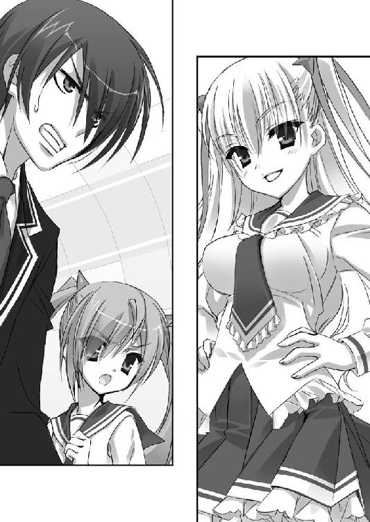
これは俺の弱点だ。
兄さんのことになると、俺は冷静でいられなくなる――！
「くふ。ほらアリア。パートナーさんが怒ってるよぉー？ 一緒に戦ってあげなよー！」
理子。さすが、怪盗リュパンの４世だな。
ここもまた、お前の筋書き通りってわけかよ......！
「キンジ。いいこと教えてあげる。あのね。あなたのお兄さんは......今、理子の恋人なの」
「いいかげんにしろ！」
「キンジ！ 理子はあたしたちを挑発してるわ！ 落ち着きなさい！」
「これが落ち着いてられるかよ！」
これ以上、死んだ兄さんを侮辱するようなマネは――絶対、許せねえ！
衝動的に、俺がベレッタを握る右手に力を込めた瞬間。
飛行機がまた、ぐらり、と揺れて。
「！」
「おーらら♪」
気がついた時には、俺の手から――ベレッタが消えていた。
がしゃん、がしゃ......と、虚ろな音を立てて、銃は真後ろの床に壊れて散らばっていく。
見えたのは、こっちに小ぶりな拳銃――ワルサーＰ99を構えた理子の笑顔だった。
「ノン、ノン。ダメだよキンジ。今のお前じゃ、戦闘の役には立たない。それにそもそもオルメスの相棒は、戦う相棒じゃないの。パンピーの視点からヒントを与えて、オルメスの能力を引き出す。そういう活躍をしなきゃ」
うっとりとご高説をぶった理子を見て――その隙に、アリアが動いた。
まるで小さな、獅子のように。
ばんっ！ と床を蹴ったかと思うと、二丁拳銃を構えて襲いかかる。
いける、と判断したのだろう。相手の火器を見て。
常に防弾服を着用している武偵同士の近接戦では、拳銃弾は一撃必殺の刺突武器になりえない。打撃武器なのだ。
となるとモノを言うのは、総弾数となる。
あの広いスカートの中に、弾が20発でも30発でも入るＵＺＩを隠し持たれていたら不利だが、ワルサーＰ99には通常16発までしか入らない。
対するアリアのガバメントは７発。チェンバーにあらかじめ入れておくか、エジェクションポートから手で１発入れておけば、８発まで入る。
これが２丁あるから、最大16発。互角だ。
だが――
「アリア。二丁拳銃が自分だけだと思っちゃダメだよ？」
理子はカクテルグラスを投げ捨てると、その手で――
もう一丁、ワルサーＰ99をスカートから取り出した。
「！」
だが、もう、アリアが止まるワケにはいかない。
バリバリバリッ！ という音を上げて、アリアは理子を至近距離から撃ち始めた。
「くッ......このっ！」
「あはっ、あはははっ！」
アリアと理子は至近距離から、拳銃でお互いを撃とうとせめぎ合う。
武偵法９条。
武偵は如何なる状況に於いても、その武偵活動中に人を殺害してはならない。
その法を遵守するため、アリアは理子の頭部を狙えない。
そして理子も――合わせているつもりか、アリアの頭部を狙わない。
まるで格闘技のように、アリアと理子の手が交差する。
武偵同士の近接拳銃戦は、射撃線を避け、躱し、あるいは相手の腕を自らの腕で弾いての戦いだ。
バッ！ ババッ！
放たれる銃弾は、お互いの小柄な体を捕らえず壁に、床に、撃ち込まれていく。
「――はっ！」
弾切れを起こした次の瞬間、アリアはその両脇で理子の両腕を抱えた。
２人は抱き合うような姿勢になり、理子の銃撃が止む。
いいぞ！ 格闘戦では、アリアの方に分がありそうだ――！
「キンジ！」
アリアに呼ばれるまでもなかった。
ジャキッ――
俺は兄の形見のバタフライ・ナイフを、手のひらの中で回転させて開く。
非常灯の下で、刀身が赤く光る。
「そこまでだ理子！」
アリアの背後に突き出た拳銃に注意しつつ、慎重に近づこうとした時――
「双剣双銃――奇遇よね、アリア」
理子が、言った。
「理子とアリアは色んなところが似てる。家系、キュートな姿、それと......２つ名」
「？」
「あたしも同じ名前を持ってるのよ。『双剣双銃の理子』。でもねアリア」
俺の足が、止まった。
その、ありえない、不気味な光景に。本能的に。
なんだ......あれは!?
「アリアの双剣双銃は本物じゃない。お前はまだ知らない。この力のことを――！」
しゅら......しゅるるっ。
笑う理子の、ツーサイドアップの、テールの片方が――まるで神話にあるメデューサの髪のように、動いて――
シャッ！
背後に隠していたと思われるナイフを握り、アリアに襲いかかった。
「！」
一撃目は、驚きながらも避けたアリアだったが――
ザシュッ！
反対のテールに握られたもう一本のナイフが、鮮血を飛び散らせた。
「うあっ！」
アリアが――真後ろに、のけぞる。
側頭部を斬られた。血が、紅く、紅く、ほとばしる。
「あは......あはは......曾お爺さま。１０８年の歳月は、こうも子孫に差を作っちゃうもんなんだね。勝負にならない。コイツ、パートナーどころか、自分の力すら使えてない！ 勝てる！ 勝てるよ！ 理子は今日、理子になれる！ あは、あはは、あははははは！」
また、ワケの分からないことを叫びながら――
理子は髪で押しのけるようにして、アリアを突き飛ばした。
あの髪、よほど怪力なのだろうか。アリアは驚くほど易々と吹っ飛ばされ――ボロ雑巾みたいに、俺の足元に転がってきた。
「アリア......アリア！」
顔面を真紅に染める血に瞼をきつく閉じながらも――アリアは、拳銃を放さずにいた。
理子は――テールで握ったナイフについた血を、べろり。うまそうに、なめる。
ありえない......
アイツはバケモノだ。
とにかくアリアを連れて、逃げなければ！
高笑いしながらの理子の声が、背中にかけられる。
きゃははははっ！ ――ねえねえ、狭い飛行機の中、どこへ行こうっていうのー？
久々のお姫様抱っこで抱えたアリアは――悲しいほどに、軽かった。
人間というものは、こわばっていたり暴れてたりすると実際より重く感じられる。
アリアは意識が途切れつつあるのか、脱力しきっているのだ。
さっきのスィートルームに逃げ込んだ俺は、アリアをベッドに横たわらせた。
血まみれの顔面を、まずは備え付けのタオルで拭ってやる。
「う......っ」
うめくアリアのこめかみの上、髪の中には、深い切り傷がついていた。
まずい――側頭動脈をやられてる。
頸動脈ほどの急所じゃないが、すぐに、血を止めなければ――！
「しっかりしろ......傷は浅い！」
武偵手帳に挟んであった止血テープで、アリアの傷をとにかく塞ぐ。だが、止血テープとはワセリンで強引に血を止めるだけの、その場しのぎにしかならないモノだ。
それが分かっているのだろう。アリアは、俺の嘘を力なく笑って流していた。
「アリア！」
俺は半ばキレ気味に、武偵手帳のペンホルダーに指を突っ込んだ。そこから、『Razzo』と書かれた小型の注射器を取り出す。
「ラッツォ――行くぞ！ アレルギーは無いな!?」
「............な......い......」
ラッツォとは――アドレナリンとモルヒネを組み合わせて凝縮したような、つまりは気付け薬と鎮痛剤を兼ねた復活薬だ。
「ラッツォは心臓に直接打つ薬だ。いいか、これは必要悪だぞ」
前置きすると、俺はアリアの小さな身体にまたがるようにベッドに上がった。
そしてそのセーラー服の胸元に、手をかける。
「ヘ......ヘンなこと......したら、風、穴......」
「ああ、風穴あけられるぐらい、元気になってくれよ――！」
俺はブラウスのジッパーを乱暴に下ろし、左右に引き開けた。
「う......」
アリアが、小さく震えて――
あの、トランプ柄の下着が露わになった。
白磁のような肌。最後の最後まで薄布一枚で守られている、愛らしい、女の子の胸。
どきん、と、俺の胸が跳ねる。
こんな時に不謹慎も甚だしい。
でも、ああ、チクショウ。なんでこんなにすみずみまで可愛いんだ。コイツ。
「アリア......！」
アリアの白い肌に、震える指を乗せる。
ミニチュアのように小柄な胴に指を這わせ、胸骨を探し当てる。
そこから指二本分、上――そこが心臓だ。ちょうど、フロントホックの辺り。
「き、キンジ......」
「動くな」
「こ......こわい......」
蚊の泣くような声を聞きながら、右手に持った注射器のキャップを口で外す。
「――アリア、聞こえるか！ 打つぞ！」
アリアは、答えない。
ピクリとも動かない。
心臓の鼓動が――
止まってる。
アリア！
「――戻ってこい!!」
ぐさッ――！
殴るように、注射針を突き立てた。
迷うと失敗する。だから一思いに、ぎゅっ。薬剤をアリアの心臓にブチ込む。
「――！」
びくん、とアリアが痙攣した。
クスリの激しい威力に、歪む顔。
だがそれすら、今はどういうワケかいとおしく思える。
生きてる。生き返った。その証拠だからだ。
「う......！」
アリアは大きく息を吸い込むと、ぷるぷる震えながらその小さな口を開く。
どうなる......？
甦ろうとするアリアは......青ざめていた肌をピンクがかったものに戻しつつ、呼吸を次第に強めていく。
そして......
「――っはぁ！」
がばっ！
ゾンビ映画みたいに、上半身を起こしてきた。
「って......えっ!? な、な、なな、何!? 何これ！ む、胸!?」
だが薬のせいか、アリアの記憶は混乱し、いくらか飛んでいるようだ。
「キ――キンジ！ またあんたの仕業ね！ こ......こんな胸！ なんで見たがるのよ！ イヤミのつもりか！ 小さいからか！ いつまで！ たっても！ 成長しないからか！ どうせ！ 身長だって！ 万年１４２センチよっ！」
混乱状態のアリアは顔どころか全身ゆでダコみたいに真っ赤になって、ブラウスの前を閉じようとした。そして自分の胸に、注射器が突き刺さっていることに気付く。
「ぎゃー!!」
花の女子高生とは思えない悲鳴を上げ、豪快に注射器を引っこ抜くアリア。
「そ、それだアリア！ お前は理子にやられて、俺が、ラッツォで――」
「りこ......理子――ッ!!」
服を乱暴に整えると、アリアはベッドの上から左右の拳銃をむしり取った。
そして、鬼の形相のまま、バランスの悪い足取りで部屋を出ていこうとする。
――まずい。
ラッツォは復活薬であると同時に、興奮剤でもある。
クスリが効きやすい体質なのか、アリアは正気を失っているようだ。
自分と理子の、戦力の優劣が判断できていない――！
「待てアリア！ マトモにやっても、アイツには勝てないぞ！」
俺はドアの前に立ちふさがり、アリアの左右の拳銃を手のひらごと鷲づかみにした。
「そんなの関係ない！ は、な、せ！ あんたなんか、どっかに隠れて震えてなさい！」
アリアは俺に両手を握られたまま、牙のような犬歯をむいてわめく。
「し......静かにするんだアリア！ これじゃあ、理子に――俺とお前が同じ部屋にいて、チームワークが働いてないことまでバレる！」
「かまわないわ！ あたしはどうせ独唱曲よ！ 理子は１人で片付ける！ それにだいたい、そもそも、あんたはあたしのことなんか助けにこなくてよかったのよ！」
俺を睨むアリアのツリ目は、その紅い瞳を激しい興奮に潤ませていた。
ダメだ。落ち着かせることはできなさそうだ。
「あんた、あたしのことキライなんでしょ!? あんたは言った！ 青海に行ったとき！ 猫を探しに行く前に！ あたし――覚えてるんだから！」
ああ、どうすれば黙ってくれるんだ。
アニメ声で叫ぶこの口を、塞がねば。でも、アリアの銃を押さえるこの両手は絶対離せない。
これを離したら、コイツは俺を撃って、すぐさま部屋を出て行ってしまうだろう。
――これを何とかする方法は――
......無くは、ない。
アリアの弱点を突く、最後の手段がある。
だがそれをやってしまうと、俺は――
間違いなく、ヒステリアモードに、なってしまうだろう。
あの、辛い思い出と共にある、兄さんを破滅させた、ヒステリアモード。
誰にも......特に女には見せたくない、自分からは絶対なりたくない、あの自分。
でも......でも！
でも今はもう、背に腹はかえられない！
このままだと、理子はまっすぐここにやってきてしまう。いや、もう、扉の前にいるのかもしれない。
俺たちが言い争っているのを聞けば、簡単に始末できると踏むだろう。
そしてそれは、おそらく正解で。
銃の無い俺は元より、アリアまで――殺されてしまうんだ――！
「あたしは覚えてる！ あんたは、あたしに『大っキライ』って言った！ あたし、あの時は普通の顔してたけど――あたし、あんたのこと、パートナー候補だと思ってたのに、
『キライ』って言われて――あの時、本当は、胸が、ズキンって――」
ああ、アリア。
――許せ！
「だからもういいのよ！ あたしのことキライならいいのよ！ あたしのことキラ――」
喚くアリアの口を、俺は。
塞いだ。
口で。
「――――！！！」
赤紫色の目を、飛び出させんばかりにして驚くアリア。
恋愛沙汰のニガテなこのチビは、俺の決死のキスに――
思った通り、完全に、固まってくれた。
黙るどころか、両手の先までまるで石化したようにびびんとつっぱっている。
――ああ、そしてこれは、諸刃の剣で――
桜の花びらみたいなアリアの唇は、小さくて、柔らかくて......俺のよりもいくらか熱いその唇が種火になって、こっちの全身へと、火炎を広げていくのが分かる。
――ドクン。
体の中心がむくむくと強張り、ズキズキと疼くような、この感覚。
灼けたように熱いそこから、堪えきれず、何かがほとばしりそうな気さえする。
――凄い。こんな猛烈なヒステリアモード......生まれて初めて、だ......！
――ぷは！
２人は口を離し、同時に息を継いだ。
長い――キスだったな。お互い硬直してたせいで。
「アリア......許してくれ。こうするしか、なかった」
「......か......か、か、かざ、あにゃ......」
ふら、ふらら、へなへな。
アリアが......その場にへたり込んだ。
「バ、バ、バカキンジ......！ あんた、こ、こんな時に......なんてこと、すんのよ......！ あたし、あたし、あたし、ふあ、ふぁ......ファーストキス、だったのに......！」
また騒ぎ出すかとも一瞬思ったが、それはなさそうだ。
ノドの奥から出るその涙声は、脱力しきって、かすれている。
「安心していい。俺もだよ」
「バカ......！ せ、責任......！」
涙目で俺を見上げ、プルプルと小動物のように震えるアリアに――
ヒステリアモードの俺は、屈んで、目線の高さを合わせてやった。
「ああ、どんな責任でも取ってあげるさ。でも――仕事が、先だ」
「......キンジ......！ あんた、また......」
俺の声がさっきより遥かに落ち着き、低くなっていることに気付いたらしい。
アリアは何かを――おそらくチャリジャックの時の事を――思い出したような表情で、目を見開いた。
俺はアリアの、無傷な方の耳元にスッと口元を寄せる。
そして、囁きで伝えた。
「武偵憲章１条。仲間を信じ、仲間を助けよ。俺は、アリアを信じる。だからアリアも俺を信じてオトリにしてくれ。いいか。２人で協力して――『武偵殺し』を、逮捕するぞ」
「バッドエンドのお時間ですよー。くふふっ。くふふふっ」
理子はどこからか用意したらしい鍵で、スィートルームのドアを開けてきた。
そして、ナイフを握る髪の毛を手のように使って扉を押さえつつ――両手に銃を携え、笑いかけてくる。
「もしかしたら仲間割れして自滅しちゃうかなぁーなんて思って待ってたんだけど。そうでもなかったみたいなんで、ここで理子の登場でぇーす。あっ......」
人が変わったように冷静になった俺の表情に――気付いたのだろう。
理子は実に嬉しそうに、左右の拳銃とナイフをカチンカチンとぶつけて鳴らした。
「あはっ！ アリアと何かしたんだ？ よくできたねぇ、こんな状況下で。くふふっ」
コイツ。
知ってるのか。
俺の――ヒステリアモードのトリガーを。
「で？ アリアは？ まさか死んじゃった？」
髪のナイフでベッドを指しながら、理子が言う。
そこはマクラと毛布を詰めて、人がいるように見せかけているだけの膨らみだ。
「さあな」
チラ、と俺が眼だけで横のシャワールームを見ると、理子は目ざとくその視線を追った。
「あぁん......そういうキンジ、ステキ。どっきどきする。勢い余って殺しちゃうかも」
「そのつもりで来るといい。そうしなきゃ、お前が殺される」
低く言った、俺に――
理子はクラッときたような顔をして、拳銃を向けてきた。
「――さいッこー。愛してる、キンジ。見せて――オルメスの、パートナーの力」
引き金を引こうとした、理子に。
俺は、ベッドの脇に隠しておいた非常用の酸素ボンベを盾にするように掲げた。
「――！」
撃てば、爆発する。
俺ごと。そして理子ごと。
それを悟った理子の手が、一瞬、止まる。
一瞬で十分だった。
俺はボンベを投げつけながら、理子に飛びかかろうとする。
ゼロ距離になってしまえば、体格で圧倒できる。
キンッ！ と手のひらの中で音を立て、隠していたバタフライ・ナイフを開く。
「――！」
理子が眉を寄せた、その瞬間。
ぐらっ！
「うッ!?」
エアポケットにでも落ち込んだのか、飛行機が突然大きく傾いた。
再びのこの悪運は――予測できなかった。ヒステリアモードの俺にも。
足元が大きくブレて、姿勢を崩した俺の目に――
斜めに傾いた部屋の中で、笑う理子のワルサーがこっちの額を狙うのが見えた。
そして。
――！
その銃口から鉛弾が放たれ、こっちに飛んでくる。のが、視えた。
ああ。これは避けられない。右にも。左にも。
絶対、避けられない。
それなら――！
ギイイインッッッ！
俺は、ナイフで――
銃弾を、斬った。
......自分でやったことに、驚愕する。
今回のヒステリアモードは、本当に凄まじい。
弾丸斬り。正直、できるかどうか五分五分だと思ったのに。
――左右の壁に、真っ二つになった銃弾が突き刺さる音が聞こえた。
どこか感動を含んだ驚きに、理子が眼を見開いた瞬間――俺は、アリアから借りた黒いガバメントを抜いて理子に向けていた。
「動くな！」
「アリアを撃つよ！」
体勢的にこっちに銃を向けるのは間に合わないと判断したらしい理子が、シャワールームにワルサーを向けた時。
がたんっ！
天井の荷物入れに、潜んでいたアリアが。
転げ出てきながら、白銀のガバメントで――
ガンガンッ!!
理子の左右のワルサーを、精密に手から弾き落とした。
「!!」
さらにアリアは空中で拳銃を放し、背中から流星のように日本刀を２本抜く。
「――やっ！」
そして抜刀と同時に、振り返った理子の左右のツインテールを切断する。
ばさっ、ばさっ――
茶色いクセっ毛を結ったテールが、握っていたナイフごと床に落ちる。
「うッ――！」
理子は両手を自分の側頭部にあて、初めて、焦ったような声を上げた。
ちゃき、とアリアは刀を納め、流れるような動作で拳銃を拾い上げる。
「峰・理子・リュパン４世――」「――殺人未遂の現行犯で逮捕するわ！」
俺とアリアが、黒と銀のガバメントを同時に向けると――
理子は......にやぁ―――、と満面の笑みを浮かべて俺とアリアを交互に見た。
「そっかぁ。ベッドにいると見せかけて、シャワールームにいると見せかけて――どっちもブラフ。本当はアリアのちっこさを活かして、キャビネットの中に隠してたのかぁ......すごぉい。ダブルブラフって、よっぽど息が合ってないとできない事なんだけどねぇ」
「不本意ながら一緒に生活してたからな。合わせたくなくても合うさ」
「２人とも、誇りに思っていいよ。理子、ここまで追い詰められたのは初めて」
「追い詰めるも何も、もうチェックメイトよ」
「ぶわぁーか」
憎々しげに言うと、理子は髪を......わさわさっと全体的に蠢かせた。
その異様な光景に、対応が遅れる。
――髪の中で......何かを操作している!?
「やめろ！ 何をしてる！」
俺は理子を捕らえようと、踏み出した。
その、瞬間――
ぐらり！
また機体が大きく、傾いた。急降下、している――！
姿勢を崩したアリアが、壁にぶつかる。
俺も倒れないようにするので精一杯だ。
「ばいばいきーん」
次の瞬間、理子は脱兎の如くスィートルームから飛び出していた。
おかしいとは思っていた。この飛行機は理子に都合良く揺れすぎている。
アイツは恐らくあの髪の中にコントローラーを隠し、遠隔操作していたのだ。
ＡＮＡ６００便は、台風の雲の中を、恐るべき勢いで降下している。
こんなに高度を下げてどうするつもりだ。
乗客たちの悲鳴を聞きながら廊下を走り、階段を降りると――
理子はバーの片隅で、窓に背中をつけるようにして立っていた。
「狭い飛行機の中――どこへ行こうっていうんだい、仔リスちゃん」
さっきの理子のセリフを返してやりながら、俺はガバメントを向ける。
「くふっ。キンジ。それ以上は近づかない方がいいよー？」
にい、と理子が白い歯を見せる。
壁際には理子を取り巻くようにして、丸く輪のように粘土状のもの――おそらく、爆薬――が貼り付けられてあった。
「ご存じの通り、『武偵殺し』は爆弾使いですから」
俺が歩みを止めたのを見て、理子はスカートをちょこんとつまんで少しだけ持ち上げ、慇懃無礼にお辞儀してきた。
「ねぇキンジ。この世の天国――イ・ウーに来ない？ １人ぐらいならタンデムできるし、連れていってあげられるから。あのね、イ・ウーには――」
理子はその目つきを鋭くしながら、
「お兄さんも、いるよ？」
コイツ。また、兄さんのことを――
「これ以上......怒らせないでくれ。いいか理子。あと一言でも兄さんの事を言われたら、俺は衝動的に９条を破ってしまうかもしれないんだ。それはお互いに嫌な結末だろう？」
武偵法９条。
武偵は如何なる状況に於いても、その武偵活動中に人を殺害してはならない。
「あ。それはマズいなー。キンジには武偵のままでいてもらわなきゃ」
理子はウィンクしたかと思うと、両腕で自分を抱きしめるような姿勢を取り――
「じゃ、アリアにも伝えといて――あたしたちはいつでも、２人を歓迎するよ？」
ドウッッッッ！！！
いきなり、背後に仕掛けていた炸薬を爆発させた！
「――――！」
壁に、丸く穴が開く。
理子はその穴から機外に飛び出ていった。パラシュートも無しで――！
「りっ......」
理子！ と叫ぼうとしたが、できない。
室内の空気が一気に引きずり出されるようにして、窓に向かって吹き荒れる。
機内に警報が鳴り響き、天井から酸素マスクが雪崩のように飛び出した。
バーにあった諸々の物が、窓の穴から吸い出されていく。
紙や布。グラスや酒のビン。そして――俺も――
「――！」
床に据え付けられたスツールにしがみつくと、天井からは自動的に消火剤とシリコンのシートがばらまかれてきた。トリモチのようなそのシートは空中でべたべたとお互い引っ付き合い、理子が開けた穴に蜘蛛の巣を張るようにして詰まっていく。
俺は手近な窓にしがみつくようにして、外を見た。
僅かな月明かりの差す、そこには――
くるくるくるっ、と宙を踊るようにして遠ざかる理子が見えた。
ばっ。
理子が背中のリボンを解くと、あのやたらと布量の多いスカートとブラウスが不格好なパラシュートになっていくのが見える。
最後に見えたのは、下着姿になった理子がこっちに手を振りながら雲間に消えていく姿だった。そうか。機外に脱出するつもりだったから、高度をこんなに下げていたのか。
「――!?」
その、理子と入れ違いに――
この飛行機めがけて、雲間から冗談のような速度で飛来する２つの光があった。
ヒステリアモードの眼が、それを捉える。
――そんな。
そんなバカな。
――ミサイル――!?
ドドオオオオオオンッッッ!!
轟音と共に、今までで一番激しい振動がＡＮＡ６００便を襲った。
突風や落雷とは明らかに違う、機体を巨大なハンマーで２発殴られたような衝撃。
「――！」
俺は必死の思いで窓にしがみつく。
そして、祈るような気持ちで翼の方を見た。
悪夢のような連撃を受けながらも――ＡＮＡ６００便は、何とか持ちこたえていた。
翼は２基ずつある左右のジェットエンジンのうち、内側を１基ずつ破壊されていたが、外側にある残りの２基は無事だ。
血のような煙の帯を引きながらも、辛うじて飛んでいる。
さっきの急減圧のせいで、まだ目が眩む。
だが、急がねばならない。操縦室に。
何とか耐えたとはいえ、ＡＮＡ６００便は急降下を続けているのだ。
機長と副操縦士は、理子に麻酔弾を撃たれたらしく昏倒していた。
「――遅い！」
彼らから取った非接触ＩＣキーで操縦室に入ったところらしいアリアが、やってきた俺に振り返りつつ犬歯をむいて叫んでくる。
足元には、あのセグウェイの銃座にも似た妙な機械が転がっていた。これは理子が髪に隠したコントローラーで飛行機を遠隔操縦するために仕掛けていたカラクリを、アリアが外した残骸のようだった。
アリアはその小さな体をスポッと操縦席に収めると、ハンドル状の操縦桿を握る。
「アリア――飛行機、操縦できるのか」
「セスナならね。ジェット機なんて飛ばしたことない」
言いながらアリアは、おい、大丈夫なのか、と思うほど大胆に操縦桿を引く。
それに呼応して、ＡＮＡ６００便は目を覚ましたように機首を上げた。
「上下左右に飛ばすくらいは、できるけど」
「着陸は？」
「できないわ」
「――そうか」
機体が、水平になったのが分かる。
豪雨が流れる窓に視線を戻すと、この機体がヒヤッとするほど海面近くを飛んでいたのが分かった。
高度は、３００メートルやそこらだろう。危なかった。
俺はもう片方の席に入ると無線機を探し当て、インカムからスピーカーに切り替える。
『――３１――で応答を。繰り返す――こちら羽田コントロール。ＡＮＡ６００便、緊急通信周波数１２７・６３１で応答せよ。繰り返す、１２７・６３１だ。応答せよ――』
声が聞こえてきた。俺は計器盤に備え付けられたマイクをＯＮにする。
「――こちら６００便だ。当機は先ほどハイジャックされたが、今はコントロールを取り戻している。機長と副操縦士が負傷した。現在は乗客の武偵２名が操縦している。俺は遠山キンジ。もう１名は、神崎・Ｈ・アリア」
俺の声に、羽田は安堵と驚きを混ぜたような声を上げた。
よし。とりあえず管制塔との通信は繋がった。
俺は続けざまに、さっき機長の腰から拝借しておいた衛星電話を左手で操作する。携帯とよく似たこの電話機は船舶通信などにも使われるもので、人工衛星を介し、およそ地上のどこからでも、どんな速度で飛んでいようと、電話回線に接続できるものだ。
コールを始めると同時に、電話機も、Bluetoothでスピーカーに繋いでおく。
ヒステリアモードはまだ続いている。やるべきことが、順序よく思いつく。
「誰に電話してるの」
聞いてきたアリアに、新たにつながった音声がスピーカーから答えてきた。
『もしもし？』
「俺だよ武藤。ヘンな番号からですまない」
『キ、キンジか!? いまどこにいる!? お前のカノジョが大変だぞ！』
「カノジョじゃないが、アリアなら隣にいるよ」
武藤剛気。車輌科の優等生。
コイツとの腐れ縁が役に立つ時が来たようだな。
『ちょ......お前！ 何やってんだよ......！』
「か......かの、かの!?」
自分がカノジョ扱いされてることに、アリアはぼばぼばぼ、とまた赤面癖を発揮した。
何か不平を言い出しそうだったので――つ、とアリアの唇に人差し指を当てて止める。
「......っ！」
アリアはますます真っ赤になっていくが、とりあえず硬直して黙ってくれた。
「――武藤。ハイジャックの事、よく知ってたな。報道されてるのか」
『とっくに大ニュースだぜ。客の誰かが機内電話で通報でもしたんだろ。乗客名簿はすぐに通信科が周知してな。アリアの名前があったってんで、今みんなで教室に集まってたとこだよ』
――俺は、羽田コントロールと武藤に状況を手短に伝えた。機がハイジャックされ、犯人が逃亡したこと。ミサイルをぶちこまれ、エンジンが２基破壊されたこと。
『......ＡＮＡ６００便、まずは安心しろ。そのＢ７３７｜３５０は最新技術の結晶だ。残りのエンジンが２基でも問題なく飛べるし、どんな悪天候でもその長所は変わらない』
羽田コントロールの声に、アリアが少しホッとした表情になる。
『それよりキンジ。破壊されたのは内側の２基だって言ったな。燃料計の数字を教えろ。EICAS――中央から少し上についてる四角い画面で、２行４列に並んだ丸いメーターの下に、Fuelと書かれた３つのメモリがある。その真ん中、Totalってヤツの数値だ』
さすが乗り物オタク。武藤の声はまるで計器盤が見えているかのようだった。
「数字は――今、５４０になった。どうも少しずつ減ってるようだ。今、５３５」
俺の応答に、武藤が舌打ちするのが聞こえてきた。
『くそったれ......盛大に漏れてるぞ』
「燃料漏れ......!? と、止める方法を教えなさいよ！」
アリアがヒステリックな声を上げると、しばらくの間の後――
『方法は無い。分かりやすく言うと、Ｂ７３７｜３５０の機体側のエンジンは燃料系の門も兼ねてるんだ。そこを壊されると、どこを閉じても漏出を止められない』
「あ、あとどのくらいもつの」
『残量はともかく、漏出のペースが早い。言いたかないが......15分ってとこだ』
「さすがは先端技術の結晶だな」
俺は一言、羽田コントロールにグチってやる。
『キンジ、さっき通信科に聞いたがその飛行機はそもそも相模湾上空をうろうろ飛んでたらしい。今は浦賀水道上空だ――羽田に引き返せ。距離的に、そこしかない』
「元からそのつもりよ」
アリアが武藤に返す。
『......ＡＮＡ６００便、操縦はどうしているのだ。自動操縦は決して切らないようにしろ』
「自動操縦なんて、とっくに破壊されてるわ。今はあたしが操縦してる」
アリアが眼で示した計器盤の一部ではAutopilotと書かれたランプが赤く点滅し、点滅と同じテンポで警告音が鳴り続けていた。
詳しくは分からないが、まあ、そういうことなのだろう。
「――というわけで、着陸の方法を教えてもらいたいんだが」
羽田に尋ねると、
『......すぐに素人ができるようになるものでもないのだが......現在、近接する航空機との緊急通信を準備している。同型機のキャリアが長い機長を探して――』
「時間がない。近接する全ての航空機との通信を同時に開いて欲しい。できるか？」
『い、いや、それは可能だが......どうするつもりだ』
「彼らに手分けさせて、着陸の方法を一度に言わせるんだ。武藤も手伝ってくれ」
『一度にってキンジお前、聖徳太子じゃねーんだから......！』
「できるんだよ、今の俺には。すぐにやってくれないか。なにせもう、時間がなくてね」
アリアが、驚きの眼差しでこっちを見ているのが分かる。
何か言い出しそうだったのでウィンクで黙らせて、俺は正面に視線を戻した。
雲の下――暴風雨の吹き荒れる眼前には、黒い海の向こうに東京圏の光が見えていた。
俺たちはあそこに向かって、突っ込むような形で飛んでいるのだ。
一気に喋る11人の言葉から、着陸の方法はすぐに理解できた。
今は計器も読める。
現在の高度は１０００フィート――およそ３００メートル。
これは何をどう考えても危険な高度だが、あと10分しか飛べない俺たちは燃料を１滴たりともムダにできないので、１メートルも上げられない。
横須賀上空にさしかかった辺りで――
『ＡＮＡ６００便。こちらは防衛省、航空管理局だ』
羽田からのスピーカーから野太い声が聞こえてきて、俺とアリアは顔を見合わせた。
防衛省......？
『羽田空港の使用は許可しない。空港は現在、自衛隊により封鎖中だ』
『何言ってやがんだ！』
叫んだのは俺でもアリアでもなく、武藤だった。
『誰だ』
『俺ぁ武藤剛気、武偵だ！ ６００便は燃料漏れを起こしてる！ 飛べて、あと10分なんだよ！ 代替着陸なんてどっこにもできねえ、羽田しかねえんだ！』
『武藤武偵。私に怒鳴ったところでムダだぞ。これは防衛大臣による命令なのだ』
――不穏な気配に、横へ振り向く。
俺につられて窓の外を見たアリアが、息を呑むのが分かった。
ＡＮＡ６００便のすぐ脇に――Ｆ｜15Ｊイーグル――
航空自衛隊の戦闘機が、ピッタリつけてきている。
「おい防衛省。窓の外にあんたのお友達が見えるんだが」
『......それは誘導機だ。誘導に従い、海上に出て千葉方面へ向かえ。安全な着陸地まで誘導する』
言われて、アリアが操縦桿を右――海上に傾けようとした。
俺は羽田との回線を切りつつ、アリアの手を上から握って止める。
「......海に出るなアリア。アイツは嘘をついている」
「？」
「防衛省は俺たちが無事に着陸できるとは思ってないんだよ。海に出たら、撃墜される」
「そ、そんな......！ この飛行機には一般市民も乗ってるのよ!?」
「東京に突っ込まれたら大惨事だからな。背に腹はかえられないってことさ」
アリアの手を握ったまま、左に押して――横浜方面へと、舵を取らせる。
「キ......キンジ？」
指先を少しこわばらせながら、アリアが不安げに......頼るように、俺を見上げた。
「向こうがその気なら、こっちも人質を取る。アリア、地上を飛ぶんだ」
ＡＮＡ６００便は横浜のみなとみらいを飛び越え、東京都に入った。
燃料は、あと７分。
「で、どこに着陸するつもりよキンジ。都内に他の滑走路なんてないじゃない」
「武藤。滑走路には、どのくらいの長さが必要だ？」
『エンジン２基のＢ７３７｜３５０なら......まあ、２４５０ｍは必要だろうな』
「......そこの風速は分かるか？」
『風速？ レキ、学園島の風速は』
『私の体感では、５分前に南南東の風・風速41・02ｍ』
狙撃科のレキの声が、少し遠くから聞こえる。
「じゃあ武藤。風速41ｍに向かって着陸すると、滑走距離は何ｍになる？」
『......まぁ......２０５０ってとこだ』
「――ギリギリだな」
低く呟いた俺に、アリアも、武藤も、一瞬黙る。
「ど、どこに降りるつもりなのよ。東京にそんな直線道路、ないわ」
「武偵高の人工浮島の形を覚えてるか。南北２キロ、東西５００メートルの長方形だ。対角線を使えば２０６１メートルまで取れる」
『お、おい......』
「安心しろ武藤。『学園島』に突っ込むわけじゃない」
『......？』
「『空き地島』の方だ。レインボーブリッジを挟んで北側に、同じ人工浮島があるだろ」
『......お、おい。お前ってヤツは......何でそんなトンデモねぇ事を思いついちまうんだ？ そこにいるのは、ホントにキンジか？』
「ははっ......ここにいるのは誰だい？ アリア」
「なっ、なによそれ」
「答えてごらん？」
こんな時にアリアをイジってる場合か、ヒステリアモードの俺よ。
と自分で内心ツッコむ俺に、しかしアリアは、かぁああ。またその赤面癖を発揮した。
そしてその吊り目をわぁ、と見開いて、何かツッコミのセリフを出そうとする。
だが――今は俺がこの場をリードしているリーダーだと悟ったのだろう。
気高いお嬢様は、ぷいっとそっぽを向くと......
「キンジ」
子供が大人の軍門に下る時のような態度で、ぶあいそに言った。
「と、そういうことらしいぜ武藤。残念ながらな」
すぐ眼下に、渋谷、そして原宿の夜景が流れていく。
街のみんなはビックリしてるんだろうな。
『......人工浮島に......か。理論的には、可能だろうけどよ』
武藤が、溜息混じりに返してきた。
固かったアリアの表情が、ぱ、と明るくなる。
『でもなキンジ。あそこはホンっトーにただの浮島だ。誘導装置どころか誘導灯すら無い。どんな飛行機であれ、最低の最悪でも誘導灯が無いと夜間着陸はできないんだ。しかも視界は豪雨で最悪、おまけに暴風と来てる。そこに手動着陸なんて――』
「じゃあ着陸は断念して、俺と心中するか、アリア？」
武藤のお小言を遮ってアリアに振ると、
「あ、あんたと心中なんか死んでもお断り」
なんだか矛盾したようなことを言いながら、べー、とちっこいベロを出してくる。
「はは。嬉しいことが起きた。初めてアリアと意見が合ったよ」
「なにそれ？」
「俺も――心中なんてお断りだからさ。アリアを、死なせたくない」
そう言うと、アリアは『もう～！ なんでそういうこと言うかな！』といったカンジで顔を伏せ、また、むぅうううと赤くなる。
「というわけで武藤、当機はこれより着陸準備に入る」
『待て、待てキンジ、「空き地島」は雨で濡れてる！ ２０５０じゃ停止できねえぞ！』
「それはなんとかするよ。俺を信じろ」
『......か......勝手にしやがれ！ しくじったら轢いてやるからな！』
叫ぶと、武藤はキレたのか――教室のみんなに何やらわーわーと怒鳴り、電話を切ってしまった。
新宿のビル群をかすめるように、ＡＮＡ６００便は大きく右旋回を始めた。
あと、３分。
短い滑走路に着陸するためには減速しなければならなかったこともあり、６００便は苛立たしいほど悠然と東京ドームを飛び越え、東京駅、銀座と豪雨の街を渡っていく。
「アリア。この飛行機は東京タワーより低く飛んでる。間違ってもぶつけないでくれよ」
「バカにしないで」
車輪を出すと、アリアは操縦のメインを俺の副操縦席に渡した。
さあ、東京湾が見えてきた。
人工浮島も、もう、見えていいハズだ――
――が。
ヒステリアモードの頭が、すぐ、結論を出せてしまう。
ここまで何とか頑張ってはきたが......
着陸は――不可能だ。
『空き地島』が、まるで見えないのだ。
武藤が言った通り、汐留を境に、東京湾は暗闇に包まれている。
誘導灯も何もないのだからムリもない。分かっていたことだが、ここまでとは。
これでは、着陸すべき角度も、高度も、全く分からない。
こんな状況じゃあ、たとえベテランのパイロットでも惨事は免れないだろう。
では、どう被害が少ないように墜落させるかだ――と、俺がやむなく頭を切り替えようとしたとき――第六感でそれを察したのか、アリアが、言った。
「キンジ。大丈夫。あんたにならできる。できなきゃいけないのよ。武偵をやめたいなら、武偵のまま死んだら負けよ。それに、あたしだってまだ――ママを助けてない!!」
アリアの言葉の、途中で......まるで、魔法のように......
「あたしたちはまだ死ねないのよ！ こんなところで、死ぬわけがないわ！」
キラ......キラ、キラ、キラ......と。
ベイブリッジの手前にある、『空き地島』の上に光が見え始めた......！
『キンジ！ 見えてるかバカヤロウ！』
武藤の電話回線が復活し、ビシャビシャという大雨の音と共に声が聞こえてきた。
「武藤!?」
『お前が死ぬと、白ゆ......いや、泣く人がいるからよォ！ オレ、車輌科で一番でかいモーターボートをパクっちまったんだぞ！ 装備科の懐中電灯も、みんなで無許可で持ち出してきたんだ！ 全員分の反省文、後でお前が書け！』
その言葉に続けて、俺と武藤の電話回線に３者間通話、４者間通話......と、割り込んでくる回線があった。
『――キンジ！』『機体が見えてるぞ！』『あと少しだ！』『もう少し頑張りやがれッ！』
ヒステリアモードの俺には、分かる。
この、声。
こいつら。
俺とアリアが、バスジャックから助けたヤツらじゃないか――！
あいつらは学園島から空き地島に渡り、誘導灯を作ってくれているのだ！
――武偵憲章１条。仲間を信じ、仲間を助けよ――
俺は高度を丁寧に下げていく。ヤツらが示してくれた、平面まで――！
ザシャアアアアアアアア――――――!!
ＡＮＡ６００便は、雨の人工浮島に強行着陸を敢行する。
目玉が飛び出てしまいそうなくらいの振動の中で、アリアが逆噴射をかける。
「止まれ、止まれ、とまれとまれとまれぇ―――っ!!」
甲高いアリアのアニメ声に合わせて、
「いくぞ――！」
俺は地上走行用のステアリングホイルを素早く操作して、機体をカーブさせた。
雨の滑走路、２０５０ｍでは止まりきれない。
それは武藤の言うとおりだ。
だが、手はある。
俺はもう、そのつもりで人工浮島に突っ込んでいるんだ――
迫ってくる。
風力発電の、
風車の、柱が――!!
ガスンンンンンンッッ!!
翼に風車の柱をブチ当て、引っかけて、６００便はグルリとその機体を回すように滑らせながら――
俺とアリアは、操縦室の中でまるで洗濯機の中の服みたいにもみくちゃになって――
......
「う......っ。ッてぇ......」
......クチナシの......香り。
ああ、そうだ。これはアリアの香り。
俺は全身がバキバキに痛むのを感じながら......目を、開けていった。
窓の外に、レインボーブリッジが見える。ＡＮＡ６００便は――停止、していた。
何もかもギリギリだったが、まあ、なんとか、なったわけだ。
だが......なにやら身動きが取れない。
その時点でだいたいオチは予測できたのだが......ひしゃげた副操縦席に座る俺は、アリアにのしかかられていた。
アリアは気を失っていて、俺の脇腹を両脚ではさみ、両腕を俺の左右の肩に乗せ、その見目麗しいお顔を俺の頭に乗っけていた。
「はは......っ」
また、コイツを、抱っこしている。
ソーッとその胸元を見るが......大丈夫。ブラウスはめくれあがっていない。
今回は、撃たれずに済みそうだな。
と思ったのも束の間、その代わりにアリアのスカートは派手にめくれ上がっていて――
「......！」
俺は、慌てて視線を逸らした。
そして下を見ないように、アリアに気付かれないように......
手だけで、そーっと、スカートを整えてやる。
これで、よし。
上で殺されかけて生き延びたんだ。下で、改めて殺されたらたまらない。
――だろ？
最終弾 La bambina dal'ARIA...
まずはとにかく病院で泥のように眠り、目が覚めたら何もかも夢だった。
というオチを期待していたんだがそうじゃないみたいだ。なぜなら体があちこち痛い。全身12カ所に打撲傷・擦過傷・捻挫とくればそりゃ痛いよな。これが、マンガや映画のようにはいかない現実ってヤツだ。
今は――
静かな俺の部屋のベランダから、東京の夜景が見えている。
『空き地島』の風力発電機は１本ひんまがり、その下では解体前のＢ７３７｜３５０がぐってりしている。
あー。自分の好きな景色を、自分でちょっと壊しちまったな。
「東京で――こんなキレイな星空、見えるとは思わなかったわ」
「台風一過ってヤツだな」
アリアと俺は満天の星空の下、ベランダで語り合っていた。
今日は警察の事情聴取やらテレビの取材やらで大変だったが......この時間になってようやく、なんとかこの部屋に戻ってこられた。
なんでか、アリアがついてきてしまっているんだが。
「ママの......公判が、延びたわ」
空き地島に視線を向けながら、アリアが言う。
「今回の件で『武偵殺し』が冤罪だったって証明できたから......弁護士の話では、最高裁、年単位で延期になるんだって」
「そうか」
おめでとう、という空気でもないので、俺は一応それだけ返す。
アリアは翼の折れたＢ７３７を見てから、くい、と俺の方を向いた。
「ねえ。あんた、なんで......あの飛行機に、あたしを助けにきたの？」
......なんで、って。
そんな。
俺にも分からないこと、聞くな。
「......まあ、バカのお前じゃ、『武偵殺し』には勝てないと思ったからだよ」
「あ、あのぐらい......あたし１人でもなんとかできた。バカはそっちよ」
「そうだな。お前みたいなバカを助けた俺は、バカなのかもなぁ」
俺はベランダの柵に肘をついて、深ぁーい溜息をついた。
するとアリアはその大きな瞳をまばたかせて、少し言いよどんでから......
「ゴメン、いまのウソ」
「どれが」
「１人でもなんとかできた、って言ったこと」
ため息混じりに言うと、アリアは珍しくもじもじとした喋り方になった。
「あのさ。空で......あたし、分かったんだ。なんであたしに『パートナー』が必要なのか。自分１人じゃ解決できないこともある。あんたがいなかったら、きっと、あたし......」
「......」
「――だから今日はね、お別れを言いにきたの」
「......お別れ？」
「やっぱり、パートナーを探しに行くわ。ホントは......あんただったらよかったんだけど。でも、約束だから」
「約束？」
「１回だけ、って約束したでしょ」
「あ、ああ......」
そういえば、そうだった。
俺が強襲科に戻り、アリアと組むのは――１回だけ。
武偵殺しの件が、片付くまで。
「武偵憲章２条。依頼人との契約は絶対守れ。だから、もう追わないよ」
アリアは......もじり、もじり、と。
言おうか言うまいか何度か迷ってから、また改めて、俺をまっすぐ見つめてきた。
「......キンジ。あんたは立派な武偵よ。だからあたし、今はあんたの意思を尊重するし、もう......ドレイなんて呼ばない。だから......もし、気が変わったら......その、もう一度、会いに来て。その時は今度こそ――あたしの、パートナーに......」
まだ諦めきれないらしいアリアの申し出に、俺は――
「.........悪い」
と、つい目を逸らしながら言っていた。
俺は、武偵になる気はない。
兄さんのことも、あるし――
それに正直、今回みたいな危険な目に遭うのはもうこりごりだ。
「い、いいのよ。あんたにその気がないのなら。ほら、あたし......どうせまだまだ、独唱曲だから。いま言ったこと、忘れて」
そう言うとアリアは俺に背を向け、少し冷えたのか室内に戻る。
「――あーあ！ 東京の４ヶ月、ほんっと最悪だったわ！ パートナーは結局できなかったし、頭にはケガするし、ＵＦＯキャッチはうまくいかなかったし！」
ヤケクソ気味に言うアリアに、俺は......
最後ぐらいは明るく見送ってやろうと思って、室内に入って作り笑いを見せた。
「次......があったら、ＵＦＯキャッチャーのコツを教えてやるよ。でもなぁー。あれは、ターゲットを見極めるセンスが必要だからなぁ」
「なによぅ。あたしにセンスが無いっていうの？」
ぷん！ と両手を腰にあてて俺を見上げてきたアリアが、犬歯をむく。
「侮辱したら風穴あけてやるから！ 10個......ううん、いっぱい！」
べえ、とベロを出してから、アリアは笑う。
俺もつられて笑った。
何がおかしいのか分からないが、俺たちはそのまま、あはは、ははは、と一緒に笑うのだった。
玄関までアリアを送り、脱ぎ散らかしていた靴をアリアがはくのを見守る。
「あっ、もうこんな時間？ ......急がなきゃ」
「約束でもあるのか」
「うん。お迎えが来るのよ。あんなこともあったし......ロンドン武偵局が、東京に置いてあるヘリで送ってくれるんだって」
ロンドン武偵局。
そこは、アリアが武偵として活躍していた場所だ。
「ママが捕まる前、あたし、あそこで派手に働いちゃってるからさぁ。あいつら、早く帰ってこいってうるさいのよ。自分たちの無能を棚に上げてね。でもまぁ......これを機に、いっぺん帰って態勢を立て直すことにしたの」
「帰る......ロンドンに、か」
「うん。ヘリでイギリス海軍の空母まで行って、そこから艦載ジェット機でぴょんよ」
軍の空母......かよ。スケールでかいな。さすがは貴族だ。
「......見つかるといいな。お前の、パートナー」
「きっと見つかるわ。あんたのおかげで、『世界のどこにもいない』ってワケじゃないことが分かったし」
「そっか......そうだな。じゃあな。がんばれよ」
「うん。バイバイ」
アリアはあっさりとドアを開き......外に出て。
俺はそれを止めることもなく。
扉は、再び閉まった。
これにて、一件落着......か。
...............。
「......？」
アリアの足音が、しない。
出て行ったからには、エレベーターなり階段なりに行かないといけないのだが。
ちょっと不審に思って、覗き穴からドアの外を見ると......
「......ひっく......ひっく......えぐっ......うぅ......」
アリアが、扉の前で泣いていた。
「やだよ......イヤだよキンジ......いないよ......あんたみたいなヤツ......絶対......いない。もう、見つかりっこない......よ......」
ぼろぼろ流れる涙を手の甲で必死に拭うアリアは、そんなことを呟いていた。
......アリア。
どうして......泣くんだ。
お前、さっき、笑ってたじゃないか。
あんなに前向きに、笑ったじゃないか。
なのにどうして。
どうして泣くんだよ.........
アリア。
結局、あの扉を開くことはできなかった。
それは......俺の人生を変えてしまうことのような気がしたから。
俺はソファーに深く身を沈めて、額を押さえる。
見なかったことにするんだ。あの、アリアの涙は。
そうすれば何もかも、これで終わる。
そうだよキンジ。よく思い出してみろ。あんなヤツそもそも、いたらうるさいし面倒事ばかり持ち込む疫病神なんだ。いなくなってよかったじゃないか。
さあキンジ。机の引き出しを開けろ。武偵高からの転出申請の書類を手に取れ。そう。それでいい。最近は忙しくて持っていけなかったが、こいつを今すぐ、教務科のポストに入れにいこうじゃないか。
そして――これからは普通の高校に通い、普通の大学に進学するんだ。サラリーマンにでもなって、思い描いた通りの平凡な人生を送ろうじゃないか。
そう......思えば思うほど......
アリアのことが、頭の中、胸の内に広まってしまう。
アリア。アリア。台風みたいにいきなり現れて、俺の日常をめちゃくちゃにして、また、風のように去っていったアリア。
......なんだったんだよ、アイツは。
アイツがいなくなって、せいせいすると思ってたのに......
なんで俺は、こんなに沈んでるんだ。
ちっこカワイイあいつの涙に、ほだされたってのか？ 俺が？ バカじゃねーの。
机の上の携帯についたレオポンが――なぜか、泣いているように見えた。
「ちくしょう。キンジ......お前、いま何を考えてる。やめろ。やめろって」
自分に、言う。
勇猛果敢に戦うアリアは......小さなライオンのような子だと、何度か思った。
でも、あいつはライオンなんかじゃない。
迷子の、子猫なんだ。
家から出てきて、どこへ行けばいいのか分からず、誰も味方してくれなくて、カラスや野良犬と血だらけになって戦って、もうどうしていいか分からなくて、ドブに浮かぶゴミ箱でにゃあにゃあ鳴いてた......
あの、子猫なんだ。
「アリア......」
俺は、レオポンをぎゅっと握りしめた。
アリアが自分の母親――かなえさんを助けたいのなら、『武偵殺し』だけじゃなく他の敵とも戦わなきゃいけないんだろう。
このゴミ箱みたいな世界で、戦って、戦って、傷ついて......アリア。
それでいいのかよ。
あいつは最後まで、自分を『独唱曲』だと言っていた。
それでいいのかよ。アリア。
半人前のお前が、オルメス家の不良品のお前が――
『独唱曲』で、いいのかよ！
「いいわけねえんだ。分かってるんだろ、キンジ」
俺も――あいつと同じ、遠山家の欠陥品。
正義の味方になんか、なれない。
でも......でも。
――あいつの味方ぐらいになら、なれるかもしれない。
ふわ......と。
アリアの残り香が、部屋に少しだけ香った。
クチナシのような、あの甘い、甘い、甘い香りが。
「甘いな......甘いよ。キンジ、お前は本当に......大甘ヤロウだ！ ちっくしょう！」
独り言すると、俺は転出申請の書類を――びりびりっ。
真っ二つに、引き裂いちまっていた。
アリアが俺の部屋を出てから、30分は経っていた。
この時間はバスもない。チャリも物故した。だから大甘ヤロウの俺は全速力で走って、走って、武偵高のヘリポートがある女子寮に駆けつける。
ヘリは――あれに間違いない――屋上に、停まっていた。
ローター翼が回っている。今すぐにでも、飛び立ってしまいそうな雰囲気だ。
最低最悪に間が悪く、エレベーターは点検中で止まっていた。
俺は非常階段に駆け込んで、とにかく屋上を目指す。
南端の男子寮から、北端の女子寮まで、ほとんどぶっ通しで走ってきた。さらに階段を駆け上がって、もう心臓はパンク寸前。あいつはホントに俺をよく走らせるヤツだな。
汗が、流れる。息切れする俺の呼吸を、強い風がさらに乱してくる。
でも、止まっちゃいけない。
止まっちゃいけないんだ。
武偵なんてイヤだ。武偵高もイヤだ。女もイヤだ。ヒステリアモードだってイヤだ。その思いは、変わらない。
でも、あの......ちびアリアの涙を無視しちまうような、くそったれヤロウに成り下がるのは――もっとイヤなんだよ！
転出の申請期間は、まだ半年ある。破いた書類は、その間にまた書き直してやるさ。
でも、まぁ、それまでの間、もう少しだけ――
もう少しだけ、走ってやるよ！
ばん！
と蹴り開けたドアの向こうでは――一足遅く――ヘリがちょうど、轟音と共に10ｍほど屋上から飛び上がってしまっていたところだった。
「アリア!!」
叫ぶ。
もう、何も考えずに。
叫ぶ！
「アリア！ アリア―――っ!!」
息切れするノドで。
そのノドが張り裂けそうなほどに、叫ぶ。
人生最大の大声で、叫ぶ！
「アリア―――っ!!」
ヘリの回転翼から吹き下ろしてくる突風に、髪が乱れる。
はぎ取られそうな勢いで、服が、ズボンが、バタバタと風に音を立てて震える。
ヘリの音で、俺の声は聞こえてなんかいないだろう。
でも、叫ばずにはいられないんだ！
――アリア！ アリア！ アリア――！
がらん！
ヘリのスライド扉が、ビックリするほど勢いよく開いて。
「――バカキンジ！ 遅い！」
そこから顔を出したアリアが、なんと、そのまま――！
ヘリの縁にワイヤーを括り付けて、強風の中を飛び降りてきた！
「ちょッ......おまっ！」
ワイヤーで減速したとはいえ、アリアの速度はほとんど自由落下ってカンジだ。
慌てた操縦手がミスったのか、ヘリはふらつき......アリアは振り子のように流された。
「――うっ？ あ、あれ!? あれれ!?」
「......お、おい！ ちょっ......！」
アリアをキャッチしようと後退すると、がしゃ。
俺の背中が、屋上の金網についた。
とうとうワイヤーを切り離し、俺めがけて斜めに落っこちてきたアリアに――
――空から女の子が降ってくると思うか？――
――真っ青になった次の瞬間。
「――！」
がっしゃあああん！
俺はアリアにしがみつかれた衝撃で、背中で金網を思いっきりひしゃげさせてしまった。
まるでジャンプ台みたいに斜めになった金網から、滑り落ちるようにして屋上に戻る。
よかった。一歩間違えてたら転落してたぞ。
「お......お前なぁ！」
「アリア！ 何をやってるんだ！」
俺の叫びに続けるようにして、ヘリから白人が叫んでいるのが見えた。
ロンドン武偵局の、役人だろう。
「べー」
ヘリが作る下降気流にツインテールを盛大にはためかせながら、アリアは空に向かってアカンベーなんかをしている。
それに、怒ったのか。
ヘリからは武偵局の役人が、何人かワイヤーを使って屋上に降りてきてしまう。
ロンドン武偵局。あいつらはアリアを取り戻したがっていた。イギリスに連れ帰って、こき使いたがっていた。
いったん戻ると言ったアリアに脱走されて、慌てているのだろう。
それにしても......マズい。
人数が違いすぎる。このままじゃアリアを連れ戻される。
なんとかしないと......！
だが、今の俺に、ヒステリアモードじゃない俺に、できることなんて......
いや、やらなきゃダメだ。そんなの言い訳だ。
ヒステリアモードじゃない俺にでも、できることを探すんだ！
「アリア」
「なに」
「アイツらはまだワイヤーを持ってるか」
「今のリペリングで使っちゃったハズよ。ヘリの中にも予備は無かった」
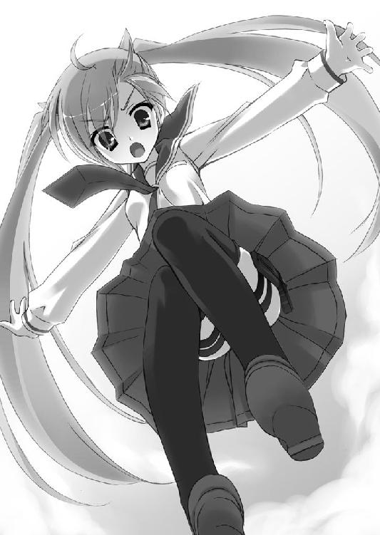
二丁拳銃に手を掛けながら、アリアが言う。
「撃つなアリア。相手は部外者だ。ケガさせたら大事になるぞ」
「......じゃあどうするつもりよ」
言われて、俺は......
半ばヤケクソ気味に、屋上の出入口になっている階段の扉に駆け寄る。
そしてそのドアノブを、ガンガン！ と、買い直したばかりのベレッタでブチ壊した。
よし、上手い具合にひしゃげてくれた。これでここからは出られないハズだ。
「で、出口ふさいでどうするつもりよ！」
ぎー！ と怒るアリアに、俺は苦笑いしながら振り返った。
これ、きっと、すごく情けない顔なんだろうな。
「悪りぃなアリア。今の俺には、こんな事しか思いつかねーんだ」
「？」
「お前......俺のために、飛んでくれたんだよな、ここから」
俺が、『武偵殺し』にチャリを乗っ取られた時。
アリア。
お前はこの女子寮の屋上から、俺のために飛び降りた。
飛び降りて、くれたんだよな。
「アリア。今の俺は何にもできない、素の俺だけどな」
「......？」
「――お前がしてくれたことを、恩返しするぐらいのことは――できるんだよっ！」
来いアリア！
お前こそ覚悟しろってんだ！
こんなダメなヤツを相棒にするつもりなら、
このぐらいの無茶、しなきゃなんねーんだぞ！
――俺はさっきひしゃげた金網に向かって、走る。
「キンジ!?」
アリアが、後を追って走ってくる。
「アリア！ お前は独唱曲だ！ そうだ！ そうなんだろ！ でもな――」
俺はジャンプ台みたいになった金網を、まんま、ジャンプ台にして――
「俺が、ＢＧＭぐらいにはなってやる!!」
絶叫し――
俺は、昇りたての満月をまたぐように、空を飛んだ。
――なあ。
俺は、お人好しなんだろうか？
いったい、なんで、こんなことになっちまったんだろうな？
今さっき金網に引っかけたベルトのワイヤーが、俺の落下速度を和らげている。
盛大にスカートを翻しながら飛び降りてきたアリアが、空中で俺に抱きついてきて――
ぼすすっ！
俺とアリアは、女子寮の下にあった温室のビニールハウスに突っ込んだ。
ビニールの屋根がクッションになる――かと思ったんだが。
びりがしゃ、と、俺たちはそのまま屋根を突き破り、温室の中に落っこちてしまう。
「......っ......ってぇ......」
「バ......バカキンジ......！」
さすがに、これは無茶だったか。
俺とアリアは、マンガみたいに目をグルグル回してしまった。
――よろ、よろ、と起き上がったアリアから、
「サ、サイテー。あんた、バカキンジモードなのね......？」
とうとうそんな言葉が出てきてしまって、俺は頬を引きつらせる。
完全にではないまでも、俺の秘密を知る人間が増えちまったな。
上空からは、温室にヘリのサーチライトがあてられてきた。
俺たちはその丸い光の中に、照らし出される。
まるで、歌劇の一幕みたいに。
「キンジ」
アリアが、俺にその紅い瞳を向けてくる。
俺は尻餅をついたまま、アリアを見上げた。
「あんたには何かをスイッチにして、急激に高まる不思議な力がある」
「......」
「それが何なのかは分からない。あんたもそれを自分では制御できてない」
「............」
「でもね、今、あたし思いついたの。それなら普段からそれを出せるように――あんたを調教してやればいいのよ！ そうよ！ 簡単なことだったんじゃない！ ね!?」
「ちょっ......！ そ、それは物理的に......は可能かもしれないが、倫理的にムリだ！」
「男が二言するんじゃないわよ！」
「一言もしてねーよ！」
「うるさいうるさい！ あたしはあんたをパートナーにして、曾お爺さまみたいに立派な『Ｈ』になるの！ そう決めたんだから！」
「だ......だから何なんだよその『Ｈ』ってのは――！」
「まだ分かってなかったの!? 信じらんない！ バカバカ！ どバカ！ ギネス級のバカ！ バカの金メダル！」
言い過ぎだろコラ。
「ああもう！ あんたで決定したんだから教えてあげるわよ！ あたしの名前は――」
アリアは犬歯をむくと――ぐい！ と。
両手を腰にあて、その寄りも上がりもしない胸を張った。
「神崎・ホームズ・アリア！」
「ホー、ムズ......!?」
「そう！ あたしはシャーロック・ホームズ４世よ！ で、あんたはあたしのパートナー、Ｊ・Ｈ・ワトソンに決定したの！ もう逃がさないからね！ 逃げようとしたら――」
待て、待て。
待ってくれ！
「――風穴あけるわよ!!」
エピローグ Go For The NEXT!!!
シャーロック・ホームズ。
１００年ほど前に活躍した、イギリスの名探偵。拳銃の名手で格闘技の達人。
そして、理子はフランスの怪盗リュパン――４世。
初代ホームズと怪盗リュパンはフランスで戦っている。
そして引き分けたまま、一族に遺恨を残した――と、探偵科の教科書に書いてあった。
で、『ホームズ』は、フランス語では『オルメス』と発音する......らしい、のだ。
そういうこと、だった、のか。
でも......なぁ。
ももまんが好物で。ことあるごとに拳銃ぶっ放して。ポン刀ぶん回して。
こんな......ちっこカワイイ......
――こんなホームズ、ありえんだろ！
という俺の内心の抗議は全く無意味で、アリアは俺のモード切り替えの鍵を探るというハタ迷惑な名目の元、なんと俺の部屋に戻ってきてしまった。
同居は勘弁してくれと抗議したら、『武偵殺し』の一件は理子を捕まえてないからまだ解決してないでしょと言われてしまった。お前、そういうの、屁理屈っていうんだぞ。
とはいえ......理子はどうせ生きてるだろうというアリアの意見には俺も同意だ。それにアイツが事あるごとに言っていた兄さんのこと、そしてイ・ウーとやらのことも気になる。どこからともなくＡＮＡ６００便を撃った、あのミサイルだって謎だ。
この事件――これにて一件落着、ってことにはまだ、なってないんだな。
そんな思いを胸の片隅に置きつつ、ももまんとウナギまんはどっちがうまいかでアリアと口ゲンカしていたある夜――
ポケットに入れていた俺のケータイから、メール着信音が上がった。
この部屋は微妙に電波状況が悪く、たまにメールが送られてから着信するまで少し時間がかかったり、後でまとめて来たりするのだが......画面を見て、俺はギョッとする。
現在の未読メール‥49件。留守番電話サービス‥録音18件。
それも全部、白雪から来てる。
そこには――
『キンちゃん、女の子と同棲してるってホント？』
に始まり、
『さっき恐山から帰ってきたんだけどね、神崎・Ｈ・アリアって女の子が、キンちゃんをたぶらかしたって噂を聞いたの！』
『どうして返事くれないの？』
『すぐ行くから！』
と、この30分の間に白雪からのメールがコワイものに進化していく様が見てとれる。
「ア、アリア、に、に、にに、ににに逃げろッ！」
「な、何よ。なに急にガクガク震えてんのよ。キ、キモいわよキンジ......」
「ぶ、ぶ、『武装巫女』が――うッ。マズい......来た......！」
どどどどどどどどど............!!
猛牛か何かが突進しているかのような足音が、マンションの廊下に響き渡っている。
近づいて、い、る――！
しゃきん!!
金属音と共に、玄関のドアが冗談のように斬り開けられた。
そこに仁王立ちするのは――
巫女装束に額金、たすき掛けという戦装束に身を固めた――
「白雪！」
だった。
ここまで猛突進してきたらしい白雪は息をぜーぜー切らせながら、ぱっつん前髪の下の眉毛をギギギンッとつり上げている。
「やっぱり――いた!! 神崎！ Ｈ！ アリア!!」
「ま、待て！ 落ち着け白雪！」
「キンちゃんは悪くない！ キンちゃんは騙されたに決まってる！」
――一体どこにスイッチがあるのか未だに分からないのだが、白雪はこうやって、ときどきなぜか鬼神のようなバーサーカーになることがある。
そしてこういう時、なぜか俺の周囲にいる人間――大抵、女子が攻撃を受けるのだ。
「この泥棒ネコ！ き、き、キンちゃんをたぶらかして汚した罪、死んで償え!!」
白雪は携えていた青光りする日本刀を、ぎららり！ と大上段に構える。
さすがのアリアも引きまくって、拳銃を抜くことすら忘れている。
「やっ、やめろ白雪！ 俺はどっこも汚れてない！」
「キンちゃんどいて！ どいてくれないと、そいつを！ そいつ殺せない！」
「き、キンジぃ！ なんとかしなさいよ！ な、なんなのよこの展開！」
なんなのよ、って――！ そんなの、俺が！
俺 が 聞 き て え よ ！
To Be Continued!!!
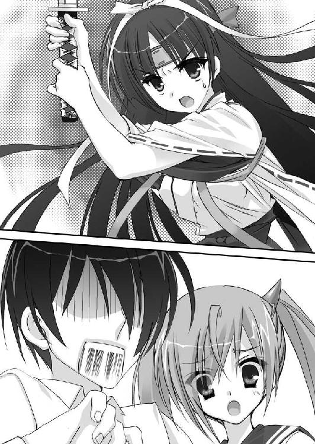
あとがき
『ちっこかわいい子は何をやっても許される！』
というわけでお待たせしました、神崎・Ｈ・アリアの登場です！
アリアは身長１４２センチながら二丁拳銃をぶっ放し、二刀流の刀もぶん回す、凶暴な女の子です。しかしこの子、強いだけじゃありません。ラブ関連が大のニガテ、赤面癖、好物は〝ももまん〟と、フタを開けてみればキュートなところもいっぱいです。
この本を読んで下さった読者さんが、そんなアリアのことを
「かわいい！」
と思って下されば、赤松は幸せです。
それがあなたとアリアの、ステキな出会いになることでしょう。
さてアリアは物語の中で、クラスメイトの少年・キンジと出会います。
そしてキンジの奇妙な潜在能力に気づき、自分の〝ドレイ〟にしようとするから一大事。
あなたは――キンジになったつもりで、ちっこかわいいアリアに追っかけ回されるスリルをたっぷり味わってみてくださいね。
この本の執筆に際しては、たくさんの人が赤松を助けてくださいました。
まずは三坂編集長と、笹尾編集。何度も何度も草稿を読んで下さり、そのたびに貴重なコメントをたくさん下さったこと、心より感謝しております。
そしてアリアたちのイラストを描いて下さった、こぶいちさん。アリアたちを私のイメージ通りどころかそれ以上に魅力的に描いていただき、ありがとうございました。ちっこかわいい表紙を拝見した時には、「とったどー！」と宇宙に叫んでしまったほどです。
さらに、作中に出てくるゴスロリゲームのタイトルを考えてくれた遊真一希さん、渡辺伊織さん、森田季節さん。貴重な助言を下さった重馬敬さん、日日日さん、夏寿司さん、田口一さん、七位連一さん、星真仁さん、まつともさん。『強猥』という漢字の読み方を教えて下さった武田弁護士。銃のことを教えてくれたＡさん。そして、家族の皆さん。
みなさんのおかげで、私は本当に、この本を楽しく書き上げることができました。
この楽しさが、読者の皆さんにも共感してくれることを願って止みません。
アリアが一人でも多くの読者さんと出会い、幸せな子になってくれますように。
２００８年８月吉日
赤松中学
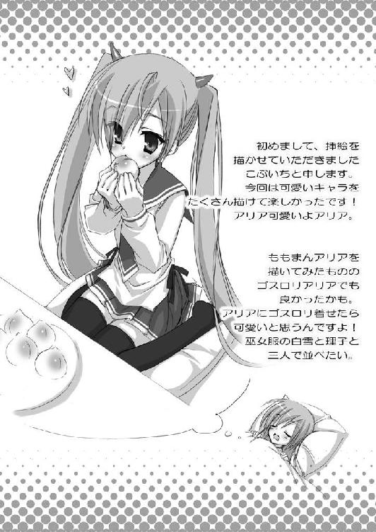
著者
赤松中学（あかまつ・ちゅうがく）
生年月日、年齢、出身地、現住所に至るまで全てが不明の覆面作家。
ＳＦファンタジー小説『アストロノト！』で第３回ＭＦ文庫Ｊライトノベル新人賞優秀賞を受賞。
本作・武装学園小説『緋弾のアリア』は、同作家の２シリーズ目となる。
イラスト
こぶいち
ゆずソフト所属の原画担当。
代表作は『ぶらばん！』『ＥＸＥ』『夏空カナタ』。
趣味はゲーム、読書。
ゲームはもっぱら携帯ゲームばかりをプレイ中。
緋弾のアリア
発行日 ２００８年８月31日
著 者 赤松中学
イラスト こぶいち
発行人 三坂泰二
発行所 株式会社メディアファクトリー
〒１０４｜００６１
東京都中央区銀座８｜４｜17
電 話 ０５７０｜００２｜００１
０３｜５４６９｜３４６０
(C) 2008 Chugaku Akamatsu
●株式会社メディアファクトリーＭＦ文庫Ｊ『緋弾のアリア』（２００８年８月31日 初版発行）に基づいて制作されました。
※本書の内容を無断で複製・複写・放送・データ配信などをすることは、かたくお断りいたします。